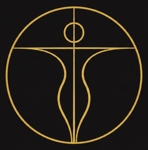
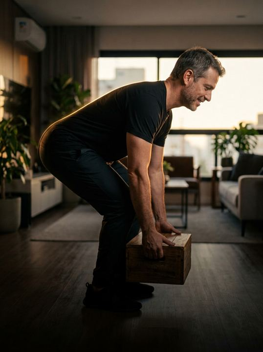

<!doctype html>
<html lang="pt-BR">
<head>
<meta charset="utf-8">
<meta name="viewport" content="width=device-width, initial-scale=1, viewport-fit=cover">
<title>Raio-X Biomecânico · Área de membros</title>
<meta name="theme-color" content="#0F0F0E">
<meta name="apple-mobile-web-app-capable" content="yes">
<meta name="apple-mobile-web-app-status-bar-style" content="black-translucent">
<meta name="apple-mobile-web-app-title" content="Raio-X">
<link rel="icon" type="image/png" href="assets/simbolo.png">
<link rel="apple-touch-icon" href="assets/simbolo.png">
<link rel="preconnect" href="https://fonts.googleapis.com">
<link rel="preconnect" href="https://fonts.gstatic.com" crossorigin>
<link rel="stylesheet" href="https://fonts.googleapis.com/css2?family=Cinzel:wght@500;600;700&family=Cormorant+Garamond:ital,wght@1,500;1,600&family=Outfit:wght@300;400;500;600;700;800&display=swap">
<style>
/* Layout: app de celular (coluna até 480px) com barra de abas fixa embaixo. Início = sequência da semana + checkpoint atual + jornada; Aula = vídeo + concluir; Calendário = mês com dias treinados. Tema único escuro, identidade Linha de Ouro. */
:root{
  --carvao:#0F0F0E;
  --carvao-2:#171614;
  --cartao:#1E1D1A;
  --grafite:#2A2823;
  --linha:#35322B;
  --osso:#E0E0E0;
  --texto:#F6F3EC;
  --apoio:#B8B2A6;
  --mudo:#857F73;
  --ambar:#D4A017;
  --ambar-claro:#EEC452;
  --ambar-escuro:#8A6810;
  --tinta:#121212;
  --verde:#7FBF7F;
  --marca:'Cinzel', 'Trajan Pro', Georgia, serif;
  --corpo:'Outfit', 'Avenir Next', 'Segoe UI', system-ui, sans-serif;
  --virada:'Cormorant Garamond', Garamond, Georgia, serif;
  --ease:cubic-bezier(.2,.7,.2,1);
  color-scheme:dark;
}
*{box-sizing:border-box;-webkit-tap-highlight-color:transparent}
html,body{background:var(--carvao)}
body{margin:0;color:var(--texto);font-family:var(--corpo);font-size:16px;line-height:1.5;-webkit-font-smoothing:antialiased}
img,video{display:block;max-width:100%}
button{font:inherit;color:inherit;background:none;border:0;cursor:pointer;padding:0}
button:focus-visible,a:focus-visible{outline:2px solid var(--ambar-claro);outline-offset:3px;border-radius:8px}
h1,h2,h3,p{margin:0}
.app{max-width:480px;margin:0 auto;min-height:100vh;padding:0 18px calc(96px + env(safe-area-inset-bottom, 0px));position:relative}
.rotulo{font-family:var(--marca);font-size:11px;font-weight:600;letter-spacing:.24em;text-transform:uppercase;color:var(--ambar)}
.rotulo.mudo{color:var(--mudo)}
.virada{font-family:var(--virada);font-style:italic;font-weight:600;color:var(--ambar)}
.entra{animation:entra .35s var(--ease) both}
@keyframes entra{from{opacity:0;transform:translateY(10px)}to{opacity:1;transform:none}}

/* Marca */
.marca{display:flex;align-items:center;gap:10px;padding-top:calc(14px + env(safe-area-inset-top, 0px));padding-bottom:12px;border-bottom:1px solid rgba(212,160,23,.22)}
.marca img{width:30px;height:30px;object-fit:contain;mix-blend-mode:lighten}
.marca span{font-family:var(--marca);font-size:12px;font-weight:600;letter-spacing:.2em;white-space:nowrap;color:var(--ambar)}
.marca i{flex:1}
.marca small{font-family:var(--marca);font-size:9px;font-weight:600;letter-spacing:.14em;white-space:nowrap;color:var(--mudo)}
/* Topo */
.topo{display:flex;align-items:center;justify-content:space-between;gap:12px;padding-block:18px 14px}
.ola{display:flex;align-items:center;gap:12px;min-width:0}
.avatar{width:44px;height:44px;border-radius:50%;background:linear-gradient(160deg,var(--grafite),var(--carvao-2));border:1px solid var(--ambar);display:grid;place-items:center;font-weight:700;color:var(--ambar);flex:none}
.ola small{display:block;font-size:13px;color:var(--mudo)}
.ola b{font-size:18px;font-weight:700}
.chama{display:flex;align-items:center;gap:6px;white-space:nowrap;flex:none;padding:8px 12px;border-radius:999px;background:rgba(212,160,23,.12);border:1px solid rgba(212,160,23,.4);font-weight:700;font-size:15px;color:var(--ambar-claro);font-variant-numeric:tabular-nums}

/* Semana estilo GymRats */
.semana{display:grid;grid-template-columns:repeat(7,1fr);gap:6px;padding:14px 12px;border-radius:20px;background:var(--carvao-2);border:1px solid var(--linha)}
.dia{display:flex;flex-direction:column;align-items:center;gap:6px}
.dia span{font-size:11px;font-weight:600;letter-spacing:.06em;color:var(--mudo);text-transform:uppercase}
.dia i{width:36px;height:36px;border-radius:50%;display:grid;place-items:center;font-style:normal;font-size:14px;font-weight:600;color:var(--apoio);border:1.5px solid var(--linha);font-variant-numeric:tabular-nums}
.dia.feito i{background:linear-gradient(160deg,var(--ambar-claro),var(--ambar));border-color:transparent;color:var(--tinta)}
.dia.hoje i{border-color:var(--ambar);color:var(--texto);box-shadow:0 0 0 3px rgba(212,160,23,.18)}
.dia.hoje span{color:var(--ambar)}
.dia.futuro i{opacity:.45}

/* Cartão do checkpoint atual */
.atual{position:relative;margin-top:18px;border-radius:24px;overflow:hidden;min-height:250px;display:flex;flex-direction:column;justify-content:flex-end;padding:20px;border:1px solid rgba(212,160,23,.55);isolation:isolate;text-align:left;width:100%}
.atual img{position:absolute;inset:0;width:100%;height:100%;object-fit:cover;z-index:-2}
.atual::before{content:"";position:absolute;inset:0;z-index:-1;background:linear-gradient(180deg,rgba(15,15,14,.1),rgba(15,15,14,.92) 72%)}
.atual h2{font-size:26px;line-height:1.15;font-weight:800;letter-spacing:-.02em;margin:6px 0 4px}
.atual .meta{display:flex;align-items:center;gap:10px;font-size:14px;color:var(--apoio)}
.play-btn{position:absolute;top:18px;right:18px;width:52px;height:52px;border-radius:50%;background:var(--ambar);display:grid;place-items:center;box-shadow:0 10px 30px -6px rgba(212,160,23,.7)}
.continuar{display:flex;align-items:center;justify-content:center;gap:10px;margin-top:14px;width:100%;min-height:54px;border-radius:999px;background:linear-gradient(180deg,var(--ambar-claro),var(--ambar));color:var(--tinta);font-weight:700;font-size:17px}

/* Progresso */
.progresso{margin-top:18px;padding:16px 18px;border-radius:18px;background:var(--carvao-2);border:1px solid var(--linha);display:flex;flex-direction:column;gap:10px}
.progresso-topo{display:flex;justify-content:space-between;align-items:baseline;gap:10px}
.progresso-topo b{font-size:15px;font-weight:600}
.progresso-topo span{font-size:14px;color:var(--apoio);font-variant-numeric:tabular-nums}
.barra{height:8px;border-radius:4px;background:var(--grafite);overflow:hidden}
.barra i{display:block;height:100%;border-radius:4px;background:linear-gradient(90deg,var(--ambar-escuro),var(--ambar),var(--ambar-claro));transition:width .8s var(--ease)}

/* Jornada */
.secao{display:flex;justify-content:space-between;align-items:baseline;margin:28px 0 12px}
.secao h3{font-size:20px;font-weight:700}
.jornada{list-style:none;margin:0;padding:0;display:flex;flex-direction:column;gap:10px;position:relative}
.cp{display:grid;grid-template-columns:84px 1fr auto;gap:14px;align-items:center;padding:10px;border-radius:18px;background:var(--carvao-2);border:1px solid var(--linha);width:100%;text-align:left;position:relative}
.cp.atualcp{border-color:var(--ambar);background:linear-gradient(160deg,rgba(212,160,23,.12),var(--carvao-2) 60%)}
.thumb{position:relative;width:84px;height:84px;border-radius:14px;overflow:hidden;background:var(--grafite)}
.thumb img{width:100%;height:100%;object-fit:cover}
.cp.bloq .thumb img{filter:grayscale(1) brightness(.45) blur(1.5px)}
.thumb .cad{position:absolute;inset:0;display:grid;place-items:center}
.cp-info{min-width:0;display:flex;flex-direction:column;gap:4px}
.cp-info small{font-family:var(--marca);font-size:10px;font-weight:600;letter-spacing:.2em;color:var(--ambar)}
.cp.bloq .cp-info small{color:var(--mudo)}
.cp-info b{font-size:16px;font-weight:600;line-height:1.25}
.cp.bloq .cp-info b{color:var(--apoio)}
.regiao{display:inline-flex;align-items:center;gap:8px;font-size:12px;color:var(--apoio)}
.mini7{display:inline-flex;gap:3px}
.mini7 i{width:6px;height:6px;border-radius:50%;background:#3A372F}
.mini7 i.on{background:var(--ambar);box-shadow:0 0 6px rgba(212,160,23,.8)}
.cp.bloq .mini7 i.on{background:#6B6556;box-shadow:none}
.status{width:34px;height:34px;border-radius:50%;display:grid;place-items:center;flex:none}
.status.ok{background:var(--ambar);color:var(--tinta)}
.status.agora{border:1.5px solid var(--ambar);color:var(--ambar)}
.status.lock{border:1px solid var(--linha);color:var(--mudo)}

/* Tela da aula */
.voltar{display:inline-flex;align-items:center;gap:8px;min-height:44px;color:var(--apoio);font-size:15px;margin-top:8px}
.player{position:relative;margin-top:6px;border-radius:20px;overflow:hidden;background:#141414;border:1px solid var(--linha);aspect-ratio:16/9}
.player video,.player img{width:100%;height:100%;object-fit:cover}
.player .breve{position:absolute;inset:0;display:flex;flex-direction:column;align-items:center;justify-content:center;gap:10px;background:rgba(15,15,14,.72);text-align:center;padding:16px}
.player .breve b{font-size:16px}
.player .breve span{font-size:13px;color:var(--apoio)}
.aula-cab{display:flex;flex-direction:column;gap:8px;margin-top:18px}
.aula-cab h1{font-size:28px;line-height:1.12;font-weight:800;letter-spacing:-.02em}
.chips{display:flex;flex-wrap:wrap;gap:8px}
.chip{display:inline-flex;align-items:center;gap:8px;padding:6px 12px;border-radius:999px;font-size:13px;background:rgba(255,255,255,.04);border:1px solid var(--linha);color:var(--osso)}
.etapas{margin-top:20px;display:flex;flex-direction:column;gap:8px}
.etapa{display:flex;align-items:center;gap:12px;padding:14px 16px;border-radius:16px;background:var(--carvao-2);border:1px solid var(--linha)}
.etapa i{flex:none;width:28px;height:28px;border-radius:50%;display:grid;place-items:center;font-style:normal;font-size:13px;font-weight:700;border:1px solid var(--ambar);color:var(--ambar)}
.etapa div{display:flex;flex-direction:column}
.etapa b{font-size:15px;font-weight:600}
.etapa span{font-size:13px;color:var(--mudo)}
.bloco{margin-top:22px;display:flex;flex-direction:column;gap:10px}
.bloco p{font-size:15px;color:var(--osso);line-height:1.5}
.protocolos{list-style:none;margin:0;padding:0;display:flex;flex-direction:column;gap:8px}
.protocolos li{display:flex;align-items:center;justify-content:space-between;gap:12px;padding:12px 14px;border-radius:14px;background:var(--carvao-2);border:1px solid var(--linha)}
.protocolos b{font-size:14px;font-weight:500;line-height:1.35}
.protocolos .tag{flex:none;font-size:11px;letter-spacing:.06em;text-transform:uppercase;color:var(--ambar-claro);border:1px solid rgba(212,160,23,.4);border-radius:999px;padding:4px 9px}
.concluir{position:sticky;bottom:calc(84px + env(safe-area-inset-bottom, 0px));margin-top:22px;width:100%;min-height:58px;border-radius:999px;display:flex;align-items:center;justify-content:center;gap:10px;font-weight:700;font-size:17px;background:linear-gradient(180deg,var(--ambar-claro),var(--ambar));color:var(--tinta);box-shadow:0 14px 34px -12px rgba(212,160,23,.8)}
.concluir.feito{background:var(--cartao);color:var(--ambar-claro);border:1px solid rgba(212,160,23,.5);box-shadow:none}

/* Celebração */
.cel-fundo{position:fixed;inset:0;z-index:60;background:rgba(8,8,8,.8);-webkit-backdrop-filter:blur(4px);backdrop-filter:blur(4px);display:grid;place-items:center;padding:24px;animation:surge .2s ease-out}
.cel{width:100%;max-width:380px;border-radius:28px;padding:30px 24px 24px;text-align:center;background:radial-gradient(120% 80% at 50% 0%,rgba(212,160,23,.28),transparent 60%),var(--cartao);border:1px solid rgba(212,160,23,.6);display:flex;flex-direction:column;align-items:center;gap:12px;animation:pula .5s var(--ease)}
.medalha{width:96px;height:96px;border-radius:50%;display:grid;place-items:center;background:linear-gradient(160deg,var(--ambar-claro),var(--ambar-escuro));box-shadow:0 0 0 8px rgba(212,160,23,.15),0 0 40px rgba(212,160,23,.6)}
.cel h2{font-size:26px;font-weight:800}
.cel p{color:var(--apoio);font-size:15px}
.cel .liberado{margin-top:6px;width:100%;display:flex;align-items:center;gap:12px;padding:12px;border-radius:16px;background:var(--carvao-2);border:1px solid var(--linha);text-align:left}
.cel .liberado img{width:56px;height:56px;border-radius:12px;object-fit:cover}
.cel .liberado small{font-family:var(--marca);font-size:10px;letter-spacing:.2em;color:var(--ambar)}
.cel .liberado b{display:block;font-size:15px}
.cel .continuar{margin-top:8px}
@keyframes surge{from{opacity:0}to{opacity:1}}
@keyframes pula{0%{transform:scale(.85);opacity:0}60%{transform:scale(1.03);opacity:1}100%{transform:none}}
.confete{position:fixed;inset:0;pointer-events:none;z-index:61;overflow:hidden}
.confete i{position:absolute;top:-12px;width:8px;height:14px;border-radius:2px;animation:cai 1.6s ease-in forwards}
@keyframes cai{to{transform:translateY(105vh) rotate(540deg);opacity:.2}}

/* Calendário */
.cal-cab{display:flex;align-items:center;justify-content:space-between;margin-top:18px}
.cal-cab h2{font-size:22px;font-weight:700;text-transform:capitalize}
.cal-nav{display:flex;gap:8px}
.cal-nav button{width:44px;height:44px;border-radius:50%;border:1px solid var(--linha);display:grid;place-items:center;color:var(--apoio)}
.stats{display:grid;grid-template-columns:repeat(3,1fr);gap:10px;margin-top:18px}
.stats div{padding:14px 12px;border-radius:16px;background:var(--carvao-2);border:1px solid var(--linha);display:flex;flex-direction:column;gap:2px}
.stats strong{font-size:28px;line-height:1.1;font-weight:800;color:var(--ambar);font-variant-numeric:tabular-nums}
.stats span{font-size:12px;color:var(--apoio)}
.grade-mes{margin-top:18px;padding:16px 12px;border-radius:20px;background:var(--carvao-2);border:1px solid var(--linha);display:grid;grid-template-columns:repeat(7,1fr);gap:6px}
.grade-mes .sem{text-align:center;font-size:11px;font-weight:600;letter-spacing:.06em;color:var(--mudo);padding-bottom:4px}
.grade-mes .d{aspect-ratio:1;border-radius:50%;display:grid;place-items:center;font-size:14px;color:var(--apoio);font-variant-numeric:tabular-nums;position:relative}
.grade-mes .d.f{background:linear-gradient(160deg,var(--ambar-claro),var(--ambar));color:var(--tinta);font-weight:700}
.grade-mes .d.h{box-shadow:inset 0 0 0 1.5px var(--ambar);color:var(--texto);font-weight:600}
.grade-mes .d.fut{opacity:.35}
.legenda{display:flex;gap:16px;margin-top:12px;font-size:13px;color:var(--apoio)}
.legenda span{display:inline-flex;align-items:center;gap:6px}
.legenda i{width:12px;height:12px;border-radius:50%}
.historico{list-style:none;margin:0;padding:0;display:flex;flex-direction:column;gap:8px}
.historico li{display:flex;justify-content:space-between;gap:12px;padding:12px 16px;border-radius:14px;background:var(--carvao-2);border:1px solid var(--linha);font-size:14px}
.historico li span{color:var(--mudo)}
.reset{display:block;margin:22px auto 0;min-height:44px;color:var(--mudo);font-size:13px;text-decoration:underline;text-underline-offset:3px}

/* Crise */
.crise{margin-top:18px;border-radius:24px;padding:22px;background:linear-gradient(160deg,#3A2D0C,#1C1810);border:1px solid rgba(212,160,23,.6);display:flex;flex-direction:column;gap:12px}
.crise h1{font-size:28px;font-weight:800;line-height:1.1}
.crise p{color:var(--apoio);font-size:15px}

/* Abas */
.abas{position:fixed;left:0;right:0;bottom:0;z-index:40;background:rgba(15,15,14,.94);-webkit-backdrop-filter:blur(12px);backdrop-filter:blur(12px);border-top:1px solid rgba(212,160,23,.25);padding-bottom:env(safe-area-inset-bottom, 0px)}
.abas div{max-width:480px;margin:0 auto;display:grid;grid-template-columns:repeat(3,1fr)}
.aba{min-height:66px;display:flex;flex-direction:column;align-items:center;justify-content:center;gap:4px;font-size:12px;font-weight:500;color:var(--mudo)}
.aba.on{color:var(--ambar)}
.aba.on svg{filter:drop-shadow(0 0 6px rgba(212,160,23,.6))}
@media (prefers-reduced-motion:reduce){*,*::before,*::after{animation:none!important;transition:none!important}}
.credito{display:block;text-align:center;margin:28px auto 0;padding:8px 0;font-size:12px;letter-spacing:.04em;color:var(--mudo);text-decoration:none;opacity:.5;border:0}
.credito b{font-family:inherit;font-weight:600;letter-spacing:.04em;color:inherit}
.credito:hover{opacity:.8}
/* Pacote v1.0: fases, triagem, leitura, ritual, quiz */
.linha-dia{margin-bottom:14px;padding:14px 16px;border-radius:16px;border:1px solid rgba(212,160,23,.35);background:linear-gradient(160deg,rgba(212,160,23,.1),var(--carvao-2) 70%);display:flex;flex-direction:column;gap:4px}
.linha-dia b{font-size:17px}
.linha-dia span:last-child{font-size:14px;color:var(--apoio)}
.nota-42{font-size:12px;color:var(--mudo)}
.fase-cab{margin:22px 0 10px;display:flex;flex-direction:column;gap:4px}
.fase-cab h3{font-size:22px;font-weight:800}
.fase-cab p{font-size:14px;color:var(--apoio)}
.fase-cab.apoio{padding-top:16px;border-top:1px dashed var(--linha)}
.cp.apoiocp{border-style:dashed}
.status.apoio{border:1.5px dashed var(--ambar);color:var(--ambar)}
.mods{list-style:none;margin:0;padding:0;display:flex;flex-direction:column;gap:8px}
.mod-item{width:100%;display:grid;grid-template-columns:22px 1fr 20px;align-items:center;gap:12px;padding:14px 16px;border-radius:14px;background:var(--carvao-2);border:1px solid var(--linha);text-align:left;font-size:15px;color:var(--osso)}
.mod-item svg{color:var(--ambar)}
.aviso{margin-top:16px;padding:14px 16px;border-radius:14px;background:var(--carvao-2);border:1px solid var(--linha);display:flex;flex-direction:column;gap:8px;font-size:14px;color:var(--osso)}
.aviso.alerta{border-color:rgba(230,120,90,.55);background:rgba(230,120,90,.08)}
.aviso b{font-size:15px;color:var(--texto)}
.link-acao{align-self:flex-start;color:var(--ambar-claro);text-decoration:underline;text-underline-offset:3px;min-height:40px;font-size:14px}
.triagem-card{min-height:150px;border-style:dashed}
.miudo{font-size:13px;color:var(--mudo);margin-top:10px}
.triagem{list-style:none;counter-reset:t;margin:18px 0 0;padding:0;display:flex;flex-direction:column;gap:10px}
.triagem li{counter-increment:t;padding:14px 16px;border-radius:16px;background:var(--carvao-2);border:1px solid var(--linha);display:flex;flex-direction:column;gap:10px}
.triagem li p{font-size:15px;line-height:1.45}
.triagem li p::before{content:counter(t)". ";color:var(--ambar);font-weight:700}
.sn{display:grid;grid-template-columns:1fr 1fr;gap:8px}
.sn label,.opcs label{position:relative;display:block;cursor:pointer}
.sn input,.opcs input{position:absolute;opacity:0;pointer-events:none}
.sn span,.opcs span{display:flex;align-items:center;justify-content:center;min-height:46px;border-radius:12px;border:1px solid var(--linha);font-weight:600;font-size:15px;color:var(--apoio)}
.opcs{display:flex;flex-direction:column;gap:6px}
.opcs span{justify-content:flex-start;padding:10px 14px;font-weight:500;text-align:left}
.sn input:checked+span,.opcs input:checked+span{border-color:var(--ambar);background:rgba(212,160,23,.14);color:var(--texto)}
.sn input:focus-visible+span,.opcs input:focus-visible+span{outline:2px solid var(--ambar-claro);outline-offset:2px}
.erro-tri{margin-top:12px;color:#E6785A;font-size:14px}
.gab{display:block;width:100%;border-radius:18px;overflow:hidden;border:1px solid var(--linha);background:#F4F1EA}
.gab img{width:100%;height:auto}
.zoom{position:fixed;inset:0;z-index:70;background:rgba(8,8,8,.92);display:grid;place-items:center;padding:16px}
.zoom img{max-height:92vh;width:auto;border-radius:12px}
.zoom button{position:absolute;top:12px;right:16px;width:44px;height:44px;font-size:28px;color:var(--texto)}
.leitura{margin-top:22px;border-radius:16px;border:1px solid rgba(212,160,23,.4);background:var(--carvao-2);overflow:hidden}
.leitura summary{list-style:none;display:flex;align-items:center;gap:10px;padding:16px;font-weight:600;color:var(--ambar-claro);cursor:pointer}
.leitura summary::-webkit-details-marker{display:none}
.leitura .texto{padding:0 16px 18px}
.texto{display:flex;flex-direction:column;gap:12px;margin-top:16px;font-size:15px;line-height:1.6;color:var(--osso)}
.texto h4{font-size:18px;font-weight:700;color:var(--texto);margin:14px 0 0;line-height:1.3}
.texto h5{font-size:15px;font-weight:700;color:var(--ambar-claro);margin:8px 0 0}
.texto h6{font-family:var(--marca);font-size:10px;letter-spacing:.2em;text-transform:uppercase;color:var(--ambar);margin:4px 0 -4px;font-weight:600}
.texto p,.texto li{margin:0}
.texto ul,.texto ol{margin:0;padding-left:20px;display:flex;flex-direction:column;gap:6px}
.texto li::marker{color:var(--ambar)}
.texto table{width:100%;border-collapse:collapse;font-size:13px;display:block;overflow-x:auto}
.texto th,.texto td{text-align:left;vertical-align:top;padding:8px 10px;border-bottom:1px solid var(--linha)}
.texto th{font-weight:600;color:var(--ambar-claro);white-space:nowrap}
.protocolos b small{display:block;font-family:var(--marca);font-size:10px;letter-spacing:.18em;color:var(--mudo);margin-bottom:2px}
.ritual .escala{padding:12px 14px;border-radius:14px;background:var(--carvao-2);border:1px solid var(--linha);display:flex;flex-direction:column;gap:10px}
.escala-cab{display:flex;justify-content:space-between;align-items:baseline;gap:10px}
.escala-cab b{font-size:15px}
.escala-cab span{font-size:12px;color:var(--mudo)}
.nvs{display:grid;grid-template-columns:repeat(11,1fr);gap:4px}
.nv{min-height:36px;border-radius:9px;border:1px solid var(--linha);font-size:13px;font-weight:600;color:var(--apoio);font-variant-numeric:tabular-nums}
.nv.on{background:var(--ambar);border-color:var(--ambar);color:var(--tinta)}
.nv.alto.on{background:#E6785A;border-color:#E6785A}
.quiz-topo{display:flex;justify-content:space-between;align-items:center;margin-top:14px}
.pontos{display:flex;gap:5px}
.pontos i{width:22px;height:5px;border-radius:3px;background:var(--grafite)}
.pontos i.on{background:var(--ambar)}
.pontos i.cur{box-shadow:0 0 0 1px var(--ambar)}
.chip.seg{margin-top:16px;border-color:rgba(230,120,90,.55);color:#F0A48C}
.pergunta{font-size:22px;line-height:1.3;font-weight:700;margin-top:16px}
.ops{display:flex;flex-direction:column;gap:8px;margin-top:18px}
.op{display:grid;grid-template-columns:30px 1fr;gap:12px;align-items:center;padding:14px;border-radius:14px;border:1px solid var(--linha);background:var(--carvao-2);text-align:left;font-size:15px;line-height:1.4}
.op i{width:30px;height:30px;border-radius:50%;display:grid;place-items:center;font-style:normal;font-weight:700;font-size:13px;border:1px solid var(--linha);color:var(--apoio)}
.op.certa{border-color:var(--verde);background:rgba(127,191,127,.1)}
.op.certa i{background:var(--verde);color:var(--tinta);border-color:var(--verde)}
.op.errada{border-color:#E6785A;background:rgba(230,120,90,.08)}
.op:disabled{cursor:default}
.explica{margin-top:16px;padding:14px 16px;border-radius:14px;display:flex;flex-direction:column;gap:6px;font-size:15px;line-height:1.5;border:1px solid var(--linha);background:var(--carvao-2)}
.explica.ok b{color:var(--verde)}
.explica.nok b{color:#F0A48C}
.resultado{margin-top:26px;border-radius:24px;padding:26px 22px;display:flex;flex-direction:column;gap:10px;text-align:center;align-items:center;border:1px solid var(--linha);background:var(--carvao-2)}
.resultado.ok{border-color:rgba(212,160,23,.6);background:radial-gradient(120% 80% at 50% 0%,rgba(212,160,23,.22),transparent 60%),var(--carvao-2)}
.resultado strong{font-size:52px;font-weight:800;line-height:1;color:var(--ambar)}
.resultado.nok strong{color:var(--apoio)}
.resultado p{color:var(--apoio);font-size:15px}
</style>
</head>
<body>
<main class="app" id="app" aria-live="polite"></main>
<nav class="abas" aria-label="Navegação"><div id="abas"></div></nav>

<script>
(function(){
  var CHAVE = 'raiox-membros-v2';
  var NOS = ['Cabeça','Ombros','Mãos','Coluna','Quadris','Joelhos','Pés'];
  /* Pacote do produto v1.0 (11/11/2026): 3 fases, 12 checkpoints, 60 fichas, 84 perguntas, 19 textos de apoio, 12 gabaritos. */
  var FICHAS = {"1": [["F01", "Reeducação Postural Ativa (Postural Correction Drills)", "Exercício"], ["F02", "Digitopressão: Pontos Sistêmicos para Postura", "Digitopressão"], ["F03", "Digitopressão Auricular: Pontos Posturais", "Digitopressão"], ["F04", "Kinesio Tape: Aplicação Postural", "Bandagem"]], "2": [["F05", "Reeducação da Marcha (Gait Retraining Drills)", "Exercício"], ["F06", "Dorsiflexão Ativa Resistida (para Foot Drop)", "Exercício"], ["F07", "Marcha na Ponta dos Pés / Calcanhares", "Exercício"], ["F08", "Monster Walk (Caminhada com Mini-Band)", "Exercício"]], "3": [["F09", "Self-Mobilization Talocrural (Mulligan Concept)", "Exercício"], ["F10", "Alongamento de Gastrocnêmio e Sóleo", "Exercício"], ["F11", "Self-Mobilization Hip Flexor (Mulligan / foam roller)", "Exercício"], ["F12", "Goblet Squat (Agachamento com Peso na Frente)", "Exercício"], ["F13", "Wall Squat com Elevação de Calcanhares", "Exercício"], ["F14", "Aplicação: Suporte de Joelho (Patelar)", "Bandagem"]], "4": [["F15", "Kneeling Hip Flexor Stretch", "Exercício"], ["F16", "Couch Stretch", "Exercício"], ["F17", "IT Band / TFL Stretch (Standing)", "Exercício"], ["F18", "Foam Roller IT Band", "Exercício"], ["F19", "Foam Roller Thoracic Extension", "Exercício"], ["F20", "Cat-Cow (Mobilização Torácica Ativa)", "Exercício"], ["F21", "Doorway Pec Stretch", "Exercício"], ["F22", "Towel Stretch (Alongamento com Toalha)", "Exercício"]], "5": [["F23", "sliders do Nervo Ciático (Neural Flossing)", "Exercício"], ["F24", "Slump Flossing (Mobilização do Neuroeixo)", "Exercício"], ["F25", "Isquiotibial em Decúbito (Supine Hamstring Stretch)", "Exercício"], ["F26", "Aplicação: Decompression Tape para Ciático", "Bandagem"]], "6": [["F27", "Dead Bug (Besouro Morto)", "Exercício"], ["F28", "Bird Dog (Cão de Caça)", "Exercício"], ["F29", "Plank Progressions (Progressões de Prancha)", "Exercício"], ["F30", "Glute Bridge (Ponte Glútea)", "Exercício"], ["F31", "Clamshell (Concha)", "Exercício"], ["F32", "Aplicação: Facilitação Abdominal (Transverso)", "Bandagem"], ["F33", "Aplicação: Facilitação Lombar (Eretor da Espinha)", "Bandagem"]], "7": [["F34", "Clamshell with Band", "Exercício"], ["F35", "Side Lying Leg Raise (Abdução em Decúbito Lateral)", "Exercício"], ["F36", "Single Leg Deadlift (Stiff-Leg Deadlift Unipodal)", "Exercício"], ["F37", "Step Up (Subida no Degrau)", "Exercício"], ["F38", "Single Leg Glute Bridge", "Exercício"], ["F39", "Quadruped Hip Extension (Donkey Kick)", "Exercício"], ["F40", "90/90 Hip Stretch", "Exercício"], ["F41", "Aplicação: Suporte Patelar (para Valgus Dinâmico)", "Bandagem"], ["F42", "Aplicação: Facilitação do Glúteo Médio", "Bandagem"]], "8": [["F43", "Serratus Punch (Protração Escapular)", "Exercício"], ["F44", "Prone Y, T, W, I (Back Extensions com Braços)", "Exercício"], ["F45", "Wall Slides (Deslizamento na Parede)", "Exercício"], ["F46", "Push-up Plus", "Exercício"], ["F47", "Sleeper Stretch (Alongamento do Posterior Capsule)", "Exercício"], ["F48", "Cross-Body Stretch", "Exercício"], ["F49", "Aplicação: Facilitação do Serrátil Anterior", "Bandagem"], ["F50", "Aplicação: Inibição do Trapézio Superior", "Bandagem"]], "9": [["F51", "Box Jumps (Saltos na Caixa)", "Exercício"], ["F52", "Drop Landing (Aterrissagem Controlada)", "Exercício"], ["F53", "Single Leg Box Jump", "Exercício"], ["F54", "Single Leg Stand on Unstable Surface", "Exercício"], ["F55", "Single Leg Reach (Alcance Unipodal)", "Exercício"]], "10": [], "11": [["F56", "Massagem Peri-oral e Mandibular", "Automassagem"]], "12": [["F57", "Y Stretching: Protocolo Completo", "Exercício"], ["F58", "W Stretching: Protocolo Completo", "Exercício"], ["F59", "Progressão Y/W com Resistência", "Exercício"], ["F60", "Integração Y/W com Respiração", "Exercício"]]};
  var QUIZ = {"1": {"qs": [{"q": "Você está na triagem e responde SIM a uma das sete perguntas de segurança. O que fazer?", "o": ["Fazer só o teste da cama, que é mais leve", "Parar os testes e procurar avaliação presencial", "Seguir para o teste 1, mas com menos força", "Repetir a triagem no dia seguinte para confirmar"], "c": 1, "e": "Um sim em qualquer uma das sete perguntas suspende todos os testes. A triagem existe para barrar o caso que não se resolve em casa.", "s": true}, {"q": "Na parede, em que ordem você encosta os quatro pontos?", "o": ["Glúteos, calcanhares, cabeça, omoplatas", "Cabeça, omoplatas, glúteos, calcanhares", "Omoplatas, cabeça, calcanhares, glúteos", "Calcanhares, glúteos, omoplatas, parte de trás da cabeça"], "c": 3, "e": "A ordem é de baixo para cima. Encostar tudo de uma vez faz o corpo escolher o que encostar e esconder o resto.", "s": true}, {"q": "Você encostou os quatro pontos, mas precisou contrair o corpo todo para manter. Como isso conta?", "o": ["Passou, porque encostou tudo", "Passou, desde que não sinta dor", "Depende da idade", "Reprovou, porque postura que precisa de força é uma pose"], "c": 3, "e": "Se você precisou segurar com força, o teste reprovou. A posição neutra é a que você mantém com o corpo relaxado.", "s": false}, {"q": "Qual é o jeito correto do queixo no teste da parede?", "o": ["Cabeça inclinada para o lado", "Queixo colado no peito", "Queixo levemente para trás, sem subir o olhar", "Queixo para cima, olhando o teto"], "c": 2, "e": "Queixo para trás, sem subir o olhar. Levantar o queixo é extensão da cervical e faz o teste virar teatro.", "s": false}, {"q": "Quantos pontos de contato são verificados no teste da parede?", "o": ["Quatro: calcanhares, glúteos, omoplatas e parte de trás da cabeça", "Cinco: incluindo as mãos", "Três: glúteos, omoplatas e cabeça", "Dois: calcanhares e cabeça"], "c": 0, "e": "São quatro. Se um deles não encosta, o teste reprovou naquele ponto.", "s": false}, {"q": "Ao apertar as omoplatas, o que NÃO pode acontecer?", "o": ["As omoplatas se aproximarem", "Você respirar normalmente", "A pelve permanecer neutra", "Os ombros subirem em direção às orelhas"], "c": 3, "e": "Se os ombros sobem, quem trabalhou foi o trapézio superior. O movimento é de escápula, não de ombro.", "s": false}, {"q": "Você reprovou no checkpoint 1. Qual é a frequência do protocolo de reeducação postural?", "o": ["Uma vez por semana", "Só quando lembrar", "Duas vezes ao dia, e encontrar a posição neutra cinco ou seis vezes durante o dia", "Uma vez por dia"], "c": 2, "e": "Duas sessões por dia e cinco ou seis lembretes ao longo do dia. O ganho vem de transferir a posição neutra para a vida, e não do exercício em si.", "s": false}]}, "2": {"qs": [{"q": "Qual é o contato correto do pé com o chão ao caminhar?", "o": ["Calcanhar primeiro, depois planta, depois dedos", "Não importa a ordem", "Planta do pé primeiro", "Ponta do pé primeiro"], "c": 0, "e": "Calcanhar, planta, dedos. O contato chapado é um dos erros que o protocolo corrige.", "s": false}, {"q": "Ao caminhar, a pelve cai para o lado da perna que está no ar. O que isso indica?", "o": ["Problema de visão", "É normal em qualquer idade", "O glúteo médio não está segurando o peso", "Falta de alongamento na panturrilha"], "c": 2, "e": "É o sinal clássico do glúteo médio que não estabiliza. É a corrente de baixo aparecendo na caminhada.", "s": false}, {"q": "Como você deve filmar a sua marcha?", "o": ["Com a câmera na mão, andando", "De frente, de perto, só os pés", "De lado, com o corpo inteiro no enquadramento", "De cima, olhando para o chão"], "c": 2, "e": "De lado e com o corpo inteiro. Só assim dá para ver calcanhar, pelve e tronco no mesmo movimento.", "s": false}, {"q": "O pé não levanta o suficiente durante o passo e arrasta no chão. Como se chama e o que indica?", "o": ["É normal em piso liso", "Joelho valgo, indica quadril fraco", "Pé chato, indica problema de arco", "Foot slap, indica falta de dorsiflexão ativa"], "c": 3, "e": "É o foot slap. Indica que a dorsiflexão ativa não está acontecendo na fase de balanço.", "s": false}, {"q": "Qual é a largura de base de suporte considerada adequada no protocolo?", "o": ["Os pés encostados um no outro", "Qualquer largura, desde que não doa", "Entre 5 e 10 cm", "A largura dos ombros"], "c": 2, "e": "Entre 5 e 10 cm. Base muito larga esconde a instabilidade e mascara o resultado do teste.", "s": false}, {"q": "Você começou a caminhada progressiva e a dor passou de 3 de 10. O que fazer?", "o": ["Parar o protocolo por um mês", "Continuar, a dor vai passar", "Dobrar o tempo para o corpo acostumar", "Recuar uma semana e manter o nível anterior"], "c": 3, "e": "Recuar uma semana e manter. Se isso acontecer duas semanas seguidas, é hora de falar com o Douglas.", "s": false}, {"q": "O que significa step length simétrico?", "o": ["Andar com passos largos", "Cada passo tem o mesmo comprimento dos dois lados", "Andar devagar", "Contar os passos em voz alta"], "c": 1, "e": "Mesmo comprimento de passo nos dois lados. A assimetria é o que sobrecarrega um lado só.", "s": false}]}, "3": {"qs": [{"q": "Ao agachar, o calcanhar sai do chão. O que isso indica?", "o": ["Problema no joelho", "Excesso de flexibilidade", "Limitação de dorsiflexão do tornozelo", "Falta de força no quadríceps"], "c": 2, "e": "O calcanhar que sobe é a assinatura da dorsiflexão limitada. Sem ela, o corpo compensa de algum jeito.", "s": false}, {"q": "Você levanta os braços no agachamento e o braço não sobe até perto da orelha. Onde costuma estar o problema?", "o": ["Na coluna de cima, que está travada", "No cotovelo", "No ombro, sempre", "Na força do braço"], "c": 0, "e": "O braço não sobe porque a coluna de cima não gira. O problema aparece no ombro e mora nas costas.", "s": false}, {"q": "No fim do agachamento a lombar arredonda. Como se chama esse erro?", "o": ["Foot slap", "Butt wink", "Wall angel", "Trendelenburg"], "c": 1, "e": "Butt wink. O quadril embola no fim do movimento e a carga migra para a lombar.", "s": false}, {"q": "O que é a hierarquia de medo pedida no checkpoint 3?", "o": ["Três movimentos que você evita, do menor para o maior medo", "Uma lista de exercícios mais difíceis", "Uma escala de dor de 0 a 10", "A ordem dos checkpoints"], "c": 0, "e": "Três movimentos que você evita, com nota de medo de 0 a 10. Você começa pelo que dá menos medo, na versão mínima.", "s": false}, {"q": "Qual é a regra de segurança da dor válida para todos os exercícios do método?", "o": ["Pode doer, desde que não piore no mês", "Dor até 7 de 10, desde que passe dormindo", "Dor até 3 de 10 durante, e volta ao nível de antes em 24 horas", "Dor zero em qualquer momento"], "c": 2, "e": "Até 3 de 10 durante, e no dia seguinte a dor tem que estar no nível de antes daquele exercício.", "s": false}, {"q": "Na mobilização do tornozelo com faixa, onde a faixa deve ficar?", "o": ["Na ponta do pé", "Na altura dos maléolos", "No meio da panturrilha", "No joelho"], "c": 1, "e": "Na altura dos maléolos. Faixa baixa demais vira alongamento de Aquiles, e não deslizamento da articulação.", "s": false}, {"q": "Durante o agachamento, o joelho deve acompanhar qual referência?", "o": ["O segundo dedo do pé", "O centro do pé", "O dedinho", "O dedão do pé"], "c": 0, "e": "O segundo dedo. É a referência que mantém o joelho alinhado sem cair para dentro.", "s": false}]}, "4": {"qs": [{"q": "O teste de Thomas mede qual estrutura?", "o": ["A coluna torácica", "O flexor do quadril", "A rotação do ombro", "O glúteo máximo"], "c": 1, "e": "O flexor do quadril. Se a coxa da perna solta não desce até a superfície, ele está curto.", "s": false}, {"q": "O teste de Ober mede qual região?", "o": ["O ombro", "A panturrilha", "A lombar", "A lateral do quadril, incluindo o TFL"], "c": 3, "e": "A lateral do quadril. Se o joelho de cima fica apontando para o teto em vez de descer, o teste reprovou.", "s": false}, {"q": "No Wall Angel, a lombar descola da parede durante o movimento. O que isso significa?", "o": ["Falta força no abdômen", "O teste reprovou: a coluna de cima está travada e você compensa pela lombar", "Você tem escoliose", "Está tudo certo, a lombar sempre descola"], "c": 1, "e": "Reprovou. A lombar que descola é a compensação para o que falta na coluna torácica.", "s": false}, {"q": "No Shoulder Mobility, como se mede a distância entre as mãos?", "o": ["Não se mede, só olha", "Em mãos de distância", "Com um elástico", "Em centímetros, com régua"], "c": 1, "e": "Em mãos de distância. Mais de uma mão entre as mãos significa reprovado.", "s": false}, {"q": "Qual é o erro mais comum no teste de Thomas?", "o": ["Respirar fundo", "Dobrar o joelho da perna de baixo", "Segurar o joelho com as duas mãos", "Levantar a lombar para fingir que a perna encostou"], "c": 3, "e": "Levantar a lombar cria a ilusão de amplitude. O teste perde o valor.", "s": false}, {"q": "Você reprovou em dois dos quatro testes do checkpoint 4. Quantos protocolos deve fazer?", "o": ["Nenhum, só repetir o teste", "Um por semana, alternando", "Só os dois que reprovou", "Os quatro, para garantir"], "c": 2, "e": "Só os dois que reprovou. Fazer os quatro é o que cansa e o que faz desistir na segunda semana.", "s": false}, {"q": "Ao mobilizar, até onde você deve ir na amplitude?", "o": ["Só até onde não sente nada", "Até doer um pouco, para evoluir mais rápido", "Até a amplitude máxima sempre", "Até sentir tensão, parando antes da dor"], "c": 3, "e": "Até sentir tensão, sem chegar à dor. Mobilidade se ganha com frequência, e não com força.", "s": false}]}, "5": {"qs": [{"q": "Durante o teste neural aparece formigamento que desce pela perna. O que fazer?", "o": ["Parar imediatamente e não insistir", "Continuar até o fim do teste", "Aumentar a amplitude para passar do ponto", "Aguardar cinco minutos na mesma posição"], "c": 0, "e": "Parar na hora. Formigamento que desce é sinal de que o nervo está sendo tracionado, e insistir piora.", "s": true}, {"q": "Qual é a diferença entre alongar o nervo e deslizar o nervo?", "o": ["Alongar traciona e deslizar move o nervo sem esticar as duas pontas", "Deslizar serve só para o braço", "Alongar é mais seguro", "São a mesma coisa com nomes diferentes"], "c": 0, "e": "Deslizar move o nervo entre os tecidos sem tracionar as duas extremidades ao mesmo tempo. É o que o protocolo pede.", "s": false}, {"q": "No Slump, o que indica que você deve parar?", "o": ["O queixo encostar no peito", "Sentir alongamento atrás da coxa", "Sentir o abdômen apertar", "Aparecer formigamento que desce"], "c": 3, "e": "Formigamento que desce é sinal para parar. Alongamento atrás da coxa é esperado.", "s": false}, {"q": "No ASLR, qual é a amplitude aproximada considerada dentro da referência?", "o": ["30 graus", "90 graus sempre", "45 graus", "Perto de 70 graus, sem dor nem formigamento"], "c": 3, "e": "Perto de 70 graus, sem dor e sem formigamento. Reprova se a dor aparecer antes disso.", "s": false}, {"q": "Qual é o erro comum no ASLR?", "o": ["Manter a perna estendida", "Dobrar o joelho para a perna subir mais", "Respirar devagar", "Deixar a outra perna no chão"], "c": 1, "e": "Dobrar o joelho mascara o teste. A perna precisa estar estendida para a medida valer.", "s": false}, {"q": "O neural flossing deve ser feito como?", "o": ["Com carga", "Movimento de vai e vem, sem chegar ao ponto de tensão máxima", "Uma vez por semana", "Esticando e segurando por 30 segundos"], "c": 1, "e": "Movimento de deslizar, sem chegar à tensão máxima, e sem segurar a posição como num alongamento.", "s": false}, {"q": "Quais são os três sinais que obrigam a parar qualquer exercício neural?", "o": ["Dor muscular leve, calor e vermelhidão", "Cansaço, suor e sede", "Formigamento que desce, dormência e dor em choque", "Vontade de parar, tédio e sono"], "c": 2, "e": "Formigamento que desce, dormência e dor em choque. Os três indicam nervo, e nervo não se força.", "s": true}]}, "6": {"qs": [{"q": "Na ponte glútea, o que acontece se você subir demais o quadril?", "o": ["O joelho estala", "O glúteo trabalha mais", "A lombar arqueia e assume a carga", "Nada, pode subir o quanto quiser"], "c": 2, "e": "Subir demais arqueia a lombar. A subida vai até alinhar joelho, quadril e ombro, e para ali.", "s": false}, {"q": "Na ponte glútea aparece cãibra atrás da coxa. O que isso quer dizer?", "o": ["O isquiotibial assumiu o movimento no lugar do glúteo", "Falta magnésio", "O glúteo está trabalhando bem", "Você está pronto para avançar"], "c": 0, "e": "Cãibra atrás da coxa é sinal de que o isquiotibial assumiu. Reduza a altura e pense em subir com o glúteo.", "s": false}, {"q": "Como é a respiração do protocolo do checkpoint 6?", "o": ["Não há respiração neste checkpoint", "Inspira 4 segundos pelo nariz, solta 6 pela boca, 10 ciclos", "Respiração rápida e curta", "Inspira 10 e solta 2"], "c": 1, "e": "Quatro segundos dentro, seis fora, dez ciclos, no início e no fim de cada sessão. Cerca de dois minutos.", "s": false}, {"q": "Na rotary stability, o que não pode acontecer ao esticar braço e perna?", "o": ["O braço ficar estendido", "A pelve rodar para conseguir o movimento", "Você olhar para o chão", "A perna ficar elevada"], "c": 1, "e": "A pelve não pode rodar. Se ela gira, o movimento saiu do core e foi para a lombar.", "s": false}, {"q": "Na prancha, como você sabe que está no limite?", "o": ["Quando passa de 10 segundos", "Quando sente o abdômen", "Quando a lombar afunda ou sobe", "Quando começa a tremer"], "c": 2, "e": "A linha reta da cabeça ao calcanhar é o critério. Quando a lombar afunda ou sobe, acabou.", "s": false}, {"q": "No dead bug, o que precisa permanecer durante todo o movimento?", "o": ["A lombar em contato com o solo", "A cabeça levantada", "As pernas esticadas no chão", "Os braços em cima da barriga"], "c": 0, "e": "A lombar permanece em contato com o solo. Se ela descola, o nível está alto demais.", "s": false}, {"q": "Prender a respiração durante o core é erro porque:", "o": ["Deixa o exercício mais fácil", "Não tem efeito nenhum", "Só atrapalha quem tem asma", "Aumenta a pressão dentro do abdômen e o corpo se protege"], "c": 3, "e": "Prender a respiração sobe a pressão intra-abdominal e o corpo recruta proteção em vez de estabilidade real.", "s": false}]}, "7": {"qs": [{"q": "Qual é o sinal mais importante de reprovação no single leg squat?", "o": ["O joelho entrar para dentro", "A descida ser rasa", "A perna tremer", "O tronco inclinar um pouco"], "c": 0, "e": "Joelho para dentro é o sinal mais importante. É o que explica a dor no joelho que aparece só na escada.", "s": false}, {"q": "No Y Balance, qual diferença entre os lados é considerada reprovada?", "o": ["Qualquer diferença", "Não se compara os lados", "Mais de 50 por cento", "Mais de 10 por cento"], "c": 3, "e": "Mais de 10 por cento de diferença entre os lados. Abaixo disso, entra na variação normal.", "s": false}, {"q": "Durante o step down, a pelve desaba para o lado. O que isso indica?", "o": ["Falta de força no quadríceps do lado que desce", "O glúteo do lado de apoio não está estabilizando", "Problema no tornozelo", "É normal"], "c": 1, "e": "É o glúteo do lado de apoio falhando. A pelve cai porque nada a segura naquele lado.", "s": false}, {"q": "No step up, de onde deve vir a força da subida?", "o": ["Dos dois braços", "Da perna que está no degrau", "Do impulso do tronco", "Da perna que está no chão, empurrando"], "c": 1, "e": "Da perna que está no degrau. Empurrar com a de baixo tira todo o valor do exercício.", "s": false}, {"q": "No clamshell, o que não pode acontecer quando você abre o joelho?", "o": ["A pelve rolar para trás", "Você respirar", "O pé se separar do outro", "O joelho se mover"], "c": 0, "e": "A pelve não pode rolar para trás. É o erro que faz o exercício parecer certo e não trabalhar o glúteo médio.", "s": false}, {"q": "A hierarquia de medo que você escreveu no checkpoint 3 entra onde?", "o": ["Também aqui, no checkpoint 7", "Só no checkpoint 3", "Não entra em nenhum exercício", "Só no fim do curso"], "c": 0, "e": "Volta aqui. Se um dos movimentos que você evita envolve uma perna só, é neste checkpoint que ele entra na progressão.", "s": false}, {"q": "Na elevação lateral da perna, o pé aponta para o teto. O que isso significa?", "o": ["O quadril rodou para fora, o que mascara o trabalho do glúteo médio", "Está correto", "Falta alongamento", "É a forma avançada"], "c": 0, "e": "Pé para o teto é rotação externa do quadril. O pé deve apontar para a frente.", "s": false}]}, "8": {"qs": [{"q": "No CKCUES, a escápula fica parada e o ombro faz todo o movimento. O que isso indica?", "o": ["Falta de força no peitoral", "Bom controle do ombro", "Escápula travada, que é a causa da dor entre as escápulas", "É o esperado"], "c": 2, "e": "Escápula travada é o que produz a dor entre as escápulas no fim do dia. O movimento precisa acontecer na escápula.", "s": false}, {"q": "No wall slide, qual é o erro mais comum?", "o": ["Respirar", "Arquear a lombar para conseguir subir", "Subir os braços devagar", "Manter os antebraços na parede"], "c": 1, "e": "Arquear a lombar é compensar pela coluna de baixo o que falta na de cima. O movimento perde o sentido.", "s": false}, {"q": "No prone Y, T, W, I, onde a testa fica?", "o": ["Virada para o lado", "Livre, sem apoio", "Levantada, olhando para frente", "Apoiada, com o pescoço neutro"], "c": 3, "e": "Apoiada e com o pescoço neutro. Levantar a cabeça para ganhar amplitude tira o foco da escápula.", "s": false}, {"q": "No serratus punch, o cotovelo deve ficar como?", "o": ["Estendido durante todo o movimento", "Apoiado no chão", "Apontando para fora", "Dobrado a 90 graus"], "c": 0, "e": "Estendido. O movimento é de protração da escápula, e não de flexão do cotovelo.", "s": false}, {"q": "No push-up plus, o que é o plus?", "o": ["Uma repetição extra no fim", "Subir a cabeça", "O empurrão final que afasta as escápulas, no topo", "Dobrar o joelho"], "c": 2, "e": "É o empurrão final com o cotovelo estendido, que afasta as escápulas. Sem ele, é só uma flexão.", "s": false}, {"q": "No sleeper stretch, onde você deve sentir o alongamento?", "o": ["No peito", "Na frente do ombro", "No cotovelo", "Atrás do ombro"], "c": 3, "e": "Atrás do ombro. Sentir na frente indica que a posição está errada ou que há impacto na articulação.", "s": false}, {"q": "Por que o protocolo do checkpoint 8 também depende do checkpoint 4?", "o": ["Não depende", "Porque são o mesmo teste", "Porque o ombro melhora quando a coluna de cima destrava", "Porque usa a mesma faixa elástica"], "c": 2, "e": "O ombro depende da coluna de cima. É o mesmo corpo: mobilidade torácica e ombro caminham juntos.", "s": false}]}, "9": {"qs": [{"q": "Como deve ser o som da aterrissagem em um salto?", "o": ["Alto, mostra que você chegou forte", "Não importa o som", "Silencioso", "Deve haver estalo"], "c": 2, "e": "Silencioso. Barulho indica que o corpo não amortecendo, e o impacto vai para a articulação.", "s": false}, {"q": "No drop landing, como você sai da caixa?", "o": ["De costas", "Dando um passo à frente, sem pular", "Correndo", "Saltando para frente"], "c": 1, "e": "Um passo à frente. O exercício é sobre a aterrissagem, e não sobre o salto.", "s": false}, {"q": "Na aterrissagem, o joelho cai para dentro. O que fazer?", "o": ["Parar e voltar um nível de progressão", "Continuar, melhora com repetição", "Aumentar a altura da caixa", "Fazer mais rápido"], "c": 0, "e": "Voltar um nível. Valgo na aterrissagem é sinal de que a base ainda não está pronta para essa demanda.", "s": false}, {"q": "Qual diferença entre os lados no hop test é considerada reprovada?", "o": ["Mais de 30 por cento", "Não se mede", "Qualquer diferença", "Mais de 10 por cento"], "c": 3, "e": "Mais de 10 por cento entre os lados. É a mesma régua do Y Balance.", "s": false}, {"q": "Você respondeu sim a um sinal da triagem. Qual é a conduta no checkpoint 9?", "o": ["Só o salto com as duas pernas", "Sim, se não doer", "Sim, com menos intensidade", "Pular o checkpoint e falar com o Douglas"], "c": 3, "e": "Não. O checkpoint 9 é o de maior carga do método, e a triagem vale mais aqui do que em qualquer outro lugar.", "s": true}, {"q": "Durante a progressão de alta demanda, a dor passou de 3 de 10. O que fazer?", "o": ["Voltar um nível", "Trocar de exercício", "Continuar e monitorar", "Dobrar o volume"], "c": 0, "e": "Voltar um nível. A regra de segurança é mais rígida aqui porque a carga é maior.", "s": false}, {"q": "Depois do salto para a caixa, como você desce?", "o": ["Correndo para frente", "De costas", "Saltando de volta", "Passo a passo, com controle"], "c": 3, "e": "Passo a passo. O salto de volta é o momento em que a maioria das lesões acontece em treino de salto.", "s": false}]}, "10": {"qs": [{"q": "No método, qual é o papel da medicina tradicional chinesa e da digitopressão?", "o": ["Diagnosticar a causa", "Curar a dor lombar", "Substituir o exercício", "Apoiar conforto e adesão ao protocolo"], "c": 3, "e": "Apoio de conforto e adesão. O que constrói o resultado é a avaliação em cadeia, a progressão de carga e o acompanhamento.", "s": false}, {"q": "Como deve ser a pressão nos pontos de digitopressão?", "o": ["Com a unha", "Firme e não dolorosa", "Forte, até provocar dor", "Levíssima, só encostar"], "c": 1, "e": "Firme e não dolorosa. Se doer muito, a força foi excessiva e deve cair pela metade.", "s": false}, {"q": "Quais são os três níveis do tratamento por meridiano?", "o": ["Antes, durante e depois do exercício", "Leve, médio e forte", "Pé, mão e orelha", "Tonificar o meridiano, sedar o acoplado e tratar o órgão com rotina"], "c": 3, "e": "Tonificar, sedar o acoplado quando há excesso, e tratar o órgão pelo estilo de vida.", "s": false}, {"q": "Qual dos três níveis é o que mais muda o resultado no longo prazo?", "o": ["Nenhum deles", "O segundo, de sedação", "O primeiro, de tonificação", "O terceiro, que é rotina: horário de comer, mastigar bem, dormir"], "c": 3, "e": "O terceiro. Ele é rotina, e não ponto: horário de comer, mastigar bem, dormir.", "s": false}, {"q": "Qual é o papel da digitopressão diante da avaliação médica?", "o": ["Só se a dor for antiga", "Sim, se você tiver certeza do ponto", "Ela apoia o conforto e nunca substitui a avaliação", "Sim, em casos leves"], "c": 2, "e": "Não. Pressão em ponto nenhum substitui avaliação, e o curso diz isso de forma explícita.", "s": false}, {"q": "Quando a digitopressão é mais útil dentro do método?", "o": ["Só no primeiro dia", "Nos dias em que a dor está alta e você não consegue fazer o exercício", "Em nenhuma situação", "Nos dias em que a dor está baixa"], "c": 1, "e": "Nos dias de dor alta. É quando ela ajuda a pessoa a não sair do protocolo.", "s": false}, {"q": "A reflexologia dos pés e das mãos é mais indicada em qual momento do dia?", "o": ["Antes de dormir, para relaxar", "Ao acordar", "Durante o exercício", "Depois do almoço"], "c": 0, "e": "Antes de dormir. Além do conforto, ajuda no relaxamento que precede o sono, e sono é parte do tratamento.", "s": false}]}, "11": {"qs": [{"q": "Como a correlação entre mordida e cadeia cervical é apresentada no método?", "o": ["Como invenção sem base", "Como hipótese clínica em investigação", "Como a causa principal da dor", "Como fato comprovado"], "c": 1, "e": "Como hipótese em investigação. Apresentar como consenso seria desonesto com você.", "s": false}, {"q": "O que o checkpoint 11 faz de fato?", "o": ["Diagnostica bruxismo", "Substitui a consulta odontológica", "Faz uma triagem simples e orienta a procurar dentista quando indicar", "Trata o dente"], "c": 2, "e": "Triagem e orientação. O tratamento do dente acontece no dentista, e o curso diz isso com todas as letras.", "s": false}, {"q": "Se o teste indicar correlação dentária, qual é o próximo passo?", "o": ["Continuar o protocolo e ignorar", "Aumentar a digitopressão", "Procurar um dentista", "Parar o curso"], "c": 2, "e": "Procurar um dentista. Resolver isso no curso seria mentira, e o método não faz isso.", "s": false}, {"q": "Qual destes é um sinal de que você pode estar apertando os dentes?", "o": ["Acordar com a mandíbula cansada", "Sentir o pé frio", "Cãibra na panturrilha", "Dor no cotovelo ao digitar"], "c": 0, "e": "Mandíbula cansada ao acordar é o sinal mais comum, junto com dor no masseter e dor de cabeça no fim do dia.", "s": false}, {"q": "É correto dizer que o dente causa a sua dor de pescoço?", "o": ["Não. O método mostra o que é observável e o que precisa ser investigado", "Sim, em todos os casos", "Sim, é o que o método afirma", "Só se doer ao mastigar"], "c": 0, "e": "O método não afirma isso. Ele mostra o que observa na prática e o que você pode investigar com um dentista.", "s": false}, {"q": "Na automassagem da face, como deve ser a pressão na frente da orelha?", "o": ["Fazer só de manhã", "Pressão leve, longe da frente da orelha, onde passa a artéria", "Usar as duas mãos ao mesmo tempo", "Apertar forte para soltar"], "c": 1, "e": "Sem pressão forte na frente da orelha, pela artéria temporal. Pressão leve e circular.", "s": false}, {"q": "Você tem travamento ou estalo com dor na mandíbula. O que fazer?", "o": ["Procurar um dentista ou especialista em ATM", "Ignorar e seguir o curso", "Abrir a boca ao máximo todos os dias", "Massagear mais forte"], "c": 0, "e": "Procurar especialista. Travamento com dor é sinal de avaliação, e não de mais exercício.", "s": false}]}, "12": {"qs": [{"q": "No Y stretching, para onde os polegares apontam?", "o": ["Para o chão", "Para os lados", "Não importa", "Para o teto"], "c": 3, "e": "Para o teto. É o que coloca o ombro em rotação externa e faz o exercício trabalhar a escápula.", "s": false}, {"q": "No W stretching, como ficam os cotovelos?", "o": ["Apoiados no chão", "Flexionados a 90 graus, com os braços abduzidos a 90", "Dobrados a 45 graus", "Estendidos"], "c": 1, "e": "Flexionados a 90 graus e os braços abduzidos a 90. É a posição que forma o W.", "s": false}, {"q": "Se você precisa de impulso para subir os braços no Y e no W, o que isso indica?", "o": ["Só é erro no W", "Não é erro, ajuda a subir mais", "Que a amplitude passou do que você controla", "É erro apenas para iniciantes"], "c": 2, "e": "Se precisa de impulso, a amplitude passou do que você controla. Este exercício é de controle, e não de força.", "s": false}, {"q": "Como a respiração acompanha o Y e o W?", "o": ["Inspira na subida, solta no retorno", "Respira rápido e curto", "Solta na subida, inspira no retorno", "Prende a respiração"], "c": 0, "e": "Inspira subindo, solta descendo. A inspiração expande o tórax e facilita; a expiração integra o abdômen.", "s": false}, {"q": "Para que serve o checkpoint 12 no conjunto do método?", "o": ["Substituir os outros", "Só alongar", "Integrar o que você ganhou nos outros checkpoints", "Medir uma parte nova do corpo"], "c": 2, "e": "Ele integra. Não mede parte nova: devolve ao ombro e à coluna de cima o movimento que o dia sentado tirou.", "s": false}, {"q": "Em que dia o Y e o W são mais úteis?", "o": ["Só nos dias em que está tudo bem", "Nos dias em que a dor está alta e não dá para fazer o resto", "Em nenhuma situação", "Uma vez por mês"], "c": 1, "e": "Nos dias de dor alta. É o que mantém a pessoa em movimento quando o protocolo completo não cabe.", "s": false}, {"q": "Na progressão com peso, qual faixa de carga é indicada?", "o": ["5 a 10 kg por mão", "Não há progressão com peso", "1 a 2 kg por mão", "20 kg"], "c": 2, "e": "Um a dois quilos por mão, ou banda leve. O critério do Y e do W sem peso continua valendo com a carga.", "s": false}]}, "gate9": {"qs": [{"q": "Você teve entorse de tornozelo, lesão de joelho ou cirurgia no joelho ou no tornozelo nos últimos 6 meses?", "o": ["Não", "Sim, mas já estou liberado", "Sim, e ainda sinto instabilidade ou dor", "Sim, e foi cirurgia"], "e": "Instabilidade residual e pós-operatório recente mudam a resposta à carga de salto, e isso não se avalia em casa."}, {"q": "Você sente dor no joelho ao descer escada, agachar ou ajoelhar?", "o": ["Não", "Sinto um incômodo leve, sem dor", "Sinto dor, mas passa", "Sinto dor que fica"], "e": "Dor patelofemoral é a queixa que mais aparece na aterrissagem, e o checkpoint 9 é justamente carga de aterrissagem."}, {"q": "Você consegue ficar 30 segundos em uma perna só, sem tocar o chão com a outra e sem balançar o tronco?", "o": ["Sim, nas duas pernas", "Sim, mas com dificuldade em uma", "Não, em uma das pernas", "Não consigo em nenhuma"], "e": "É o critério do checkpoint 7. Sem passar no 7, não existe base para o 9."}, {"q": "Você consegue aterrissar de um degrau de 20 cm com os dois pés, sem barulho e sem perder o equilíbrio?", "o": ["Sim, com controle", "Sim, mas faço barulho", "Sim, mas preciso dar um passo para equilibrar", "Não tentei ou não consigo"], "e": "É o teste de aterrissagem do próprio checkpoint, feito antes de liberar o módulo."}, {"q": "Você tem espaço livre, piso firme e não escorregadio, e uma caixa ou degrau estável que não tomba?", "o": ["Sim, os três", "Tenho espaço, mas o piso é escorregadio", "Tenho espaço, mas não tenho caixa estável", "Não tenho espaço adequado"], "e": "Ambiente é parte da segurança, e não detalhe. Piso escorregadio em salto é lesão."}, {"q": "Você tem alguma condição que afeta equilíbrio, tontura ou sensibilidade dos pés?", "o": ["Não", "Tenho tontura ocasional", "Tenho diagnóstico que afeta o equilíbrio", "Tenho perda de sensibilidade nos pés"], "e": "Salto exige resposta rápida de equilíbrio. Tontura e neuropatia mudam o risco."}, {"q": "Você está com dor acima de 3 de 10 hoje, ou teve dor que piorou no dia seguinte ao último exercício?", "o": ["Não", "Estou com dor entre 3 e 5", "Estou com dor acima de 5", "Tive piora no dia seguinte ao último exercício"], "e": "É a regra de segurança do curso aplicada à porta de entrada do módulo de maior carga."}], "bloq": "Este módulo não abre agora. Você respondeu a uma ou mais perguntas de segurança de um jeito que indica que o seu corpo ainda não está pronto para carga de salto em casa. Isso é informação, e não reprovação. Se a resposta foi sobre dor ou piora no dia seguinte: volte aos checkpoints 6 e 7, mantenha a regra de 3 de 10, e refaça este quiz em 4 semanas. Se a resposta foi sobre entorse, lesão ou cirurgia recente: procure avaliação presencial antes de qualquer salto. Isso precisa de avaliação presencial, e o curso não resolve aqui. Se a resposta foi sobre o ambiente: resolva o ambiente antes. Piso firme e caixa estável não são opcionais. O restante do método continua disponível. O checkpoint 9 é o único que fica fechado."}};
  var APOIO = [{"t": "Módulo 0: antes de começar", "by": "Abertura do programa, com Douglas Toral de Souza, fisioterapeuta (CREFITO-3 111.851-F).", "h": "<p>A triagem de segurança e o que esperar do programa. Leia antes de qualquer teste.<\/p><h4>Por que existe uma triagem<\/h4><p>Antes de qualquer teste, sete perguntas. Elas não são burocracia e não são para te assustar: existem para separar a dor que se resolve com movimento da dor que precisa de avaliação presencial primeiro.<\/p><p>Responda com honestidade. Se você marcar um sim e mesmo assim fizer os testes, o resultado não vai valer nada, porque o teste foi feito em um corpo que não era o caso de testar.<\/p><h4>As sete perguntas<\/h4><ol><li>Você perdeu o controle da urina ou do intestino, ou está com dificuldade para urinar?<\/li><li>Sente dormência ou anestesia na região entre as pernas, como se fosse uma sela?<\/li><li>Está perdendo força na perna de forma progressiva, ou o pé está arrastando?<\/li><li>Teve queda ou batida forte recentemente, ou tem osteoporose diagnosticada?<\/li><li>Está com febre, calafrios, perdeu peso sem explicação, ou já teve câncer?<\/li><li>A dor piora à noite, não muda com a posição, e vem piorando há semanas?<\/li><li>Usa corticoide há mais de três meses, ou tem dor pulsátil no abdômen?<\/li><\/ol><p>Um sim em qualquer uma delas suspende o protocolo. Procure avaliação presencial e me mande uma mensagem para eu te orientar sobre onde ir.<\/p><h4>Três perguntas de sono<\/h4><p>Estas não suspendem nada, mas entram no seu mapa:<\/p><ul><li>Quantas horas você dorme numa noite normal?<\/li><li>Acorda descansado ou já cansado?<\/li><li>Dorme e acorda no mesmo horário, inclusive no fim de semana?<\/li><\/ul><p>Dormir menos de seis horas aumenta a chance de a dor voltar. É um dos fatores que mais pesa e um dos mais fáceis de mudar, e serve como sinal, não como diagnóstico.<\/p><h4>O que você vai receber<\/h4><table><tr><th>Parte<\/th><th>O que é<\/th><\/tr><tr><td>Entender<\/td><td>Uma aula de mecânica, em seis blocos. Recomendo assistir antes de tudo<\/td><\/tr><tr><td>Medir<\/td><td>Doze testes, feitos em casa, filmados com o celular e comparados com o gabarito<\/td><\/tr><tr><td>Corrigir<\/td><td>Um protocolo para cada teste reprovado, com critério para saber se está certo<\/td><\/tr><\/table><h4>A regra de liberação<\/h4><p>Cada checkpoint tem um quiz de sete perguntas. Cinco acertos liberam o próximo. O quiz existe para eu saber que você entendeu o critério, e não que decorou o nome do exercício.<\/p><h4>O que você precisa ter<\/h4><p>Um celular para filmar, uma parede lisa, uma cama firme, uma fita ou fita crepe, e um espaço livre de cerca de 2 por 2 metros. Nada além disso.<\/p><h4>Quanto tempo por dia<\/h4><p>Cerca de 15 minutos. Se um dia não couber, faça a metade. Metade feita vale infinitamente mais que o dia inteiro não feito.<\/p><h4>Antes de fechar esta página<\/h4><p>Este texto acompanha o vídeo do módulo. Se alguma coisa aqui não bater com o que você viu na tela, vale o vídeo, porque ele mostra o movimento. E se a dúvida continuar, me manda uma mensagem: dúvida não resolvida é o principal motivo de alguém abandonar um protocolo na segunda semana.<\/p><p>Lembre da regra que vale em todos os módulos: dor até 3 de 10 durante o exercício, e no dia seguinte (24 horas) a dor tem que estar no nível de antes. Passou disso, você recua uma semana e mantém. Se acontecer duas semanas seguidas, fale comigo antes de insistir.<\/p><p>Este material é educativo e de autoavaliação funcional. Ele não substitui consulta, diagnóstico nem prescrição individualizada. Em caso de dor aguda, formigamento, perda de força ou qualquer sinal da triagem, procure atendimento presencial.<\/p>"}, {"t": "Módulo 1: por que a sua dor volta", "by": "Aula de mecânica, com Douglas Toral de Souza, fisioterapeuta (CREFITO-3 111.851-F).", "h": "<p>A aula que explica a lógica antes de pedir o esforço. Seis blocos, cerca de 60 minutos de vídeo.<\/p><h4>Bloco 1: a dor não mora onde dói<\/h4><p>O ponto que dói costuma ser o último da cadeia, e não o primeiro. A lombar paga a conta de um quadril curto. O pescoço paga a conta de uma coluna de cima travada. O joelho paga a conta de um glúteo que não segura.<\/p><p>Cuidar só do ponto que dói alivia e deixa a sobrecarga entrando pelo mesmo caminho. É por isso que alivia e volta.<\/p><p>A frase que resume o método: a dor voltou porque da última vez trataram onde doía.<\/p><h4>Bloco 2: exame normal e dor real<\/h4><p>O exame de imagem é uma foto: mostra a sua estrutura parada, deitada, sem carga. A sua dor acontece no movimento, quando você levanta, abaixa, gira e pisa. A foto não filma o vídeo.<\/p><p>Isso não invalida a sua dor nem o exame. O exame serve para descartar o que é grave. Ele só não explica a dor que não é grave.<\/p><p>E existe outro ponto que costuma aliviar muita gente: alterações de disco aparecem em uma parte enorme das pessoas que não sentem dor nenhuma. O seu desgaste provavelmente também está no exame de alguém que joga bola no fim de semana.<\/p><h4>Bloco 3: por que ela volta<\/h4><p>Duas razões, e a segunda é a que quase ninguém trata.<\/p><p>A primeira: voltou porque a causa ficou onde estava.<\/p><p>A segunda: voltou porque você mudou o jeito de se mover para fugir da dor. Quando dói, você protege. Apoia mais numa perna, trava o quadril, encurta o passo, para de abaixar. Isso funciona, a dor baixa, e depois de algumas semanas o jeito protegido vira o jeito normal. Quando a dor passa, você continua se movendo assim.<\/p><p>Existe um nome para isso: medo do movimento. Ele é uma resposta de proteção que o corpo aprendeu, e se desfaz com exposição gradual, não com coragem. É por isso que nos checkpoints 3 e 7 eu peço que você liste os movimentos que evita: a gente volta a eles devagar, de propósito.<\/p><h4>Bloco 4: sono e caminhada<\/h4><p>O corpo se recupera fora da sessão, e a maior parte dessa recuperação acontece dormindo. Três coisas que não custam dinheiro: horário fixo (inclusive no fim de semana), menos luz na última hora e quarto fresco, escuro e silencioso.<\/p><p>A caminhada é o exercício com melhor relação entre custo e entrega, e é o menos prescrito. Ela mantém o corpo em movimento, melhora o sono, reduz o medo de se mover e cria uma rotina que dá para cumprir.<\/p><p>O protocolo de caminhada entra no checkpoint 2 e tem progressão de seis semanas, com regra de segurança. A regra é a mesma de todo o curso: dor até 3 de 10 durante, e no dia seguinte (24 horas) de volta ao nível de antes.<\/p><h4>Bloco 5: como ler o seu mapa<\/h4><p>Quando você terminar os doze testes, aparece um mapa. Ele é o desenho de onde o seu corpo está compensando, e não um diagnóstico.<\/p><p>Cada ponto aceso é um checkpoint que reprovou. Dois pontos acesos em lugares distantes costumam ter a mesma origem. É por isso que eu não trato joelho de quem tem joelho ruim sem olhar o quadril dessa pessoa.<\/p><p>Se você reprovar em muitos pontos, não tente resolver tudo de uma vez. A ordem do curso existe porque a correção também tem ordem.<\/p><h4>Bloco 6: a linha de 42 dias, em três fases<\/h4><p>O curso é uma linha em três fases, e não uma lista de 12 exercícios. Cada fase existe para derrubar um motivo específico pelo qual a sua dor voltou.<\/p><table><tr><th>Dias<\/th><th>Fase<\/th><th>O que acontece<\/th><th>O motivo que ela derruba<\/th><\/tr><tr><td>1 a 14<\/td><td>1 · Destravar<\/td><td>Desarmar o modo de proteção e devolver mobilidade<\/td><td>\"Já tentei e não funcionou\"<\/td><\/tr><tr><td>15 a 28<\/td><td>2 · Estabilizar<\/td><td>Ativar o que não segurava<\/td><td>\"Melhorou e voltou\"<\/td><\/tr><tr><td>29 a 42<\/td><td>3 · Integrar<\/td><td>Levar o ganho para abaixar, carregar e dirigir<\/td><td>\"Na vida real eu não consigo\"<\/td><\/tr><\/table><h4>Por que nesta ordem<\/h4><p>Destravar vem primeiro porque não se constrói estabilidade em cima de quadril travado. Quem começa por força em base torta desiste na segunda semana, e aí confirma a crença de que já tentou e não funcionou.<\/p><p>Estabilizar vem segundo porque a mobilidade que você ganha não se sustenta sozinha. Sem estabilizador, o corpo volta ao padrão antigo em duas semanas, e é exatamente isso que faz a dor voltar.<\/p><p>Integrar vem por último porque melhorar no exercício é metade do caminho. A outra metade é pegar peso do chão, subir escada e voltar a dirigir sem medo de travar.<\/p><h4>Onde ficam os checkpoints<\/h4><table><tr><th>Fase<\/th><th>Checkpoints<\/th><\/tr><tr><td>1 · Destravar<\/td><td>1 (postura), 2 (marcha), 3 (agachamento), 4 (mobilidade)<\/td><\/tr><tr><td>2 · Estabilizar<\/td><td>5 (neural), 6 (core), 7 (unipodal)<\/td><\/tr><tr><td>3 · Integrar<\/td><td>8 (membro superior), 9 (alta demanda), 12 (Y e W)<\/td><\/tr><\/table><p>Os checkpoints 10 (MTC) e 11 (dento-neural) são apoio: não ocupam dia da linha, e você usa nos dias de dor alta.<\/p><h4>A regra dos três números<\/h4><p>Toda a linha se apoia em anotar três números por dia: dor antes, dor durante e dor no dia seguinte (24 horas). Quem anota, ajusta. Quem não anota, desiste.<\/p><p>É essa anotação que permite reconhecer oscilação como informação de carga, e não como fracasso.<\/p><p>Quarenta e dois dias é o marco de referência do método, e ele vem com critério. Cada corpo responde no seu tempo, e eu prefiro te dar um critério do que uma data.<\/p><h4>Resumo para levar<\/h4><ol><li>O lugar que dói é o lugar que paga a conta.<\/li><li>Exame normal não significa dor imaginária: significa que a foto não mostra o movimento.<\/li><li>A dor recorrente deixa um rastro no seu jeito de se mover, e esse rastro pode ser medido.<\/li><\/ol><h4>Antes de fechar esta página<\/h4><p>Este texto acompanha o vídeo do módulo. Se alguma coisa aqui não bater com o que você viu na tela, vale o vídeo, porque ele mostra o movimento. E se a dúvida continuar, me manda uma mensagem: dúvida não resolvida é o principal motivo de alguém abandonar um protocolo na segunda semana.<\/p><p>Lembre da regra que vale em todos os módulos: dor até 3 de 10 durante o exercício, e no dia seguinte (24 horas) a dor tem que estar no nível de antes. Passou disso, você recua uma semana e mantém. Se acontecer duas semanas seguidas, fale comigo antes de insistir.<\/p><p>Este material é educativo e de autoavaliação funcional. Ele não substitui consulta, diagnóstico nem prescrição individualizada. Em caso de dor aguda, formigamento, perda de força ou qualquer sinal da triagem, procure atendimento presencial.<\/p>"}, {"t": "Módulo 2: como priorizar o seu mapa", "by": "Guia de priorização, com Douglas Toral de Souza, fisioterapeuta (CREFITO-3 111.851-F).", "h": "<p>Você reprovou em vários checkpoints. Por qual começar, e por quê. Esta é a página que responde isso.<\/p><h4>O problema que esta página resolve<\/h4><p>Se você reprovou em dois checkpoints, a ordem do curso resolve: faça o de número menor primeiro.<\/p><p>Se você reprovou em seis ou oito, a ordem do curso não resolve. Você não pode fazer seis protocolos ao mesmo tempo, e a ordem 1 a 12 é ordem de apresentação do conteúdo, e não ordem de prioridade clínica.<\/p><p>Esta página separa as duas coisas.<\/p><h4>Camada 0: bloqueio<\/h4><p>Se aparecer sintoma neural em qualquer momento (formigamento que desce, dormência, dor em choque), você não segue o mapa. Procura avaliação.<\/p><p>Isso vale em qualquer momento do curso, e não só na triagem inicial. Sintoma novo é sinal novo.<\/p><h4>As cinco camadas, em ordem<\/h4><table><tr><th>Camada<\/th><th>O que entra<\/th><th>Por que vem nesta posição<\/th><\/tr><tr><td>0<\/td><td>Sintoma neural<\/td><td>Não é prioridade, é parada. Pode piorar com o próprio protocolo<\/td><\/tr><tr><td>1<\/td><td>Checkpoint 5 (neural) e qualquer reprovação<\/td><td>São os únicos que pioram se você errar a dose com dor acima de 3 de 10 no dia seguinte<\/td><\/tr><tr><td>2<\/td><td>Checkpoints 1, 3 e 4<\/td><td>São a origem mecânica. Corrigir a origem reduz a carga nos de cima sem tocar neles<\/td><\/tr><tr><td>3<\/td><td>Checkpoints 6 e 7<\/td><td>Estabilização. Dependem da mobilidade estar resolvida: construir core com quadril travado é construir em base torta<\/td><\/tr><tr><td>4<\/td><td>Checkpoints 8, 9 e 12<\/td><td>Integração e demanda. Exigem que as camadas de baixo estejam prontas<\/td><\/tr><tr><td>5<\/td><td>Checkpoints 10 e 11<\/td><td>Apoio. Não entram na fila de prioridade: são transversais<\/td><\/tr><\/table><h4>Camada não é a mesma coisa que fase<\/h4><p>Isso confunde, e vale esclarecer antes de você usar a regra.<\/p><p>Fase é a ordem em que o curso apresenta. Camada é a ordem em que você resolve.<\/p><p>As duas são verdadeiras ao mesmo tempo porque respondem perguntas diferentes. A fase organiza o conteúdo em 42 dias: você vê o checkpoint 5 na fase 2 porque ele é o único que piora se a dose estiver errada, e chega nele depois de aprender a dosar nos checkpoints 1 a 4. A camada organiza a prioridade clínica: se você reprovou no 5, ele vem antes de tudo, porque sintoma neural não espera a fila do curso.<\/p><p>Na prática: se você reprovou no 5 e em outros, comece pelo 5, ainda que o curso o apresente depois. Se você não reprovou no 5, siga a ordem das fases normalmente.<\/p><h4>A regra em uma frase<\/h4><p>Sintoma neural primeiro. Origem mecânica depois. Estabilização em terceiro. Demanda por último. Apoio não entra na fila.<\/p><h4>Como aplicar, na prática<\/h4><ol><li>Monte a sua lista de reprovados.<\/li><li>Marque qual camada cada um pertence.<\/li><li>Comece pela camada de número menor.<\/li><li>Dentro da mesma camada, siga a ordem do curso (o de número menor primeiro).<\/li><li>Faça um protocolo por vez, e só abra o seguinte quando o atual estiver no critério.<\/li><\/ol><h4>O caso de quem reprovou em tudo<\/h4><p>Se você reprovou em 8 ou mais checkpoints, esta é a sua situação:<\/p><p>Você não tem oito problemas. Você tem um padrão que aparece em oito lugares.<\/p><p>Nesse caso, a ordem muda de lógica: você não vai tratar cada checkpoint, vai tratar a origem. E a origem quase sempre está na camada 2: a coluna de cima travada (checkpoint 1), a dorsiflexão limitada (checkpoint 3) e o flexor do quadril curto (checkpoint 4).<\/p><p>O caminho para 8 ou mais reprovações, seguindo a ordem das camadas:<\/p><table><tr><th>Semanas<\/th><th>O que fazer<\/th><th>Por quê<\/th><\/tr><tr><td>1a4<\/td><td>Checkpoint 4 (mobilidade) e checkpoint 1 (postura). Nada de<\/td><td>Só destravar. Refaça os testes ao fim de<\/td><\/tr><tr><td>força, nada de salto<\/td><td>cada semana<\/td><\/tr><tr><td>5a8<\/td><td>Checkpoint 3 (agachamento) e checkpoint 7 (unipodal)<\/td><td>Com mobilidade melhor, a estabilização começa a pegar<\/td><\/tr><tr><td>9 a 12<\/td><td>Checkpoints 6, 8 e o restante. Refaça o mapa completo<\/td><td>Integrar o que foi destravado e estabilizado<\/td><\/tr><\/table><p>O que esperar: é comum que, ao destravar a camada 2, três ou quatro checkpoints de cima passem sozinhos. Foi a sobrecarga que os reprovava, e não uma falha daquela estrutura.<\/p><p>E o que fazer com os checkpoints 10 e 11 nesse caso: use como apoio nos dias de dor alta, e não como tarefa. Eles não são o caminho, são o alívio do caminho.<\/p><h4>Sobre a ordem do curso e a ordem de prioridade<\/h4><p>Existe uma coisa que pode te travar, e é melhor você saber antes.<\/p><p>O curso libera os checkpoints em sequência: o quiz do 1 abre o 2, o do 2 abre o 3, e assim por diante. Mas a regra de camadas manda tratar o sintoma neural primeiro, e o neural é o checkpoint 5.<\/p><p>A solução que eu adotei: o checkpoint 5 tem uma exceção. Se você marcar sintoma neural em qualquer momento (formigamento que desce, dormência, dor em choque), o checkpoint 5 abre imediatamente, fora de ordem, com um aviso na tela.<\/p><p>A exceção existe por um motivo só: o 5 é o único checkpoint que piora se você esperar a fila. Todos os outros seguem a sequência normal.<\/p><p>Então, na prática:<\/p><table><tr><th>Situação<\/th><th>O que fazer<\/th><\/tr><tr><td>Você tem sintoma neural<\/td><td>O checkpoint 5 abre fora de ordem. Comece por ele<\/td><\/tr><tr><td>Você não tem sintoma neural<\/td><td>Siga a sequência do curso normalmente<\/td><\/tr><tr><td>Você quer priorizar por camada<\/td><td>Você não consegue, e isso é de propósito: a sequência existe para você aprender<\/td><\/tr><tr><td>sem ter sintoma neural<\/td><td>a dosar antes de chegar nos checkpoints de maior carga<\/td><\/tr><\/table><p>Uma coisa que esta página não faz Ela não transforma o seu mapa em diagnóstico. Se você reprovar em muitos pontos e sentir que o corpo inteiro está comprometido, o certo é uma avaliação presencial, e não mais protocolo em casa. Me manda uma mensagem e a gente vê isso junto.<\/p><h4>Antes de fechar esta página<\/h4><p>Este texto acompanha o vídeo do módulo. Se alguma coisa aqui não bater com o que você viu na tela, vale o vídeo, porque ele mostra o movimento. E se a dúvida continuar, me manda uma mensagem: dúvida não resolvida é o principal motivo de alguém abandonar um protocolo na segunda semana.<\/p><p>Lembre da regra que vale em todos os módulos: dor até 3 de 10 durante o exercício, e no dia seguinte (24 horas) a dor tem que estar no nível de antes. Passou disso, você recua uma semana e mantém. Se acontecer duas semanas seguidas, fale comigo antes de insistir.<\/p><p>Este material é educativo e de autoavaliação funcional. Ele não substitui consulta, diagnóstico nem prescrição individualizada. Em caso de dor aguda, formigamento, perda de força ou qualquer sinal da triagem, procure atendimento presencial.<\/p>"}, {"t": "Protocolo de crise: 15 minutos", "by": "Módulo de apoio, com Douglas Toral de Souza, fisioterapeuta (CREFITO-3 111.851-F).", "h": "<p>O que fazer quando a dor está alta. Este módulo não tenta resolver a crise: ele baixa o suficiente para você conseguir dormir.<\/p><h4>Antes de começar: qual é o seu nível<\/h4><table><tr><th>Nível<\/th><th>Dor<\/th><th>O que fazer<\/th><\/tr><tr><td>1<\/td><td>Até 4<\/td><td>Você consegue se movimentar. Siga os cinco passos<\/td><\/tr><tr><td>2<\/td><td>De 5 a 7<\/td><td>Você se move com cuidado. Siga os cinco passos com amplitude menor<\/td><\/tr><tr><td>3<\/td><td>Acima de 7, ou dor nova e forte<\/td><td>Não faça este protocolo. Procure atendimento presencial<\/td><\/tr><\/table><p>Se você tem qualquer sinal da triagem, este módulo não é para você.<\/p><h4>Os cinco passos<\/h4><p>Passo 1, respiração (2 minutos). Quatro segundos inspirando pelo nariz, seis segundos soltando pela boca. Nada mais.<\/p><p>Passo 2, posição de alívio (3 minutos). A posição que mais alivia a sua região. As quatro posições estão no vídeo.<\/p><p>Passo 3, movimento suave (2 minutos). Sem carga, dentro do que não dói.<\/p><p>Passo 4, calor ou frio (5 minutos). O que você já sabe que funciona para você.<\/p><p>Passo 5, anotar. Dor antes, o que fez, dor depois.<\/p><h4>O que não fazer<\/h4><ul><li>Não alongue com força<\/li><li>Não faça o protocolo completo<\/li><li>Não tome remédio por conta própria além do já prescrito para você<\/li><li>Não fique na cama o dia inteiro<\/li><\/ul><p>Este último é o mais importante. Ficar na cama parece a coisa mais segura e é a que mais atrasa a recuperação. O corpo precisa de movimento suave, e não de repouso absoluto.<\/p><h4>Quando me procurar<\/h4><p>Se a crise não ceder em 72 horas, ou se piorar, me manda mensagem. Não espere a semana passar.<\/p><h4>Antes de fechar esta página<\/h4><p>Este texto acompanha o vídeo do módulo. Se alguma coisa aqui não bater com o que você viu na tela, vale o vídeo, porque ele mostra o movimento. E se a dúvida continuar, me manda uma mensagem: dúvida não resolvida é o principal motivo de alguém abandonar um protocolo na segunda semana.<\/p><p>Lembre da regra que vale em todos os módulos: dor até 3 de 10 durante o exercício, e no dia seguinte (24 horas) a dor tem que estar no nível de antes. Passou disso, você recua uma semana e mantém. Se acontecer duas semanas seguidas, fale comigo antes de insistir.<\/p><p>Este material é educativo e de autoavaliação funcional. Ele não substitui consulta, diagnóstico nem prescrição individualizada. Em caso de dor aguda, formigamento, perda de força ou qualquer sinal da triagem, procure atendimento presencial.<\/p>"}, {"t": "Kinesio tape: como aplicar", "by": "Módulo de apoio, com Douglas Toral de Souza, fisioterapeuta (CREFITO-3 111.851-F).", "h": "<p>Uma ajuda de curto prazo. A fita lembra o corpo de uma posição, e a correção vem do exercício.<\/p><h4>O que a fita faz e o que ela não faz<\/h4><p>A fita lembra o seu corpo, por algumas horas, de uma posição que ele esqueceu. Ela não corrige a sua postura e não trata a causa.<\/p><p>Se você usar a fita e não fizer o exercício, você não vai melhorar. A fita é a muleta; o exercício é a reabilitação.<\/p><h4>As quatro aplicações principais<\/h4><table><tr><th>Região<\/th><th>Formato<\/th><th>Tensão<\/th><th>Como<\/th><\/tr><tr><td>Lombar<\/td><td>Duas tiras em paralelo<\/td><td>Leve<\/td><td>Do sacro para cima, sem esticar muito o centro<\/td><\/tr><tr><td>Joelho<\/td><td>Tira em U ou em Y<\/td><td>15 a 25%<\/td><td>Contornando a patela, sem encostar nela<\/td><\/tr><tr><td>Ombro e escápula<\/td><td>Tira do deltoide à escápula<\/td><td>25 a 50%<\/td><td>Acompanhando a retração<\/td><\/tr><tr><td>Pescoço<\/td><td>Tira leve<\/td><td>Leve<\/td><td>Do trapézio superior à base do crânio<\/td><\/tr><\/table><h4>Regras de aplicação<\/h4><ol><li>Pele limpa e seca. Sem creme, sem suor.<\/li><li>Não estique demais: a fita acompanha o movimento, não limita.<\/li><li>Nunca deixe mais de cinco dias. A pele precisa descansar.<\/li><li>Se a pele ficar vermelha, coçar ou empolar, retire. Alergia a adesivo acontece.<\/li><\/ol><h4>Quando usar<\/h4><p>Nos dias de dor alta, para conseguir fazer o exercício. E durante o dia, para manter a consciência do movimento.<\/p><p>Não use todos os dias por semanas. O objetivo é que você deixe de precisar.<\/p><h4>Antes de fechar esta página<\/h4><p>Este texto acompanha o vídeo do módulo. Se alguma coisa aqui não bater com o que você viu na tela, vale o vídeo, porque ele mostra o movimento. E se a dúvida continuar, me manda uma mensagem: dúvida não resolvida é o principal motivo de alguém abandonar um protocolo na segunda semana.<\/p><p>Lembre da regra que vale em todos os módulos: dor até 3 de 10 durante o exercício, e no dia seguinte (24 horas) a dor tem que estar no nível de antes. Passou disso, você recua uma semana e mantém. Se acontecer duas semanas seguidas, fale comigo antes de insistir.<\/p><p>Este material é educativo e de autoavaliação funcional. Ele não substitui consulta, diagnóstico nem prescrição individualizada. Em caso de dor aguda, formigamento, perda de força ou qualquer sinal da triagem, procure atendimento presencial.<\/p>"}, {"t": "Reavaliação semanal: as três perguntas", "by": "Módulo de apoio, com Douglas Toral de Souza, fisioterapeuta (CREFITO-3 111.851-F).", "h": "<p>O que faz o protocolo continuar funcionando depois da primeira semana. Cinco minutos, uma vez por semana.<\/p><h4>As três perguntas<\/h4><ol><li>Quantos dias desta semana você fez o protocolo? (de 7)<\/li><li>A dor subiu, desceu ou ficou igual?<\/li><li>Qual exercício você pulou?<\/li><\/ol><p>Anote num caderno ou no celular. Sem anotação, você vai lembrar do pior dia e esquecer de todo o resto: a memória é uma péssima avaliadora.<\/p><h4>O que fazer com cada resposta<\/h4><table><tr><th>Sinal<\/th><th>Leitura<\/th><th>Ação<\/th><\/tr><tr><td>Fez 5 a 7 dias<\/td><td>Em ritmo<\/td><td>Reforce e avance uma fase<\/td><\/tr><tr><td>Fez 3 a 4 dias<\/td><td>Escorregando<\/td><td>Descubra qual dia caiu e por quê. Reduza o protocolo para caber na rotina<\/td><\/tr><tr><td>Fez 0 a 2 dias<\/td><td>Abandono em curso<\/td><td>Não se cobre. Me diga o que travou. Se foi tempo, corta pela metade. Se foi dor, recua uma fase. Se não entendeu o exercício, troca o exercício<\/td><\/tr><tr><td>Dor subiu<\/td><td>Pode ser resposta normal<\/td><td>Recue uma semana. Se persistir duas semanas, me mande mensagem ou excesso de carga<\/td><\/tr><tr><td>Dor igual<\/td><td>Platô<\/td><td>Verifique a execução antes de aumentar carga<\/td><\/tr><tr><td>Pulou sempre<\/td><td>Aquele movimento tem<\/td><td>Ele entra na hierarquia de medo, e não no fim da fila<\/td><\/tr><tr><td>o mesmo<\/td><td>medo ou tem dor<\/td><\/tr><\/table><h4>A parte que ninguém explica<\/h4><p>A oscilação da dor é informação sobre carga, e não sinal de que você está falhando.<\/p><p>Quem trata a oscilação como fracasso desiste na terceira semana. Quem trata como ajuste continua por meses, e é aí que o resultado aparece.<\/p><p>A maioria das pessoas com dor crônica abandona o programa domiciliar, e os motivos são conhecidos: a dor oscilou, ela perdeu a confiança e ninguém estava acompanhando. As três perguntas existem para cobrir os três.<\/p><h4>Antes de fechar esta página<\/h4><p>Este texto acompanha o vídeo do módulo. Se alguma coisa aqui não bater com o que você viu na tela, vale o vídeo, porque ele mostra o movimento. E se a dúvida continuar, me manda uma mensagem: dúvida não resolvida é o principal motivo de alguém abandonar um protocolo na segunda semana.<\/p><p>Lembre da regra que vale em todos os módulos: dor até 3 de 10 durante o exercício, e no dia seguinte (24 horas) a dor tem que estar no nível de antes. Passou disso, você recua uma semana e mantém. Se acontecer duas semanas seguidas, fale comigo antes de insistir.<\/p><p>Este material é educativo e de autoavaliação funcional. Ele não substitui consulta, diagnóstico nem prescrição individualizada. Em caso de dor aguda, formigamento, perda de força ou qualquer sinal da triagem, procure atendimento presencial.<\/p>"}, {"t": "Auditoria individual: como usar", "by": "Módulo de apoio, com Douglas Toral de Souza, fisioterapeuta (CREFITO-3 111.851-F).", "h": "<p>Você tem quatro auditorias depois de uma semana, um mês, dois meses e três meses. Muita gente compra e não usa.<\/p><h4>Como funciona<\/h4><ol><li>Filme o checkpoint que quer revisar, com o celular, do mesmo jeito que fez no teste.<\/li><li>Abra o exercício e envie o vídeo. Não precisa editar nem ser bonito: precisa ser honesto.<\/li><li>Eu olho e respondo em vídeo, apontando o que vi, onde está o erro, o que ajustar e se você pode avançar.<\/li><\/ol><h4>O que eu não faço<\/h4><p>Eu não vou te dar diagnóstico nem prescrição por vídeo. Vou te dizer o que o critério mostra. Se eu identificar algo que precisa de avaliação presencial, vou te dizer isso com todas as letras.<\/p><h4>O uso que mais funciona<\/h4><p>Use a auditoria quando estiver travado, e não só quando estiver bem.<\/p><p>Quem manda vídeo do exercício que já está certo desperdiça a auditoria. Quem manda o que está difícil é quem muda o resultado.<\/p><h4>Os quatro momentos<\/h4><table><tr><th>Quando<\/th><th>O que mandar<\/th><\/tr><tr><td>1 semana<\/td><td>O teste que mais te surpreendeu no resultado<\/td><\/tr><tr><td>1 mês<\/td><td>O exercício que você mais pulou<\/td><\/tr><tr><td>2 meses<\/td><td>O checkpoint que não fecha por nada<\/td><\/tr><tr><td>3 meses<\/td><td>A sua reavaliação completa dos 12<\/td><\/tr><\/table><h4>Antes de fechar esta página<\/h4><p>Este texto acompanha o vídeo do módulo. Se alguma coisa aqui não bater com o que você viu na tela, vale o vídeo, porque ele mostra o movimento. E se a dúvida continuar, me manda uma mensagem: dúvida não resolvida é o principal motivo de alguém abandonar um protocolo na segunda semana.<\/p><p>Lembre da regra que vale em todos os módulos: dor até 3 de 10 durante o exercício, e no dia seguinte (24 horas) a dor tem que estar no nível de antes. Passou disso, você recua uma semana e mantém. Se acontecer duas semanas seguidas, fale comigo antes de insistir.<\/p><p>Este material é educativo e de autoavaliação funcional. Ele não substitui consulta, diagnóstico nem prescrição individualizada. Em caso de dor aguda, formigamento, perda de força ou qualquer sinal da triagem, procure atendimento presencial.<\/p>"}, {"t": "Encerramento: depois da linha de 42 dias", "by": "Módulo de apoio, com Douglas Toral de Souza, fisioterapeuta (CREFITO-3 111.851-F).", "h": "<p>O que muda, o que você faz para manter, e o que fazer se a dor voltar.<\/p><h4>O que você construiu<\/h4><table><tr><th>Dias<\/th><th>Fase<\/th><th>O que você fez<\/th><\/tr><tr><td>1 a 14<\/td><td>Destravar<\/td><td>Desarmou a proteção e aprendeu a se mover de novo<\/td><\/tr><tr><td>15 a 28<\/td><td>Estabilizar<\/td><td>Ativou o que não segurava<\/td><\/tr><tr><td>29 a 42<\/td><td>Integrar<\/td><td>Levou o ganho para abaixar, carregar, subir escada e dirigir<\/td><\/tr><\/table><p>Se você fez a linha inteira, o que muda vai além da dor: muda o que você voltou a fazer.<\/p><h4>A manutenção<\/h4><p>O que você construiu precisa de uso para continuar. O corpo devolve o que ele não recebe.<\/p><ul><li>Caminhada três vezes por semana<\/li><li>Os exercícios do checkpoint que mais reprovou, duas vezes por semana<\/li><li>Reavaliação a cada três meses, com o quiz e os testes principais<\/li><\/ul><p>Se a dor voltar Você não começa do zero. Volta ao checkpoint que reprovou e refaz. Agora você tem um mapa, e mapa é o que faltava na primeira vez.<\/p><h4>Uma coisa que eu peço<\/h4><p>Me conta o que você voltou a fazer. Não a nota da dor: o que você voltou a fazer.<\/p><p>Porque era isso que eu queria quando comecei esse método. É o que faz dezenove anos valerem a pena.<\/p><p>Obrigado por confiar em mim o seu corpo. Eu não tratei o seu sintoma: eu te ensinei a ler o seu corpo.<\/p><h4>Antes de fechar esta página<\/h4><p>Este texto acompanha o vídeo do módulo. Se alguma coisa aqui não bater com o que você viu na tela, vale o vídeo, porque ele mostra o movimento. E se a dúvida continuar, me manda uma mensagem: dúvida não resolvida é o principal motivo de alguém abandonar um protocolo na segunda semana.<\/p><p>Lembre da regra que vale em todos os módulos: dor até 3 de 10 durante o exercício, e no dia seguinte (24 horas) a dor tem que estar no nível de antes. Passou disso, você recua uma semana e mantém. Se acontecer duas semanas seguidas, fale comigo antes de insistir.<\/p><p>Este material é educativo e de autoavaliação funcional. Ele não substitui consulta, diagnóstico nem prescrição individualizada. Em caso de dor aguda, formigamento, perda de força ou qualquer sinal da triagem, procure atendimento presencial.<\/p>"}, {"t": "Checkpoint 1: postura estática", "by": "Checkpoint 1 de 12, com Douglas Toral de Souza, fisioterapeuta (CREFITO-3 111.851-F).", "h": "<p>O teste começa parado, na parede. É ali que o corpo mostra onde já desistiu de sustentar.<\/p><h4>O que este checkpoint mede<\/h4><p>Quatro pontos de contato com a parede (calcanhares, glúteos, omoplatas e parte de trás da cabeça), e três desvios: cabeça à frente, ombros rodados, lombar muito arqueada ou muito reta.<\/p><h4>Como fazer o teste<\/h4><ol><li>Cole uma fita no chão a cerca de 10 cm da parede: é a sua marca de calcanhar.<\/li><li>Encoste de costas, com os calcanhares na fita.<\/li><li>Encoste na ordem: glúteos, omoplatas e parte de trás da cabeça. De baixo para cima.<\/li><li>Sustente 5 segundos, respirando normal.<\/li><li>Filme de perfil, na altura do seu quadril, com o corpo inteiro no enquadramento.<\/li><\/ol><p>A ordem de baixo para cima importa. Encostar tudo de uma vez faz o corpo escolher o que encostar e esconder o resto.<\/p><h4>O que conta como passou<\/h4><ul><li>Os quatro pontos encostam sem você empurrar<\/li><li>Você consegue falar uma frase inteira nessa posição<\/li><li>A cabeça não está à frente do ombro<\/li><li>A lombar mantém uma curva natural pequena<\/li><\/ul><h4>Os exercícios deste módulo<\/h4><p>Cada exercício tem o que fazer e o que conferir. Execute na ordem em que aparecem.<\/p><h4>Reeducação Postural Ativa (Postural Correction Drills)<\/h4><p>O que fazer<\/p><p>Você se posiciona de costas para uma parede, com calcanhares, glúteos, omoplatas e occipital em contato com a parede. Realiza a sequência: (1) chin tuck (retração cervical: leve movimento do queixo para trás, sem inclinar a cabeça), sustentando 5 segundos; (2) shoulder blade squeeze (retração escapular: apertar as escápulas uma contra a outra), sustentando 5 segundos; (3) pelvic tilt correction (encontrar a pelve neutra: inclinar a pelve anteriormente e posteriormente até encontrar o ponto médio), sustentando 5 segundos; (4) ribcage-to-pelvis alignment (alinhar as últimas costelas com a pelve, ativando o transverso: puxar o umbigo levemente para dentro). Realizar 10 ciclos completos, 2x ao dia.<\/p><h6>O que conferir<\/h6><ul><li>Todos os 4 pontos de contato (calcanhares, glúteos, omoplatas, occipital) permanecem na parede durante toda a sequência<\/li><li>O chin tuck não causa dor cervical<\/li><li>A retração escapular não eleva os ombros (o trapézio superior não deve ser o músculo primário)<\/li><li>A pelve neutra é encontrada e mantida<\/li><li>O transverso é ativado sem prender a respiração<\/li><\/ul><h4>Digitopressão: Pontos Sistêmicos para Postura<\/h4><p>O que fazer<\/p><p>Você aplica pressão digital firme (não dolorosa) nos pontos descritos abaixo, sustentando 30-60 segundos por ponto, com pressão intermitente (pressão 5s, alívio 2s). Realizar 2x ao dia. Pontos: BP6 (Baço-Pâncreas 6: Sanyinjiao): Localização: Face medial da perna, 4 dedos acima do maléolo medial, na borda posterior da tíbia Função postural: Fortalece o Baço (governa a musculatura), tonifica o Qi geral, melhora o tônus muscular postural Indicação: Postura com fraqueza muscular generalizada, fadiga postural, pé plano E36 (Estômago 36: Zusanli): Localização: 4 dedos abaixo da patela, um dedo lateral à crista tibial anterior Função postural: Tonifica o Qi do Estômago (fonte de energia pós-natal), fortalece a musculatura dos membros inferiores, melhora a resistência postural Indicação: Fadiga postural, pernas cansadas, anterior pelvic tilt com fraqueza de quadríceps B23 (Bexiga 23: Shenshu): Localização: 2 dedos laterais ao processo espinhoso de L2 (na altura da última costela) Função postural: Tonifica o Rim (governa ossos e medula), fortalece a coluna lombar, melhora a estabilidade lombopélvica Indicação:Anterior pelvic tilt, dor lombar postural, hipermobilidade lombar VG20 (Vaso Governador 20: Baihui): Localização: Topo da cabeça, na interseção da linha média com a linha que conecta os ápices das orelhas Função postural: Eleva o Yang, clarifica a mente, melhora a consciência postural (o “eixo” do corpo) Indicação:Forward head, tontura postural, falta de consciência corporal<\/p><h6>O que conferir<\/h6><ul><li>Pressão firme mas não dolorosa (escala 5-7 de 10)<\/li><li>Sensação de De Qi (leve dor surda, formigamento ou calor) indica ativação correta<\/li><li>Simetria bilateral nos pontos pares<\/li><li>Não pressionar sobre lesões cutâneas, hematomas ou inflamações<\/li><\/ul><p>Digitopressão Auricular: Pontos Posturais O que fazer<\/p><p>Você utiliza a ponta do dedo polegar ou indicador para massagear os pontos auriculares em movimentos circulares (sentido horário), com pressão firme, 30 segundos por ponto, 2-3x ao dia. A orelha deve ser limpa com álcool antes da estimulação. Pontos: Ponto da Coluna Vertebral (Auricular): Localização: Na crista da anti- hélix, que corresponde à coluna vertebral. A porção superior = cervical, média = torácica, inferior = lombar Função: Estimula a inervação segmentar da coluna, melhora o tônus paravertebral Técnica: Massagear de cima para baixo (cervical → lombar) para “descer a energia” Ponto do Pescoço (Auricular): Localização: Na depressão entre a crura da hélix e a cavidade concha, na parede posterior Função: Relaxa a musculatura cervical posterior, alivia tensão postural Ponto Lombar (Auricular): Localização: Na porção inferior da anti- hélix, abaixo do ponto da coluna torácica Função: Relaxa a musculatura lombar, alivia tensão postural Ponto Shen Men (Porta do Espírito): Localização: Na porção superior da cavidade concha (triângulo da fossa triangular) Função: Acalma o sistema nervoso, reduz a tensão postural induzida por estresse O que conferir<\/p><ul><li>O ponto está localizado no lugar descrito: crista da anti-hélix (coluna), depressão entre a crura da hélix (pescoço), porção inferior da anti-hélix (lombar)<\/li><li>A pressão é firme e não provoca dor: se doer, a força foi excessiva<\/li><li>Cada ponto recebe 30 segundos, cronometrados<\/li><li>A pele da orelha está limpa e seca antes da estimulação<\/li><li>Não há vermelhidão intensa nem escoriação ao terminar<\/li><\/ul><h4>Kinesio Tape: Aplicação Postural<\/h4><p>O que fazer<\/p><p>Você (ou um ajudante) aplica a bandagem de kinesio tape nas configurações abaixo. A tensão do tape deve ser 15-25% (correção de fascia/músculo). As aplicações devem ser renovadas a cada 3-5 dias. Aplicações: Aplicação 1: Correção de Forward Head (Trapezio Superior / Elevador da Escápula): Posicionamento: Você sentado, com a cabeça em retração leve (chin tuck) Tape: Tira em “Y” invertido, com a base na protuberância occipital e os ramos descendo sobre o trapézio superior (bilateral) Tensão: 15-25% nos ramos, 0% na base (âncora) Objetivo: Inibir a hipertonicidade do trapézio superior, facilitar a retração cervical Aplicação 2: Correção de Rounded Shoulders (Peitoral): Posicionamento: Você sentado, com os ombros em retração leve Tape: Tira em “I”, da clavícula (origem do peitoral) em direção ao úmero (inserção), bilateral Tensão: 15-25% (facilitação inibitória do peitoral) Objetivo: Inibir o peitoral encurtado, facilitar a abertura torácica Aplicação 3: Correção de Anterior Pelvic Tilt (Abdominais): Posicionamento: Você em pé, em leve posterior pelvic tilt Tape: Tira em “I” horizontal, de uma EIAS à outra (sobre o baixo ventre) Tensão: 25% (facilitação do transverso) Objetivo: Facilitar a ativação do transverso do abdome, proporcionar proprioceptive cue para posterior tilt Objetivo geral: Utilizar o kinesio tape como feedback proprioceptivo contínuo que “lembra” o corpo da postura correta durante as atividades diárias.<\/p><h6>O que conferir<\/h6><ul><li>A pele deve estar limpa, seca e sem pelos excessivos (depilar se necessário)<\/li><li>As bordas do tape devem ser arredondadas (evita descolamento prematuro)<\/li><li>A âncora (extremidade sem tensão) deve ser aplicada primeiro<\/li><li>O tape não deve causar dor, coceira severa ou vermelhidão<\/li><li>O avaliado deve conseguir mover normalmente com o tape aplicado<\/li><\/ul><p>Erros comuns<\/p><ul><li>Queixo para cima para encostar a cabeça. Isso é extensão da cervical: o teste vira teatro.<\/li><li>Levantar os ombros para encostar as omoplatas. Quem encostou foi o trapézio, não a escápula.<\/li><li>Apertar a barriga para esconder a lombar. Você não está testando a lombar, está testando sua capacidade de escondê-la.<\/li><li>Segurar com força e chamar de postura. Postura que precisa de força é uma pose.<\/li><\/ul><h4>Se você reprovou<\/h4><p>Faça o protocolo de reeducação postural ativa, duas vezes ao dia, dez ciclos.<\/p><p>O ganho não vem do exercício em si: vem de você aprender a reconhecer a posição neutra e voltar a ela durante o dia. Cinco ou seis vezes por dia, sempre que lembrar: encontre a posição e solte. Quando a posição neutra virar a sua posição normal, o teste passa sozinho.<\/p><h4>Perguntas frequentes<\/h4><p>Preciso de parede lisa?<\/p><p>Sim. Rodapé alto ou bagunça atrás do corpo atrapalha o contato dos calcanhares e dos glúteos.<\/p><h5>E se eu não conseguir encostar a cabeça de jeito nenhum?<\/h5><p>Isso é resultado, não erro de execução. Marque como reprovado.<\/p><h5>Quanto tempo até passar?<\/h5><p>Depende de quanto tempo você passa sentado. Quem trabalha oito horas sentado costuma levar de duas a quatro semanas.<\/p><h4>Antes de fechar esta página<\/h4><p>Este texto acompanha o vídeo do módulo. Se alguma coisa aqui não bater com o que você viu na tela, vale o vídeo, porque ele mostra o movimento. E se a dúvida continuar, me manda uma mensagem: dúvida não resolvida é o principal motivo de alguém abandonar um protocolo na segunda semana.<\/p><p>Lembre da regra que vale em todos os módulos: dor até 3 de 10 durante o exercício, e no dia seguinte (24 horas) a dor tem que estar no nível de antes. Passou disso, você recua uma semana e mantém. Se acontecer duas semanas seguidas, fale comigo antes de insistir.<\/p><p>Este material é educativo e de autoavaliação funcional. Ele não substitui consulta, diagnóstico nem prescrição individualizada. Em caso de dor aguda, formigamento, perda de força ou qualquer sinal da triagem, procure atendimento presencial.<\/p>"}, {"t": "Checkpoint 10: testes manuais e MTC", "by": "Checkpoint 10 de 12, com Douglas Toral de Souza, fisioterapeuta (CREFITO-3 111.851-F).", "h": "<p>A parte que precisa da sua leitura mais cuidadosa. Recursos de conforto e adesão, e não de cura.<\/p><p>Leia antes de fazer: este módulo é demonstração educativa, e não prescrição.<\/p><p>O que está aqui é a lógica de uma prática que eu uso há dezenove anos, apresentada para você entender o raciocínio. Serve para você entender o raciocínio, e não substitui atendimento profissional.<\/p><p>O que você pode fazer em casa com segurança: automassagem leve nos pontos indicados, com pressão firme e não dolorosa, como recurso de conforto nos dias de dor alta.<\/p><p>O que você não deve fazer com base neste material: tratar sintomas viscerais, usar ponto no lugar de avaliação médica, ou aplicar em outra pessoa sem formação.<\/p><p>A pergunta que fica para a versão comercial: a prática de digitopressão e de reflexologia é privativa de profissional habilitado na leitura do seu conselho. Eu não tenho como responder isso por você, e é consulta ao CREFITO, não pesquisa. Enquanto essa resposta não existir, este material fica com o recorte mais duro: demonstração educativa, não prescrição.<\/p><h4>O que este checkpoint mede<\/h4><p>Os 40 testes musculares e a associação com meridianos, mais a digitopressão sistêmica, por meridiano e a reflexologia.<\/p><h4>Como fazer o teste<\/h4><p>A lógica tem três níveis:<\/p><ol><li>Tonificar o meridiano com digitopressão nos pontos de tonificação.<\/li><li>Sedar o meridiano acoplado, se houver excesso no Yang correspondente.<\/li><li>Tratar o órgão pelo estilo de vida: horário de comer, mastigar bem, dormir, temperatura dos alimentos.<\/li><\/ol><p>A pressão é firme e não dolorosa. Trinta a sessenta segundos por ponto, com pressão de 5 segundos e alívio de 2.<\/p><h4>O que conta como passou<\/h4><ul><li>Você localiza o ponto no lugar descrito<\/li><li>A pressão não provoca dor: se doer, reduza pela metade<\/li><li>A pele está limpa e seca antes<\/li><li>Não há vermelhidão intensa ao terminar<\/li><\/ul><h4>Erros comuns<\/h4><ul><li>Apertar forte para soltar mais. Pressão excessiva contrai o músculo em vez de relaxar.<\/li><li>Tratar todos os meridianos de uma vez. Faça o que corresponde aos músculos fracos encontrados.<\/li><li>Esperar que o ponto resolva o problema. O ponto ajuda; o exercício constrói.<\/li><li>Usar ponto no lugar de avaliação médica. Não substitui, em nenhuma situação.<\/li><\/ul><h4>Se você reprovou<\/h4><p>Este checkpoint tem uma mecânica diferente dos outros, e vale entender por quê.<\/p><p>Os checkpoints 1 a 9 liberam o seguinte quando você passa no teste. Aqui, não existe teste para passar: o checkpoint 10 é de apoio, e o protocolo é o que corresponde aos músculos que apareceram fracos nos testes manuais.<\/p><p>Mas existe quiz, e ele libera o checkpoint 11 com 5 acertos em 7. A razão é simples: eu preciso saber que você entendeu o que este módulo é e o que ele não é. Se você sair daqui achando que um ponto no pé resolve a sua dor, o checkpoint 11 vai te encontrar com a expectativa errada.<\/p><p>Então a regra do checkpoint 10 é esta: não há o que reprovar no corpo, e há o que acertar no entendimento. O quiz mede a segunda coisa, não a primeira.<\/p><p>O nível 3 é o que mais muda o resultado no longo prazo, porque ele é rotina e não ponto. Comer em horário regular, mastigar bem, não comer sob estresse, dormir. Isso qualquer escola de fisioterapia também defende.<\/p><h4>Perguntas frequentes<\/h4><p>Isso funciona mesmo?<\/p><p>Como conforto e adesão, sim. Eu uso há dezenove anos e vejo resultado. O que eu não vou te dizer é que um ponto no pé cura a sua lombar.<\/p><h5>Preciso de agulha?<\/h5><p>Não. Todo o protocolo é de digitopressão, com o dedo.<\/p><h5>Quanto tempo por dia?<\/h5><p>De 5 a 10 minutos, nos pontos que correspondem ao seu caso.<\/p><h4>Antes de fechar esta página<\/h4><p>Este texto acompanha o vídeo do módulo. Se alguma coisa aqui não bater com o que você viu na tela, vale o vídeo, porque ele mostra o movimento. E se a dúvida continuar, me manda uma mensagem: dúvida não resolvida é o principal motivo de alguém abandonar um protocolo na segunda semana.<\/p><p>Lembre da regra que vale em todos os módulos: dor até 3 de 10 durante o exercício, e no dia seguinte (24 horas) a dor tem que estar no nível de antes. Passou disso, você recua uma semana e mantém. Se acontecer duas semanas seguidas, fale comigo antes de insistir.<\/p><p>Este material é educativo e de autoavaliação funcional. Ele não substitui consulta, diagnóstico nem prescrição individualizada. Em caso de dor aguda, formigamento, perda de força ou qualquer sinal da triagem, procure atendimento presencial.<\/p>"}, {"t": "Checkpoint 11: correlação dento-neural", "by": "Checkpoint 11 de 12, com Douglas Toral de Souza, fisioterapeuta (CREFITO-3 111.851-F).", "h": "<p>A parte mais controversa do programa, apresentada com honestidade: hipótese em investigação e triagem.<\/p><p>Este módulo é triagem educativa, e não avaliação odontológica.<\/p><p>O que eu faço aqui é observar sinais e te orientar a procurar quem pode resolver. Serve como sinal de atenção, e não substitui dentista nem especialista em ATM.<\/p><p>Se aparecer travamento, estalo com dor, ou mandíbula que trava ao acordar, procure um profissional antes de seguir com qualquer massagem.<\/p><h4>O que este checkpoint mede<\/h4><p>Se existe sinal de que a mordida e a musculatura da face podem estar participando da sua dor cervical. O que este checkpoint mede é sinal de atenção, e não ausência de disfunção.<\/p><h4>Como fazer o teste<\/h4><ol><li>Palpe o masseter, na frente do ouvido, e o temporal, na têmpora. Aperte leve e abra a boca.<\/li><li>Observe: você acorda com a mandíbula cansada? Range os dentes? Tem marca de dente na língua?<\/li><li>Abra e feche a boca devagar, no espelho, e veja se o movimento desvia para um lado.<\/li><\/ol><h4>O que conta como passou<\/h4><ul><li>Não há dor à palpação do masseter e do temporal<\/li><li>Não há travamento ao abrir e fechar a boca<\/li><li>Você não acorda com a mandíbula cansada<\/li><li>Não há marca de dente na língua<\/li><\/ul><p>O desvio da mandíbula não entra como critério de aprovação. Abertura de boca sem desvio não prova ausência de disfunção: existe bruxismo severo em quem abre a boca reta. O desvio é um dado a observar e a relatar ao dentista, e não um selo de \"passou\".<\/p><h4>Os exercícios deste módulo<\/h4><p>Cada exercício tem o que fazer e o que conferir. Execute na ordem em que aparecem.<\/p><h4>Massagem Peri-oral e Mandibular<\/h4><p>O que fazer<\/p><p>Você realiza automassagem na região da mandíbula e face: Técnica 1: Massagem do Masseter: Com o polegar e indicador, massagear a massa do masseter (ângulo da mandíbula) em movimentos circulares, 1 minuto por lado Objetivo: Relaxar o masseter (tensionado em focos dentários e em bruxismo) Técnica 2: Massagem da ATM: Com o dedo indicador, massagear a articulação temporomandibular (anterior à orelha) em movimentos circulares, com a boca levemente aberta, 1 minuto por lado Objetivo: Relaxar a ATM e melhorar a mobilidade mandibular Técnica 3: Massagem do Temporal: Com as pontas dos dedos, massagear a região temporal (lateral da testa, acima das orelhas) em movimentos circulares, 1 minuto Objetivo: Relaxar o músculo temporal (tensionado em bruxismo)<\/p><h6>O que conferir<\/h6><ul><li>Os movimentos são circulares, lentos e com pressão leve<\/li><li>Cada região recebe 1 minuto por lado<\/li><li>Não há pressão forte sobre a frente da orelha, onde passa a artéria<\/li><li>Não aparece dor durante a massagem<\/li><li>A mandíbula permanece leve e sem travamento ao terminar<\/li><\/ul><h4>Erros comuns<\/h4><ul><li>Apertar forte na frente da orelha. Ali passa a artéria temporal. Pressão leve, sempre.<\/li><li>Concluir que o dente causa a dor. O método mostra o que é observável e o que precisa de investigação.<\/li><li>Ignorar travamento com dor. Isso é sinal de procurar especialista.<\/li><\/ul><h4>Se você reprovou<\/h4><p>O protocolo é massagem peri-oral, alívio do masseter e pontos auriculares.<\/p><p>E a orientação mais importante: se você tem travamento, estalo com dor, ou acorda com a mandíbula travada, procure um dentista ou especialista em ATM. Resolver isso aqui seria mentira minha.<\/p><p>A correlação entre mordida e cadeia cervical é uma hipótese clínica em investigação. Eu não vou te dizer que o seu dente causa a sua dor de pescoço.<\/p><h4>Perguntas frequentes<\/h4><p>Meu dentista disse que não tem nada. E agora?<\/p><p>Ótimo: isso descarta a via dentária e o foco volta para o movimento. É informação útil, não beco sem saída.<\/p><h5>Uso aparelho. Isso muda algo?<\/h5><p>Pode mudar a mordida durante o tratamento. Avise seu dentista que você está fazendo o protocolo.<\/p><h5>Preciso ir ao dentista por causa do curso?<\/h5><p>Só se o teste indicar. Não é obrigatório para seguir o método.<\/p><h4>Antes de fechar esta página<\/h4><p>Este texto acompanha o vídeo do módulo. Se alguma coisa aqui não bater com o que você viu na tela, vale o vídeo, porque ele mostra o movimento. E se a dúvida continuar, me manda uma mensagem: dúvida não resolvida é o principal motivo de alguém abandonar um protocolo na segunda semana.<\/p><p>Lembre da regra que vale em todos os módulos: dor até 3 de 10 durante o exercício, e no dia seguinte (24 horas) a dor tem que estar no nível de antes. Passou disso, você recua uma semana e mantém. Se acontecer duas semanas seguidas, fale comigo antes de insistir.<\/p><p>Este material é educativo e de autoavaliação funcional. Ele não substitui consulta, diagnóstico nem prescrição individualizada. Em caso de dor aguda, formigamento, perda de força ou qualquer sinal da triagem, procure atendimento presencial.<\/p>"}, {"t": "Checkpoint 12: alongamentos Y e W", "by": "Checkpoint 12 de 12, com Douglas Toral de Souza, fisioterapeuta (CREFITO-3 111.851-F).", "h": "<p>O checkpoint de fechamento. Ele integra o que você ganhou, e o quiz verifica se o ganho se mantém.<\/p><h4>O que este checkpoint mede<\/h4><p>Se o ombro e a coluna de cima conseguem manter o movimento que você recuperou nos outros checkpoints.<\/p><h4>Como fazer o teste<\/h4><p>Y: deitado de barriga para baixo, ou em pé inclinado, braços na diagonal formando um Y. Suba os braços sem encolher o ombro. Polegares para o teto.<\/p><p>W: braços dobrados formando um W, cotovelos a 90 graus e braços abduzidos a 90. Aperte as escápulas para baixo e para trás, sem levantar os ombros.<\/p><p>Devagar. Este exercício é de controle, e não de força.<\/p><p>Integração com respiração: sobe inspirando, desce soltando.<\/p><h4>O que conta como passou<\/h4><ul><li>Os polegares apontam para o teto<\/li><li>A cabeça permanece neutra, sem levantar<\/li><li>A elevação vem das escápulas, e não dos braços<\/li><li>A lombar não arqueia<\/li><li>Sem impulso em nenhuma repetição<\/li><\/ul><h4>Os exercícios deste módulo<\/h4><p>Cada exercício tem o que fazer e o que conferir. Execute na ordem em que aparecem.<\/p><h4>Y Stretching: Protocolo Completo<\/h4><p>O que fazer<\/p><p>Você em decúbito ventral, com os braços estendidos cranialmente em “Y” (120° de abdução), polegares apontando para o teto. Um foam roller pode ser colocado sob o abdome (na altura do umbigo) para apoio e mobilização adicional. Fase 1: Elevação Ativa: Elevar os braços e o tronco do solo simultaneamente, retraindo e deprimindo as escápulas Sustentar 3-5 segundos no topo Retornar controladamente Fase 2: Sustentação Isométrica: Elevar e sustentar 15-30 segundos Focar na ativação do trapézio inferior e no alongamento do peitoral Fase 3: Alcance Dinâmico: Elevar e adicionar leve rotação do tronco (para um lado e para o outro)<\/p><p>Focar na mobilização torácica rotacional séries de 10 repetições (Fase 1), 3 séries de sustentação (Fase 2), 3 séries de 5 alcances por lado (Fase 3).<\/p><h6>O que conferir<\/h6><ul><li>Polegares permanecem para o teto durante todo o movimento (sem pronation: indica limitação de rotação externa)<\/li><li>Escápulas em retração + depression (não elevation: elevation indica compensação por trapézio superior)<\/li><li>Tronco eleva junto com os braços (core posterior ativo)<\/li><li>Sem dor no ombro<\/li><\/ul><h4>W Stretching: Protocolo Completo<\/h4><p>O que fazer<\/p><p>Você em decúbito ventral, com os braços em “W”: cotovelos flexionados a 90°, braços abduzidos a 90°, antebraços direcionados cranialmente. Polegares apontando para o teto. Fase 1: Elevação Ativa: Elevar os cotovelos e antebraços do solo, retraindo e deprimindo as escápulas Sustentar 3-5 segundos Retornar controladamente Fase 2: Sustentação Isométrica: Elevar e sustentar 15-30 segundos Focar na ativação do trapézio médio e romboides Fase 3: Alcance Dinâmico com Rotação: Elevar e adicionar rotação do tronco (como se fosse alcançar algo atrás) Focar na mobilização escapular e rotação torácica 3 séries de 10 repetições (Fase 1), 3 séries de sustentação (Fase 2), 3 séries de 5 por lado (Fase 3).<\/p><h6>O que conferir<\/h6><ul><li>Os cotovelos ficam flexionados a 90 graus e os braços abduzidos a 90<\/li><li>Os polegares apontam para o teto durante todo o movimento<\/li><li>A cabeça permanece neutra, sem levantar<\/li><li>A elevação vem das escápulas, e não dos braços<\/li><li>A lombar não arqueia para ajudar<\/li><\/ul><h4>Progressão Y/W com Resistência<\/h4><p>O que fazer<\/p><p>Realizar o Y e W stretching com pequenos pesos (pesos pequenos de 1 a 2 kg) ou bandas elásticas em cada mão. A resistência aumenta a ativação muscular.<\/p><h6>O que conferir<\/h6><ul><li>O peso usado fica entre 1 e 2 kg por mão<\/li><li>O movimento acontece sem impulso: o peso sobe pela contração<\/li><li>O trapézio superior não assume: os ombros não sobem em direção às orelhas<\/li><li>A cabeça permanece neutra<\/li><li>O critério do Y e do W sem peso continua válido com a carga<\/li><\/ul><p>Integração Y/W com Respiração O que fazer<\/p><p>Durante o Y e W stretching, sincronizar a respiração: Inhale na elevação (expansão torácica: facilita o alongamento do peitoral e a mobilização torácica) Exhale no retorno (ativação do transverso: integração core- cadeia posterior)<\/p><h6>O que conferir<\/h6><ul><li>A inspiração acontece na subida dos braços, pelo nariz<\/li><li>A expiração acontece no retorno, pela boca<\/li><li>A respiração não é presa em nenhum momento<\/li><li>O ritmo da respiração acompanha o ritmo do movimento, sem pressa<\/li><li>O abdome participa da expiração, sem apertar em excesso<\/li><\/ul><h4>Erros comuns<\/h4><ul><li>Levantar os ombros em vez de abaixar as escápulas. É o trapézio trabalhando no lugar da escápula.<\/li><li>Usar impulso. Se precisa de impulso, a amplitude está grande demais.<\/li><li>Prender a respiração. O corpo se protege e o ganho desaparece.<\/li><li>Levantar a cabeça. Tira o foco da escápula e sobrecarrega o pescoço.<\/li><\/ul><h4>Se você reprovou<\/h4><p>Faça o Y e o W sem carga primeiro, até manter o critério em todas as repetições. Só depois entre com 1 a 2 kg por mão, ou banda leve.<\/p><p>Sobre o quiz deste checkpoint: o 12 não mede uma parte nova do corpo, ele integra o que você conquistou. Mas ele tem critério de execução, e o quiz cobra esse critério. A diferença é que aqui você não está sendo avaliado por uma estrutura nova, e sim pela sua capacidade de manter o que já ganhou quando o corpo para de ser guiado.<\/p><p>Se você reprovar no critério do Y e do W, o protocolo é o mesmo: sem carga, até manter em todas as repetições.<\/p><p>Este é também o protocolo dos dias ruins: quando a dor está alta e não dá para fazer o resto, o Y e o W com respiração mantêm você em movimento.<\/p><h4>Perguntas frequentes<\/h4><p>Posso fazer em pé?<\/p><p>Sim. Inclinado à frente, com as mãos apoiadas, é a versão mais fácil.<\/p><h5>Preciso de peso?<\/h5><p>Só na progressão. O exercício base é com o peso do corpo.<\/p><h5>Quantas vezes por semana?<\/h5><p>De três a cinco, junto com o restante do protocolo.<\/p><h4>Antes de fechar esta página<\/h4><p>Este texto acompanha o vídeo do módulo. Se alguma coisa aqui não bater com o que você viu na tela, vale o vídeo, porque ele mostra o movimento. E se a dúvida continuar, me manda uma mensagem: dúvida não resolvida é o principal motivo de alguém abandonar um protocolo na segunda semana.<\/p><p>Lembre da regra que vale em todos os módulos: dor até 3 de 10 durante o exercício, e no dia seguinte (24 horas) a dor tem que estar no nível de antes. Passou disso, você recua uma semana e mantém. Se acontecer duas semanas seguidas, fale comigo antes de insistir.<\/p><p>Este material é educativo e de autoavaliação funcional. Ele não substitui consulta, diagnóstico nem prescrição individualizada. Em caso de dor aguda, formigamento, perda de força ou qualquer sinal da triagem, procure atendimento presencial.<\/p>"}, {"t": "Checkpoint 2: marcha", "by": "Checkpoint 2 de 12, com Douglas Toral de Souza, fisioterapeuta (CREFITO-3 111.851-F).", "h": "<p>Você dá entre cinco e vinte mil passos por dia. Um erro pequeno em cada passo se acumula o dia inteiro.<\/p><h4>O que este checkpoint mede<\/h4><p>Contato do pé, nivelamento da pelve, altura do pé na fase de balanço, largura da base e simetria do passo.<\/p><h4>Como fazer o teste<\/h4><ol><li>Use um corredor de pelo menos 6 metros, ou faça idas e voltas.<\/li><li>Caminhe normal, do jeito que você caminha na rua.<\/li><li>Filme de lado, com o corpo inteiro. Se puder, filme também de frente.<\/li><\/ol><p>Não tente andar bem. Esse é o ponto mais importante do teste: se você corrigir a marcha, o teste perde o valor.<\/p><h4>O que conta como passou<\/h4><ul><li>Calcanhar toca primeiro, depois a planta, depois os dedos<\/li><li>A pelve fica nivelada, sem cair para o lado<\/li><li>O passo é do mesmo tamanho dos dois lados<\/li><li>O pé levanta o suficiente para não arrastar<\/li><\/ul><h4>Os exercícios deste módulo<\/h4><p>Cada exercício tem o que fazer e o que conferir. Execute na ordem em que aparecem.<\/p><h4>Reeducação da Marcha (Gait Retraining Drills)<\/h4><p>O que fazer<\/p><p>Você realiza os drills abaixo em sequência, em um corredor de pelo menos 10 metros, preferencialmente frente a um espelho ou com filmagem: Drill 1: Marcha com Consciência do Calcanhar: Caminhar em velocidade reduzida, focando no contato inicial do calcanhar (calcanhar → planta → ponta) Manter dorsiflexão do tornozelo durante a fase de balanço (pé não “cai”) 10 idas e vindas Drill 2: Marcha com Linha de Progressão: Caminhar sobre uma linha desenhada no chão (ou fita crepe), mantendo os pés alinhados na linha Focar na base de suporte estreita (5-10 cm) 10 idas e vindas Drill 3: Marcha com Step Length Simétrico: Caminhar contando os passos (“1, 2, 1, 2”), garantindo que cada passo tem o mesmo comprimento Focar na simetria bilateral 10 idas e vindas Drill 4: Marcha com Estabilidade Pélvica: Caminhar com as mãos na cintura, sentindo o movimento da pelve Focar em manter a pelve nivelada (sem drop lateral) 10 idas e vindas Drill 5: Marcha com Balanço de Braços: Caminhar com balanço alternado e simétrico dos braços (braço direito em sincronia com perna esquerda) Focar na rotação do tronco (rotação suave, não excessiva) 10 idas e voltas O que conferir<\/p><ul><li>Contato inicial do calcanhar em cada passo<\/li><li>Dorsiflexão ativa durante a fase de balanço (sem foot slap)<\/li><li>Base de suporte estreita (5-10 cm)<\/li><li>Step length simétrico<\/li><li>Pelve nivelada durante a fase de apoio unipodal<\/li><li>Balanço de braços alternado e simétrico<\/li><li>Tronco estável (sem lateral sway excessivo)<\/li><\/ul><h4>Dorsiflexão Ativa Resistida (para Foot Drop)<\/h4><p>O que fazer<\/p><p>Você sentado, com a perna estendida. Uma faixa elástica (faixa elástica) é amarrada em torno do pé e fixada em um ponto estável (móvel ou porta) à frente do pé. Você realiza dorsiflexão do pé (puxa o pé para cima) contra a resistência da faixa. 3 séries de 15 repetições, bilateral.<\/p><h6>O que conferir<\/h6><ul><li>O pé retorna à posição neutra de forma controlada, sem deixar cair de uma vez<\/li><li>O joelho permanece estendido durante todo o movimento<\/li><li>Não aparece movimento de supinação do pé ao puxar<\/li><li>O calcanhar não sai do apoio<\/li><li>O movimento acontece só no tornozelo, sem girar a perna<\/li><\/ul><h4>Marcha na Ponta dos Pés / Calcanhares<\/h4><p>O que fazer<\/p><p>Você caminha na ponta dos pés (plantiflexão ativa) por 10 metros, e então caminha nos calcanhares (dorsiflexão ativa) por 10 metros. Alternar 5 vezes cada.<\/p><h6>O que conferir<\/h6><ul><li>Na ponta dos pés, o calcanhar sobe e o corpo se desloca sem balançar o tronco<\/li><li>Nos calcanhares, o pé não toca a planta no chão em momento algum<\/li><li>O percurso de 10 metros é cumprido em cada uma das duas formas<\/li><li>As 5 alternâncias são feitas sem parar para descansar no meio<\/li><li>Não há perda de equilíbrio que obrigue a dar um passo de correção<\/li><\/ul><p>Monster Walk (Caminhada com Mini-Band) O que fazer<\/p><p>Você coloca uma faixa elástica curta (faixa elástica circular) ao redor dos tornozelos (ou joelhos). Realiza passos laterais (abdução do quadril contra resistência) em posição de semi-agachamento, 10 passos para cada lado, 3 séries.<\/p><h6>O que conferir<\/h6><ul><li>O semi-agachamento se mantém durante todo o deslocamento, sem levantar o tronco<\/li><li>Os joelhos apontam para fora, sem cair para dentro em nenhum passo<\/li><li>Os pés não se arrastam: cada passo é elevado e recolocado<\/li><li>A banda permanece esticada do primeiro ao último passo<\/li><li>Os 10 passos para cada lado são feitos sem que o tronco balance lateralmente<\/li><\/ul><p>Erros comuns<\/p><ul><li>Pisar com a planta do pé. O pé entra chapado e o impacto sobe sem amortecimento.<\/li><li>A pelve cair para o lado quando apoia. É o glúteo médio que não está segurando o peso.<\/li><li>Arrastar o pé. Falta de dorsiflexão ativa na fase de balanço.<\/li><li>Passo de tamanho diferente entre os lados. Um lado trabalha mais e sobrecarrega.<\/li><\/ul><h4>Se você reprovou<\/h4><p>O protocolo tem cinco exercícios de reeducação, um para cada erro identificado, e a caminhada progressiva começa aqui.<\/p><p>Caminhada progressiva:<\/p><table><tr><th>Semanas<\/th><th>Volume<\/th><th>Como<\/th><\/tr><tr><td>1e2<\/td><td>15 minutos<\/td><td>Terreno plano, ritmo de conversa, 3 a 5 vezes na semana<\/td><\/tr><tr><td>3e4<\/td><td>20 a 25 minutos<\/td><td>Com uma subida leve de 1 a 2 minutos<\/td><\/tr><tr><td>5e6<\/td><td>30 minutos<\/td><td>Com 3 trechos de 1 minuto mais acelerado<\/td><\/tr><\/table><p>Ritmo de conversa significa que você consegue falar sem ofegar.<\/p><h4>Perguntas frequentes<\/h4><p>Preciso marcar 10 metros no chão?<\/p><p>Ajuda, mas não é obrigatório. O que importa é filmar o corpo inteiro de lado.<\/p><h5>Posso fazer na esteira?<\/h5><p>Para o teste, não: a esteira muda o padrão. Para a caminhada progressiva, sim.<\/p><h5>Meu pé não levanta nada. É grave?<\/h5><p>É um achado importante, e o protocolo tem exercício específico para isso. Se piorar ou vier com dormência, fale comigo.<\/p><h4>Antes de fechar esta página<\/h4><p>Este texto acompanha o vídeo do módulo. Se alguma coisa aqui não bater com o que você viu na tela, vale o vídeo, porque ele mostra o movimento. E se a dúvida continuar, me manda uma mensagem: dúvida não resolvida é o principal motivo de alguém abandonar um protocolo na segunda semana.<\/p><p>Lembre da regra que vale em todos os módulos: dor até 3 de 10 durante o exercício, e no dia seguinte (24 horas) a dor tem que estar no nível de antes. Passou disso, você recua uma semana e mantém. Se acontecer duas semanas seguidas, fale comigo antes de insistir.<\/p><p>Este material é educativo e de autoavaliação funcional. Ele não substitui consulta, diagnóstico nem prescrição individualizada. Em caso de dor aguda, formigamento, perda de força ou qualquer sinal da triagem, procure atendimento presencial.<\/p>"}, {"t": "Checkpoint 3: agachamento livre e overhead", "by": "Checkpoint 3 de 12, com Douglas Toral de Souza, fisioterapeuta (CREFITO-3 111.851-F).", "h": "<p>O movimento que a maioria das pessoas com dor lombar parou de fazer. E parar de agachar é o que piora o agachamento.<\/p><h4>O que este checkpoint mede<\/h4><p>Onde você para no agachamento, e o que compensa para chegar lá. Também os braços acima da cabeça.<\/p><h4>Como fazer o teste<\/h4><ol><li>Pés na largura do quadril, dedos levemente para fora.<\/li><li>Desça como se fosse sentar numa cadeira atrás de você.<\/li><li>Desça até onde der, sem tirar o calcanhar do chão.<\/li><li>Repita com os braços para cima: agachamento overhead.<\/li><li>Filme de frente e de lado. Nas duas.<\/li><\/ol><p>Aqui eu não quero saber se você agacha bem. Quero saber onde você para.<\/p><h4>O que conta como passou<\/h4><ul><li>Calcanhar no chão<\/li><li>Joelho sobre o segundo dedo do pé<\/li><li>Lombar mantendo a curva<\/li><li>Braço subindo até perto da orelha<\/li><\/ul><h4>Os exercícios deste módulo<\/h4><p>Cada exercício tem o que fazer e o que conferir. Execute na ordem em que aparecem.<\/p><h4>Self-Mobilization Talocrural (Mulligan Concept)<\/h4><p>O que fazer<\/p><p>Você em posição de afundo (lunge), com o pé a ser mobilizado à frente, apoiado contra uma parede. O joelho da frente é direcionado para frente (sobre o segundo dedo), mantendo o calcanhar no solo. Você usa uma faixa elástica amarrada em torno do tornozelo (na altura dos maléolos), fixada a um ponto posterior (porta). A faixa cria uma força de deslizamento posterior da tíbia sobre o tálus. Você move o joelho para frente e para trás, mantendo o calcanhar no solo. 3 séries de 10 repetições.<\/p><h6>O que conferir<\/h6><ul><li>O calcanhar da perna da frente permanece no chão durante todo o movimento<\/li><li>O joelho da frente vai em direção ao segundo dedo do pé, sem desviar para dentro<\/li><li>A faixa está na altura dos maléolos, nunca no pé<\/li><li>O movimento é de vai e vem, sem puxar o joelho e segurar<\/li><li>Não aparece dor na frente do tornozelo em intensidade acima de 3 de 10<\/li><\/ul><p>Alongamento de Gastrocnêmio e Sóleo O que fazer<\/p><p>Gastrocnêmio: Você em pé, frente a uma parede, com as mãos apoiadas na parede. O pé a ser alongado está atrás, com a perna estendida e o calcanhar no solo. O pé da frente está flexionado. Você inclina-se para frente, mantendo o calcanhar de trás no solo, até sentir alongamento na panturrilha. Sustentar 30 segundos, 3 séries. Sóleo: Mesma posição, mas com o joelho de trás levemente flexionado (que “desliga” o gastrocnêmio, que é biarticular). Sustentar 30 segundos, 3 séries.<\/p><h6>O que conferir<\/h6><ul><li>O calcanhar da perna de trás permanece no chão, sem levantar<\/li><li>Na versão do gastrocnêmio o joelho de trás está estendido; na do sóleo, flexionado<\/li><li>O alongamento é sentido na panturrilha, e não atrás do tornozelo<\/li><li>A sustentação de 30 segundos é cumprida em cada série<\/li><li>O tronco não desaba: o movimento vem do quadril indo à frente<\/li><\/ul><p>Self-Mobilization Hip Flexor (Mulligan / foam roller) O que fazer<\/p><p>Você em decúbito ventral, com um foam roller sob a coxa, na altura do terço proximal (próximo à origem do iliopsoas no fêmur). Você relaxa e deixa a gravidade alongar o iliopsoas. Para intensificar, você pode elevar o tronco com os braços (extensão do quadril). Sustentar 60-90 segundos, 3 séries.<\/p><h6>O que conferir<\/h6><ul><li>O foam roller fica no terço proximal da coxa, perto da dobra do quadril<\/li><li>A lombar permanece relaxada, sem arquear para aumentar o alongamento<\/li><li>O quadril da perna apoiada permanece em contato com a superfície<\/li><li>Não aparece dor lombar durante ou depois<\/li><li>Se houver formigamento na perna, a posição está comprimindo nervo e deve ser ajustada<\/li><\/ul><p>Goblet Squat (Agachamento com Peso na Frente) O que fazer<\/p><p>Você segura um peso (peso pequeno, como uma garrafa com água) com ambas as mãos contra o peito. Realiza um agachamento profundo, mantendo o tronco o mais ereto possível. O peso à frente cria um counterbalance que facilita a postura ereta e a profundidade. 3 séries de 10 repetições.<\/p><h6>O que conferir<\/h6><ul><li>O tronco permanece ereto, sem inclinar à frente durante a descida<\/li><li>O calcanhar não sai do chão em nenhuma fase<\/li><li>A descida chega até a coxa ficar paralela ao chão, ou até onde o critério se mantiver<\/li><li>O joelho acompanha a direção do segundo dedo do pé<\/li><li>O peso fica junto ao peito, sem se afastar do corpo<\/li><\/ul><h4>Wall Squat com Elevação de Calcanhares<\/h4><p>O que fazer<\/p><p>Você de costas para uma parede, com uma pequena elevação sob os calcanhares (placa de peso ou calcanheira de 2-3 cm). Realiza um agachamento deslizando as costas na parede, até a profundidade máxima. Sustenta 10 segundos no fundo. 3 séries de 5 repetições.<\/p><h6>O que conferir<\/h6><ul><li>As costas permanecem em contato com a parede do início ao fim<\/li><li>Os calcanhares ficam elevados 2 a 3 cm, no apoio previsto<\/li><li>A sustentação de 10 segundos no ponto mais baixo é cumprida<\/li><li>O joelho não passa à frente dos dedos do pé<\/li><li>Não há dor no joelho acima de 3 de 10<\/li><\/ul><h4>Aplicação: Suporte de Joelho (Patelar)<\/h4><p>O que fazer<\/p><p>Tira em “Y”, com a base na tuberosidade tibial e os ramos contornando a patela bilateralmente. Tensão 15-25%.<\/p><h6>O que conferir<\/h6><ul><li>A base da tira está na tuberosidade tibial, logo abaixo da patela<\/li><li>Os dois ramos contornam a patela sem encostar nela<\/li><li>A tensão fica entre 15 e 25 por cento: a fita acompanha a pele, sem enrugar<\/li><li>A pele estava limpa e seca antes da aplicação<\/li><li>O joelho foi posicionado em flexão de 30 graus durante a colagem<\/li><\/ul><p>Erros comuns<\/p><ul><li>Calcanhar sai do chão. Limitação de dorsiflexão do tornozelo.<\/li><li>Joelho entra para dentro. Falta de controle do glúteo médio.<\/li><li>Lombar arredonda no fim do movimento (butt wink). O quadril embola e a carga migra para a lombar.<\/li><\/ul><ul><li>Os braços não sobem. Quase sempre é a coluna de cima travada, e não o ombro.<\/li><\/ul><h4>Se você reprovou<\/h4><p>Antes de qualquer exercício, faça a hierarquia de medo.<\/p><p>Hierarquia de medo:<\/p><p>Liste três movimentos que você evita, do que dá menos medo para o que dá mais. Dê uma nota de 0 a 10 para cada.<\/p><p>Pode ser abaixar para pegar algo no chão, agachar no banheiro, carregar peso, subir no ônibus.<\/p><p>Comece pelo primeiro, na versão mínima. Pode ser só agachar até a metade, apoiado na porta. Repita por três sessões. Quando o medo cair para 2 ou menos, comece o segundo.<\/p><p>Se o medo subir em vez de cair por duas semanas, isso é informação clínica e não fracasso: me manda uma mensagem.<\/p><h4>Perguntas frequentes<\/h4><p>Não tenho peso em casa. Preciso comprar?<\/p><p>Não. O protocolo tem versão com peso corporal e versão na parede.<\/p><h5>Agachar com dor é perigoso?<\/h5><p>Com dor até 3 de 10 e sem piorar no dia seguinte, não. Com dor acima disso, recue a amplitude.<\/p><h5>Meu joelho estala. Devo parar?<\/h5><p>Estalo sem dor não é motivo para parar. Estalo com dor é.<\/p><h4>Antes de fechar esta página<\/h4><p>Este texto acompanha o vídeo do módulo. Se alguma coisa aqui não bater com o que você viu na tela, vale o vídeo, porque ele mostra o movimento. E se a dúvida continuar, me manda uma mensagem: dúvida não resolvida é o principal motivo de alguém abandonar um protocolo na segunda semana.<\/p><p>Lembre da regra que vale em todos os módulos: dor até 3 de 10 durante o exercício, e no dia seguinte (24 horas) a dor tem que estar no nível de antes. Passou disso, você recua uma semana e mantém. Se acontecer duas semanas seguidas, fale comigo antes de insistir.<\/p><p>Este material é educativo e de autoavaliação funcional. Ele não substitui consulta, diagnóstico nem prescrição individualizada. Em caso de dor aguda, formigamento, perda de força ou qualquer sinal da triagem, procure atendimento presencial.<\/p>"}, {"t": "Checkpoint 4: mobilidade articular", "by": "Checkpoint 4 de 12, com Douglas Toral de Souza, fisioterapeuta (CREFITO-3 111.851-F).", "h": "<p>Quatro testes que apontam para correntes diferentes do corpo. O resultado de cada um manda você para um protocolo diferente.<\/p><h4>O que este checkpoint mede<\/h4><p>Thomas (flexor do quadril), Ober (lateral do quadril), Wall Angel (coluna de cima e ombro) e Shoulder Mobility (rotação do ombro).<\/p><h4>Como fazer o teste<\/h4><p>Thomas: deite de costas na beira de uma superfície firme. Traga um joelho ao peito e segure. Olhe a outra perna. Se a coxa da perna solta não descer até a mesa, o flexor está curto.<\/p><p>Ober: deite de lado. Deixe a perna de baixo esticada e traga a de cima para trás, com o joelho dobrado, segurando o pé. Olhe se o joelho de cima desce até a altura do quadril.<\/p><p>Wall Angel: de costas na parede, como no checkpoint 1. Braços em L, encostados. Suba e desça devagar.<\/p><p>Shoulder Mobility: uma mão por cima do ombro, outra por baixo, tentando alcançar os dedos nas costas. Meça a distância entre as mãos.<\/p><h4>O que conta como passou<\/h4><ul><li>Thomas: a coxa desce até a superfície e o joelho estica<\/li><li>Ober: o joelho de cima desce até a altura do quadril<\/li><li>Wall Angel: a lombar e os braços não descolam da parede<\/li><li>Shoulder Mobility: distância entre as mãos menor que uma mão (essa é a marca de passou)<\/li><\/ul><h4>Os exercícios deste módulo<\/h4><p>Cada exercício tem o que fazer e o que conferir. Execute na ordem em que aparecem.<\/p><h4>Kneeling Hip Flexor Stretch<\/h4><p>O que fazer<\/p><p>Você em posição de afundo no chão, com o joelho de trás apoiado no solo (em uma almofada) e o pé da frente à frente. O tronco é mantido ereto (não inclinado para frente). Você contrai o glúteo do lado de trás (extensão ativa do quadril) e desloca a pelve levemente para frente, mantendo a coluna ereta. Sustentar 30-45 segundos, 3 séries, bilateral.<\/p><h6>O que conferir<\/h6><ul><li>O tronco permanece ereto (não forward lean: que diminui o alongamento do psoas)<\/li><li>O glúteo do lado de trás é contraído ativamente (extensão ativa do quadril)<\/li><li>A pelve permanece neutra (não anterior tilt compensatório)<\/li><li>Sensação de alongamento na parte anterior da coxa/quadril (não dor na lombar)<\/li><li>O joelho de trás permanece no solo<\/li><\/ul><h4>Couch Stretch<\/h4><p>O que fazer<\/p><p>Você se posiciona de frente para um sofá ou parede, em posição de afundo. O joelho de trás é flexionado a 90° e o peito do pé (face dorsal) é apoiado contra a parede ou sofá. O tronco é mantido ereto. Sustentar 30-45 segundos, 3 séries, bilateral.<\/p><h6>O que conferir<\/h6><ul><li>O joelho da perna de trás está flexionado a 90 graus, apoiado na parede ou sofá<\/li><li>O peito do pé apoia na superfície, e não a ponta dos dedos<\/li><li>O tronco permanece ereto, sem inclinar à frente<\/li><li>A lombar não arqueia para compensar a falta de amplitude<\/li><li>A sustentação de 30 a 45 segundos é cumprida de cada lado<\/li><\/ul><h4>IT Band / TFL Stretch (Standing)<\/h4><p>O que fazer<\/p><p>Você em pé, com a perna a ser alongada cruzada atrás da outra (perna direita atrás da esquerda). Você inclina o tronco para o lado da perna de apoio (inclinar para a esquerda se a perna direita está atrás), mantendo a pelve nivelada. Sustentar 30-45 segundos, 3 séries, bilateral.<\/p><h6>O que conferir<\/h6><ul><li>A perna a ser alongada está cruzada atrás da perna de apoio<\/li><li>O quadril do lado alongado desce em direção ao chão, buscando a lateral<\/li><li>A pelve permanece nivelada, sem girar o tronco<\/li><li>O peso do corpo está na perna da frente, e não nos dedos<\/li><li>O alongamento é sentido na lateral do quadril, e não na lombar<\/li><\/ul><p>Foam Roller IT Band O que fazer<\/p><p>Você em decúbito lateral, com o foam roller sob a face lateral da coxa (na altura do TFL e trato iliotibial). O peso do corpo cria a pressão. Você rola o foam roller da crista ilíaca até o joelho, lentamente. 2-3 minutos por lado.<\/p><h6>O que conferir<\/h6><ul><li>O foam roller percorre da crista ilíaca até acima do joelho, sem passar na articulação<\/li><li>O peso do corpo é controlado pelos braços, sem desabar sobre o rolo<\/li><li>A velocidade é lenta, sem rolar rapidamente de uma vez<\/li><li>A dor sentida fica em nível tolerável, sem pontada aguda<\/li><li>Os 2 a 3 minutos são cumpridos sem prender a respiração<\/li><\/ul><h4>Foam Roller Thoracic Extension<\/h4><p>O que fazer<\/p><p>Você em decúbito dorsal, com o foam roller sob a coluna torácica (na altura de T2-T4 inicialmente). Os braços são estendidos em “Y” acima da cabeça. Você relaxa e deixa a gravidade alongar a coluna torácica em extensão sobre o foam roller. Sustentar 60-90 segundos. Mover o foam roller para T4-T6 e repetir. 3 posições, 2 séries cada.<\/p><h6>O que conferir<\/h6><ul><li>O foam roller está apoiado na coluna torácica, na altura inicial de T2 a T4<\/li><li>Os braços vão em Y acima da cabeça, com a palma para cima<\/li><li>A lombar permanece no chão, e não arqueada sobre o rolo<\/li><li>O quadril não sobe: o apoio é no chão e no rolo<\/li><li>Não aparece dor aguda na coluna durante a extensão<\/li><\/ul><h4>Cat-Cow (Mobilização Torácica Ativa)<\/h4><p>O que fazer<\/p><p>Você em posição de quatro apoios. Na fase “cow” (inhale): arquear a coluna em extensão, elevando a cabeça e o peito, abaixando o abdome. Na fase “cat” (exhale): arredondar a coluna em flexão, abaixando a cabeça, puxando o umbigo para dentro. Focar no movimento da coluna torácica (não apenas lombar). 10 ciclos, 2 séries.<\/p><h6>O que conferir<\/h6><ul><li>O movimento percorre a coluna de baixo para cima, e não tudo de uma vez<\/li><li>Na fase de arquear, o peito abre e a barriga desce<\/li><li>Na fase de arredondar, o queixo vai ao peito e o umbigo sobe<\/li><li>A respiração acompanha: inspira ao arquear, solta ao arredondar<\/li><li>Não aparece dor em nenhum ponto da coluna<\/li><\/ul><h4>Doorway Pec Stretch<\/h4><p>O que fazer<\/p><p>Você em pé, frente a um portal (moldura de porta). Coloca os antebraços nas molduras a 90° de abdução e 90° de flexão de cotovelo (posição de “rendição”). Você avança um passo à frente, sentindo alongamento no peitoral. Sustentar 30-45 segundos, 3 séries.<\/p><h6>O que conferir<\/h6><ul><li>Os antebraços ficam nas molduras a 90 graus de abdução e 90 de flexão do cotovelo<\/li><li>O avanço do corpo é dado com um passo à frente, com o tronco ereto<\/li><li>A lombar não arqueia para aumentar o alongamento<\/li><li>O alongamento é sentido no peito, e não na frente do ombro<\/li><li>Não aparece formigamento no braço<\/li><\/ul><h4>Towel Stretch (Alongamento com Toalha)<\/h4><p>O que fazer<\/p><p>Você segura uma toalha com ambas as mãos, uma mão por cima da cabeça e a outra por baixo das costas. Você puxa a toalha com a mão de cima, alongando o ombro de baixo (rotação interna). Sustentar 30 segundos. Inverter as mãos e alongar o outro ombro. 3 séries, bilateral.<\/p><h6>O que conferir<\/h6><ul><li>A mão de cima puxa a toalha para cima, e a de baixo permanece relaxada<\/li><li>O ombro de baixo faz rotação interna, sem elevar<\/li><li>O tronco permanece imóvel durante a sustentação<\/li><li>Os 30 segundos são cumpridos de cada lado<\/li><li>Não aparece dor aguda no ombro<\/li><\/ul><h4>Erros comuns<\/h4><ul><li>Levantar a lombar no Thomas. Cria a ilusão de amplitude e o teste perde o valor.<\/li><li>Arquear a lombar no Wall Angel. Você compensa pela lombar o que falta na coluna de cima.<\/li><li>Inclinar a cabeça no Shoulder Mobility. Ganha centímetros que não existem.<\/li><li>Fazer os quatro protocolos. Cansa e faz desistir. Faça só o que reprovou.<\/li><\/ul><h4>Se você reprovou<\/h4><p>Faça só o protocolo do teste que reprovou:<\/p><table><tr><th>Teste reprovado<\/th><th>Protocolo<\/th><\/tr><tr><td>Thomas<\/td><td>Alongamento de flexor do quadril, couch stretch<\/td><\/tr><tr><td>Ober<\/td><td>Liberação de TFL, IT band e lateral da coxa<\/td><\/tr><tr><td>Wall Angel<\/td><td>Mobilidade torácica no rolo, cat-cow, peitoral na porta<\/td><\/tr><tr><td>Shoulder Mobility<\/td><td>Sleeper stretch, cross-body, toalha<\/td><\/tr><\/table><p>Fazer os quatro é o caminho mais rápido para desistir na segunda semana.<\/p><h4>Perguntas frequentes<\/h4><p>Preciso de foam roller?<\/p><p>Ajuda em dois dos protocolos. Sem ele, dá para fazer com toalha enrolada firme ou bola.<\/p><h5>Quanto tempo até o teste mudar?<\/h5><p>De duas a seis semanas, dependendo de quantos dias por semana você fizer.<\/p><h5>Reprovei nos quatro. Estou mal?<\/h5><p>Está com mobilidade limitada em várias regiões, o que é comum em quem passou anos se protegendo. Faça um protocolo por vez, na ordem dos checkpoints.<\/p><h4>Antes de fechar esta página<\/h4><p>Este texto acompanha o vídeo do módulo. Se alguma coisa aqui não bater com o que você viu na tela, vale o vídeo, porque ele mostra o movimento. E se a dúvida continuar, me manda uma mensagem: dúvida não resolvida é o principal motivo de alguém abandonar um protocolo na segunda semana.<\/p><p>Lembre da regra que vale em todos os módulos: dor até 3 de 10 durante o exercício, e no dia seguinte (24 horas) a dor tem que estar no nível de antes. Passou disso, você recua uma semana e mantém. Se acontecer duas semanas seguidas, fale comigo antes de insistir.<\/p><p>Este material é educativo e de autoavaliação funcional. Ele não substitui consulta, diagnóstico nem prescrição individualizada. Em caso de dor aguda, formigamento, perda de força ou qualquer sinal da triagem, procure atendimento presencial.<\/p>"}, {"t": "Checkpoint 5: mobilidade neural", "by": "Checkpoint 5 de 12, com Douglas Toral de Souza, fisioterapeuta (CREFITO-3 111.851-F).", "h": "<p>Aqui a gente testa o nervo. Isso muda tudo, porque dor de nervo não se trata como dor de músculo.<\/p><h4>O que este checkpoint mede<\/h4><p>Se a sua dor tem componente neural: ASLR, SLR e Slump.<\/p><h4>Como fazer o teste<\/h4><p>ASLR: deite de costas, perna reta, sem dobrar o joelho. Levante a perna até onde der.<\/p><p>SLR: parecido, com o pé dobrado em direção à canela.<\/p><p>Slump: sentado na beira da cadeira, mãos atrás da cabeça, costas curvadas à frente, e estique um joelho.<\/p><p>Filme de lado, pegando o corpo inteiro.<\/p><h4>O que conta como passou<\/h4><ul><li>A perna sobe perto de 70 graus, sem dor e sem formigamento<\/li><li>No Slump, você sente alongamento atrás da coxa, e não choque<\/li><li>Nenhum teste provoca dormência<\/li><\/ul><h4>Os exercícios deste módulo<\/h4><p>Cada exercício tem o que fazer e o que conferir. Execute na ordem em que aparecem. sliders do Nervo Ciático (Neural Flossing) O que fazer<\/p><p>Você sentado, com a perna estendida sobre uma superfície (cadeira ou banco). Fase 1: estender a perna (dorsiflexão do tornozelo + extensão do joelho) enquanto inclina a cabeça para trás (extensão cervical): isto “desce” o nervo ciático pela perna. Fase 2: flexionar a perna (plantiflexão + flexão do joelho) enquanto flexiona a cabeça (queixo ao peito): isto “sobe” o nervo. O movimento deve ser suave e rítmico, sem dor. 10 ciclos, 3 séries, bilateral.<\/p><h6>O que conferir<\/h6><ul><li>O movimento deve ser indolor: qualquer dor neurológica (choque, formigamento, irradiação) indica que a amplitude deve ser reduzida<\/li><li>O movimento deve ser suave e rítmico (sem trancos)<\/li><li>A perna e a cabeça movem em direções opostas (quando a perna estende, a cabeça estende; quando a perna flexiona, a cabeça flexiona)<\/li><li>Bilateral, comparando os lados<\/li><\/ul><h4>Slump Flossing (Mobilização do Neuroeixo)<\/h4><p>O que fazer<\/p><p>Você sentado na borda da cadeira firme, com as pernas pendentes. Fase 1: slump da coluna (flexão lombar/ torácica) + flexão cervical + extensão do joelho + dorsiflexão do tornozelo (posição de máxima tensão). Fase 2: estender a cervical (queixo para cima) mantendo o slump da coluna e a extensão do joelho (alivia a tensão central). Alternar fase 1 e 2 suavemente. 10 ciclos, 3 séries.<\/p><h6>O que conferir<\/h6><ul><li>O movimento tem duas fases alternadas: uma de tensão e uma de alívio<\/li><li>A fase de tensão é feita sem chegar à dor, só até o ponto de tensão<\/li><li>A fase de alívio desfaz a tensão antes de repetir<\/li><li>O formigamento não aumenta durante o exercício: se aumentar, a amplitude está grande<\/li><li>O movimento é de deslizar, sem esticar e segurar<\/li><\/ul><h4>Isquiotibial em Decúbito (Supine Hamstring Stretch)<\/h4><p>O que fazer<\/p><p>Você em decúbito dorsal, com uma perna estendida no solo e a outra elevada (usando uma toalha ou faixa amarrada em torno do pé). O joelho da perna elevada permanece estendido. Você puxa a perna suavemente em direção à cabeça, alongando a parte posterior da coxa. Sustentar 30-45 segundos, 3 séries, bilateral.<\/p><h6>O que conferir<\/h6><ul><li>O joelho da perna elevada permanece estendido<\/li><li>A perna de apoio permanece estendida no chão<\/li><li>A lombar não descola do chão para ganhar amplitude<\/li><li>O alongamento para no ponto de tensão, sem chegar à dor<\/li><li>A perna não treme de forma descontrolada<\/li><\/ul><h4>Aplicação: Decompression Tape para Ciático<\/h4><p>O que fazer<\/p><p>Tira em “I” com tensão 0-10% (decompressão), aplicada ao longo do trajeto do nervo ciático: da região glútea (abaixo do piriforme) até a face posterior da coxa, continuando pela face posterior da perna até o tornozelo. Você deve estar em flexão anterior do quadril (para criar pré-tensionamento) durante a aplicação.<\/p><h6>O que conferir<\/h6><ul><li>A tensão fica entre 0 e 10 por cento: a fita é praticamente aplicada sem esticar<\/li><li>A tira segue o trajeto do nervo, da região glútea até o tornozelo<\/li><li>Não há enrugamento nem dobra na fita<\/li><li>A pele estava limpa e seca antes da aplicação<\/li><li>Não aparece formigamento novo depois da aplicação<\/li><\/ul><h4>Erros comuns<\/h4><ul><li>Dobrar o joelho no ASLR. Mascara o teste. A perna precisa estar estendida.<\/li><li>Forçar o pescoço no Slump. O movimento é curvar a coluna, não empurrar a cabeça.<\/li><li>Insistir quando aparece formigamento. Formigamento é sinal de parar, não de coragem.<\/li><\/ul><h4>Se você reprovou<\/h4><p>O protocolo é neural flossing: movimento de deslizar o nervo, e não de esticar. A diferença é enorme e está no vídeo.<\/p><p>Duas regras que não se negociam:<\/p><ol><li>O movimento é de vai e vem, sem chegar à tensão máxima, e sem segurar.<\/li><li>Se aparecer formigamento que desce, dormência ou dor em choque, pare na hora.<\/li><\/ol><p>Alongar isquiotibiais só entra depois do flossing, e nunca no meio de uma crise neural.<\/p><h4>Perguntas frequentes<\/h4><p>Sinto um choque que desce pela perna. Devo continuar?<\/p><p>Não. Pare e me mande mensagem. Esse é o sinal mais importante do curso.<\/p><h5>Nervo tem alongamento?<\/h5><p>Tem deslizamento. Esticar nervo piora; deslizar melhora.<\/p><h5>Posso fazer todos os dias?<\/h5><p>Sim, uma vez por dia, sem chegar à tensão máxima.<\/p><h4>Antes de fechar esta página<\/h4><p>Este texto acompanha o vídeo do módulo. Se alguma coisa aqui não bater com o que você viu na tela, vale o vídeo, porque ele mostra o movimento. E se a dúvida continuar, me manda uma mensagem: dúvida não resolvida é o principal motivo de alguém abandonar um protocolo na segunda semana.<\/p><p>Lembre da regra que vale em todos os módulos: dor até 3 de 10 durante o exercício, e no dia seguinte (24 horas) a dor tem que estar no nível de antes. Passou disso, você recua uma semana e mantém. Se acontecer duas semanas seguidas, fale comigo antes de insistir.<\/p><p>Este material é educativo e de autoavaliação funcional. Ele não substitui consulta, diagnóstico nem prescrição individualizada. Em caso de dor aguda, formigamento, perda de força ou qualquer sinal da triagem, procure atendimento presencial.<\/p>"}, {"t": "Checkpoint 6: core", "by": "Checkpoint 6 de 12, com Douglas Toral de Souza, fisioterapeuta (CREFITO-3 111.851-F).", "h": "<p>Aqui não se mede abdômen bonito. Mede-se se o tronco segura a coluna enquanto braço e perna trabalham.<\/p><h4>O que este checkpoint mede<\/h4><p>Ponte, rotary stability e trunk push-up. E a respiração, que abre e fecha cada sessão.<\/p><h4>Como fazer o teste<\/h4><p>Ponte: deite, joelhos dobrados, suba o quadril. Segure 10 segundos.<\/p><p>Rotary stability: de quatro, estique braço e perna opostos ao mesmo tempo, sem balançar o tronco.<\/p><p>Trunk push-up: de prancha, desça o tronco e volte, sem deixar a lombar cair.<\/p><p>Respiração: 4 segundos inspirando pelo nariz, 6 segundos soltando pela boca. 10 ciclos, no começo e no fim de cada sessão.<\/p><h4>O que conta como passou<\/h4><ul><li>Linha reta da cabeça ao calcanhar na prancha<\/li><li>A lombar não afunda nem sobe<\/li><li>A pelve não roda na rotary stability<\/li><li>A ponte sobe até alinhar joelho, quadril e ombro, e para ali<\/li><\/ul><p>Os exercícios deste módulo Cada exercício tem o que fazer e o que conferir. Execute na ordem em que aparecem.<\/p><h4>Dead Bug (Besouro Morto)<\/h4><p>O que fazer<\/p><p>Você em decúbito dorsal, com os braços estendidos para o teto e os joelhos flexionados a 90° (pernas elevadas). Você ativa o transverso (puxa o umbigo levemente para dentro, sem prender a respiração). Fase 1: estende um braço acima da cabeça e a perna oposta até quase tocar o solo, mantendo a coluna lombar em contato com o solo. Fase 2: retorna à posição inicial. Alterna lados. 3 séries de 10 repetições (5 por lado).<\/p><h6>O que conferir<\/h6><ul><li>A coluna lombar permanece em contato com o solo durante todo o movimento (sem arch)<\/li><li>O transverso permanece ativado (abdome não protuberante)<\/li><\/ul><ul><li>A respiração continua normal durante todo o movimento<\/li><li>O movimento é controlado (sem momentum)<\/li><li>Simetria bilateral<\/li><\/ul><h4>Bird Dog (Cão de Caça)<\/h4><p>O que fazer<\/p><p>Você em posição de quatro apoios, com mãos e joelhos no solo, braços e coxas perpendiculares ao solo. Você ativa o transverso. Fase 1: estende um braço para frente e a perna oposta para trás, mantendo o core estável (sem rotação do tronco, sem sagging lombar). Fase 2: retorna à posição inicial. Alterna lados. 3 séries de 10 repetições (5 por lado).<\/p><h6>O que conferir<\/h6><ul><li>A coluna permanece neutra (sem sagging lombar, sem arching)<\/li><li>O tronco mantém a pelve nivelada sem rotação do tronco<\/li><li>O braço e a perna estendem completamente<\/li><li>O movimento é controlado<\/li><li>Simetria bilateral<\/li><\/ul><h4>Plank Progressions (Progressões de Prancha)<\/h4><p>O que fazer<\/p><p>Prancha frontal (prone plank): Avaliado em posição de prancha (antebraços e ponta dos pés no solo), alinhamento reto. Sustentar 30-60 segundos, 3 séries. Prancha lateral (side plank): Avaliado em decúbito lateral, apoiado no antebraço, corpo elevado em alinhamento lateral. Sustentar 30-45 segundos, 3 séries, bilateral. Prancha frontal com toque de ombro (shoulder tap plank): Na posição de prancha alta (mãos no solo), você toca o ombro oposto com cada mão alternadamente, mantendo o core estável (sem rotação do tronco). 3 séries de 10 toques (5 por lado). Prancha frontal com elevação de braço e perna (plank with arm/leg lift): Na posição de prancha, você eleva um braço e a perna oposta, sustentando 3-5 segundos. Alterna lados. 3 séries de 10 (5 por lado).<\/p><h6>O que conferir<\/h6><ul><li>O corpo forma uma linha reta da cabeça ao calcanhar<\/li><li>A lombar não afunda nem sobe em nenhum momento da sustentação<\/li><li>O quadril não desce na prancha lateral<\/li><li>A sustentação de 30 a 60 segundos é cumprida sem parar<\/li><li>A respiração continua normal, sem prender<\/li><\/ul><h4>Glute Bridge (Ponte Glútea)<\/h4><p>O que fazer<\/p><p>Você em decúbito dorsal, com joelhos flexionados e pés apoiados no solo. Eleva a pelve contraindo o glúteo máximo (não os isquiotibiais), até alinhar joelho-quadril-ombro. Sustenta 3 segundos no topo. 3 séries de 15 repetições. Progressão: Ponte glútea unipodal (uma perna elevada), ponte glútea com faixa elástica curta ao redor dos joelhos, ponte glútea com elevação dos braços.<\/p><h6>O que conferir<\/h6><ul><li>O quadril sobe até alinhar joelho, quadril e ombro, sem passar disso<\/li><li>A subida vem do glúteo: se aparecer cãibra atrás da coxa, o isquiotibial assumiu<\/li><li>A lombar não arqueia no topo<\/li><li>A sustentação de 3 segundos no topo é cumprida<\/li><li>O quadril desce de forma controlada, sem cair<\/li><\/ul><h4>Clamshell (Concha)<\/h4><p>O que fazer<\/p><p>Você em decúbito lateral, com os joelhos flexionados a 90° e os pés juntos. Você abre o joelho superior (abdução do quadril com rotação externa) mantendo os pés juntos e a pelve estável (não rolling back). 3 séries de 15 repetições, bilateral.<\/p><h6>O que conferir<\/h6><ul><li>A pelve permanece imóvel: ela não rola para trás para abrir o joelho<\/li><li>Os pés permanecem juntos durante todo o movimento<\/li><li>A abertura chega ao limite antes de a pelve girar<\/li><li>O quadril não se estende junto com a abertura, só roda<\/li><li>O movimento é lento o suficiente para parar ao primeiro sinal de giro da pelve<\/li><\/ul><p>Aplicação: Facilitação Abdominal (Transverso) O que fazer<\/p><p>Tira em “I” horizontal, de uma EIAS à outra, sobre o baixo ventre, com tensão 25%. Aplicada com você em leve posterior pelvic tilt.<\/p><h6>O que conferir<\/h6><ul><li>A tira vai de uma espinha ilíaca ântero-superior à outra, na horizontal, sobre o baixo ventre<\/li><li>A tensão é 25 por cento<\/li><li>A aplicação é feita com a pelve em leve retroversão<\/li><li>A fita não enruga ao sentar e levantar<\/li><li>Não aparece irritação de pele em 24 horas<\/li><\/ul><h4>Aplicação: Facilitação Lombar (Eretor da Espinha)<\/h4><p>O que fazer<\/p><p>Duas tiras em “I” verticais, paralelas à coluna, sobre a musculatura paravertebral lombar (2 dedos laterais aos processos espinhosos), com tensão 25%. Aplicadas com você em leve flexão anterior.<\/p><h6>O que conferir<\/h6><ul><li>São duas tiras verticais, paralelas à coluna, a 2 dedos de cada lado dos processos espinhosos<\/li><li>A tensão é 25 por cento<\/li><li>A aplicação é feita com a coluna em leve flexão anterior<\/li><li>As tiras cobrem a lombar e não sobem para a torácica<\/li><\/ul><ul><li>A pele estava limpa e seca<\/li><\/ul><h4>Erros comuns<\/h4><ul><li>Subir demais a ponte e arquear a lombar. A carga sai do glúteo e vai para a lombar.<\/li><li>Cãibra atrás da coxa na ponte. O isquiotibial assumiu no lugar do glúteo.<\/li><li>Rodar a pelve na rotary stability. O movimento saiu do core e foi para a lombar.<\/li><li>Prender a respiração. Sobe a pressão abdominal e o corpo recruta proteção em vez de estabilidade.<\/li><\/ul><h4>Se você reprovou<\/h4><p>O protocolo é uma progressão em três níveis: dead bug, bird dog e prancha. Avance só quando o nível atual sair sem perder o critério.<\/p><p>Reduza o nível em vez de reduzir a qualidade. E não pule a respiração: dois minutos no começo e no fim mudam a dor percebida e criam o ritual que sustenta a rotina.<\/p><h4>Perguntas frequentes<\/h4><p>Preciso de colchonete?<\/p><p>Tapete ou toalha dobrada resolvem. Chão duro atrapalha a lombar.<\/p><h5>Quantos segundos de prancha?<\/h5><p>De 30 a 60, e pare quando a lombar afundar ou subir. Tempo maior com lombar torta não vale nada.<\/p><h5>A respiração é obrigatória?<\/h5><p>É o exercício mais barato do método. Dois minutos, e ajuda nos dias de dor alta.<\/p><h4>Antes de fechar esta página<\/h4><p>Este texto acompanha o vídeo do módulo. Se alguma coisa aqui não bater com o que você viu na tela, vale o vídeo, porque ele mostra o movimento. E se a dúvida continuar, me manda uma mensagem: dúvida não resolvida é o principal motivo de alguém abandonar um protocolo na segunda semana.<\/p><p>Lembre da regra que vale em todos os módulos: dor até 3 de 10 durante o exercício, e no dia seguinte (24 horas) a dor tem que estar no nível de antes. Passou disso, você recua uma semana e mantém. Se acontecer duas semanas seguidas, fale comigo antes de insistir.<\/p><p>Este material é educativo e de autoavaliação funcional. Ele não substitui consulta, diagnóstico nem prescrição individualizada. Em caso de dor aguda, formigamento, perda de força ou qualquer sinal da triagem, procure atendimento presencial.<\/p>"}, {"t": "Checkpoint 7: unipodal", "by": "Checkpoint 7 de 12, com Douglas Toral de Souza, fisioterapeuta (CREFITO-3 111.851-F).", "h": "<p>O checkpoint em que a maioria descobre que tem um lado muito mais fraco que o outro, e que sempre foi assim.<\/p><h4>O que este checkpoint mede<\/h4><p>Single leg squat, step down e Y Balance. E o controle do glúteo médio em uma perna só.<\/p><h4>Como fazer o teste<\/h4><p>Single leg squat: em uma perna, desça devagar. Olhe o joelho.<\/p><p>Step down: em cima de um degrau baixo, desça uma perna controlando. Toque o chão leve e volte.<\/p><p>Y Balance: em uma perna, alcance o mais longe que conseguir em três direções: frente, trás por dentro, trás por fora. Marque o alcance com fita ou giz.<\/p><h4>O que conta como passou<\/h4><ul><li>Joelho sobre o segundo dedo, sem cair para dentro<\/li><li>Pelve nivelada<\/li><li>Diferença entre os lados menor que 10% no Y Balance<\/li><li>A perna de apoio não treme de forma descontrolada<\/li><\/ul><h4>Os exercícios deste módulo<\/h4><p>Cada exercício tem o que fazer e o que conferir. Execute na ordem em que aparecem.<\/p><h4>Clamshell with Band<\/h4><p>O que fazer<\/p><p>Mesma posição do clamshell, mas com faixa elástica curta ao redor dos joelhos. A resistência aumenta a demanda do glúteo médio. 3 séries de 15 repetições, bilateral.<\/p><h6>O que conferir<\/h6><ul><li>A pelve permanece estável, sem rolar para trás<\/li><li>A abertura acontece contra a banda, com os pés juntos<\/li><li>A banda permanece no lugar, sem deslizar para cima da coxa<\/li><li>As 15 repetições são feitas sem parar no meio<\/li><li>O joelho da perna de cima não passa da linha do quadril<\/li><\/ul><h4>Side Lying Leg Raise (Abdução em Decúbito Lateral)<\/h4><p>O que fazer<\/p><p>Você em decúbito lateral, com a perna inferior flexionada (estabilidade) e a perna superior estendida. Você eleva a perna superior (abdução do quadril) mantendo a rotação neutra (o pé não deve apontar para o teto = rotação externa; não deve apontar para o solo = rotação interna). 3 séries de 15 repetições, bilateral.<\/p><h6>O que conferir<\/h6><ul><li>O pé da perna elevada aponta para a frente, e não para o teto<\/li><li>A pelve permanece imóvel, sem rolar para trás<\/li><li>A perna inferior permanece flexionada como apoio<\/li><li>O quadril não gira para fora para ganhar altura<\/li><li>A perna sobe e desce sem impulso<\/li><\/ul><h4>Single Leg Deadlift (Stiff-Leg Deadlift Unipodal)<\/h4><p>O que fazer<\/p><p>Você em pé sobre uma perna, com a outra perna levemente elevada. Você inclina o tronco para frente (flexão do quadril) enquanto estende a perna livre para trás (extensão do quadril), mantendo a coluna neutra. O movimento é uma “charneira” do quadril (não flexão da coluna). Retorna à posição inicial. 3 séries de 10 repetições, bilateral.<\/p><h6>O que conferir<\/h6><ul><li>A coluna permanece neutra (sem flexão lombar: o movimento é do quadril)<\/li><li>A pelve permanece nivelada (sem drop lateral: Trendelenburg)<\/li><li>A perna livre estende-se para trás em alinhamento com o tronco<\/li><li>O joelho de apoio permanece levemente flexionado (não locked)<\/li><li>O movimento é controlado (sem momentum)<\/li><\/ul><h4>Step Up (Subida no Degrau)<\/h4><p>O que fazer<\/p><p>Você em pé, frente a um degrau de 20-30 cm. Coloca um pé no degrau e sobe (elevando o corpo) usando primariamente a perna do degrau (não empurrando com a perna do solo). Desce controladamente. 3 séries de 10 repetições, bilateral.<\/p><h6>O que conferir<\/h6><ul><li>A subida vem da perna que está no degrau, sem empurrar com a perna do chão<\/li><li>O tronco permanece ereto durante a subida<\/li><li>O joelho acompanha o segundo dedo do pé, sem cair para dentro<\/li><li>A descida é controlada até o chão, sem deixar o corpo cair<\/li><li>O degrau tem entre 20 e 30 cm de altura<\/li><\/ul><h4>Single Leg Glute Bridge<\/h4><p>O que fazer<\/p><p>Mesma posição da ponte glútea, mas com uma perna elevada (estendida). Você eleva a pelve usando apenas a perna de apoio. 3 séries de 10 repetições, bilateral.<\/p><h6>O que conferir<\/h6><ul><li>A pelve permanece nivelada, sem girar para o lado da perna solta<\/li><li>A subida vem do glúteo da perna de apoio<\/li><\/ul><ul><li>A lombar não arqueia no topo<\/li><li>O quadril desce de forma controlada<\/li><li>As 10 repetições são feitas sem cãibra atrás da coxa<\/li><\/ul><h4>Quadruped Hip Extension (Donkey Kick)<\/h4><p>O que fazer<\/p><p>Você em quatro apoios. Eleva uma perna flexionada a 90° (joelho) para cima (extensão do quadril), contraindo o glúteo máximo. 3 séries de 15 repetições, bilateral.<\/p><h6>O que conferir<\/h6><ul><li>O quadril não roda: o tronco permanece paralelo ao chão<\/li><li>A lombar não arqueia para elevar mais a perna<\/li><li>O joelho permanece flexionado a 90 graus<\/li><li>O movimento vem do glúteo, e não do impulso da lombar<\/li><li>O quadril desce de forma controlada<\/li><\/ul><p>90/90 Hip Stretch O que fazer<\/p><p>Você sentado no solo, com uma perna flexionada a 90° à frente (joelho no solo, pé apontando para o lado) e a outra perna flexionada a 90° atrás (joelho no solo, pé apontando para o lado). Você inclina-se sobre a perna da frente (alongamento rotação interna do quadril posterior) e depois sobre a perna de trás (alongamento rotação externa do quadril anterior). Sustentar 30 segundos em cada posição, 3 séries, bilateral.<\/p><h6>O que conferir<\/h6><ul><li>Os dois joelhos ficam no chão, um à frente e outro atrás<\/li><li>Ambos os pés apontam para o mesmo lado, como em 90 graus<\/li><li>O tronco inclina sobre a perna da frente mantendo a coluna ereta<\/li><li>Não aparece dor no joelho da frente<\/li><li>A sustentação é cumprida dos dois lados<\/li><\/ul><h4>Aplicação: Suporte Patelar (para Valgus Dinâmico)<\/h4><p>O que fazer<\/p><p>Tira em “Y” com a base na tuberosidade tibial e os ramos contornando a patela. Tensão 15-25%. Aplicada com o joelho em flexão de 30°.<\/p><h6>O que conferir<\/h6><ul><li>A base da tira está na tuberosidade tibial, como no suporte patelar<\/li><li>Os ramos contornam a patela sem encostar nela<\/li><li>A tensão fica entre 15 e 25 por cento<\/li><li>A aplicação é feita com o joelho em 30 graus de flexão<\/li><li>A fita acompanha a pele, sem enrugar<\/li><\/ul><h4>Aplicação: Facilitação do Glúteo Médio<\/h4><p>O que fazer<\/p><p>Tira em “Y” ou “fan” sobre o glúteo médio (face lateral do quadril), da origem (fossa ilíaca externa) à inserção (trocânter maior). Tensão 25-50% (facilitação). Aplicada com você em decúbito lateral e o quadril em leve abdução.<\/p><h6>O que conferir<\/h6><ul><li>A tira vai da fossa ilíaca externa ao trocanter maior<\/li><li>A tensão fica entre 25 e 50 por cento, que é a faixa de facilitação<\/li><li>A aplicação é feita em decúbito lateral, com o quadril em leve abdução<\/li><li>A fita cobre a massa muscular, sem invadir a dobra do quadril<\/li><li>Não aparece irritação de pele<\/li><\/ul><h4>Erros comuns<\/h4><ul><li>Joelho entra para dentro. O sinal mais importante deste checkpoint.<\/li><li>Tronco desaba para o lado no step down. O glúteo do lado de apoio não está estabilizando.<\/li><li>Pelve rola no clamshell. O exercício parece certo e não trabalha o glúteo médio.<\/li><li>Empurrar com a perna de baixo no step up. Tira todo o valor do exercício.<\/li><\/ul><h4>Se você reprovou<\/h4><p>O protocolo é glúteo médio, glúteo máximo e mobilidade de quadril, nesta ordem.<\/p><p>A hierarquia de medo volta aqui. Se um dos três movimentos que você anotou no checkpoint 3 envolve uma perna só, é neste checkpoint que ele entra na progressão. Se você não escreveu nada no checkpoint 3, escreva agora: é essa parte que faz o medo ceder.<\/p><h4>Perguntas frequentes<\/h4><p>Um lado é muito pior. É normal?<\/p><p>É comum, e é informação. Comece pelo lado fraco e faça uma repetição a mais nele.<\/p><h5>Preciso de banco para o step down?<\/h5><p>Um degrau de escada serve. Altura entre 15 e 20 cm.<\/p><h5>Y Balance precisa de régua?<\/h5><p>Fita no chão ou giz bastam. O que importa é comparar os dois lados.<\/p><h4>Antes de fechar esta página<\/h4><p>Este texto acompanha o vídeo do módulo. Se alguma coisa aqui não bater com o que você viu na tela, vale o vídeo, porque ele mostra o movimento. E se a dúvida continuar, me manda uma mensagem: dúvida não resolvida é o principal motivo de alguém abandonar um protocolo na segunda semana.<\/p><p>Lembre da regra que vale em todos os módulos: dor até 3 de 10 durante o exercício, e no dia seguinte (24 horas) a dor tem que estar no nível de antes. Passou disso, você recua uma semana e mantém. Se acontecer duas semanas seguidas, fale comigo antes de insistir.<\/p><p>Este material é educativo e de autoavaliação funcional. Ele não substitui consulta, diagnóstico nem prescrição individualizada. Em caso de dor aguda, formigamento, perda de força ou qualquer sinal da triagem, procure atendimento presencial.<\/p>"}, {"t": "Checkpoint 8: membro superior", "by": "Checkpoint 8 de 12, com Douglas Toral de Souza, fisioterapeuta (CREFITO-3 111.851-F).", "h": "<p>O checkpoint de quem tem dor no ombro, no pescoço ou entre as escápulas. E o que mais gente pula por achar que não é o seu caso.<\/p><h4>O que este checkpoint mede<\/h4><p>Upper YBT e CKCUES. Se a escápula se move ou fica travada enquanto o ombro trabalha.<\/p><h4>Como fazer o teste<\/h4><p>Upper YBT: em pé, uma mão na cintura, a outra alcança o mais longe possível em três direções, sem tirar a mão de apoio.<\/p><p>CKCUES: o teste de flexão na parede. Mãos na parede na altura do ombro e desça o peito.<\/p><p>Filme de frente e, se possível, um detalhe da escápula.<\/p><h4>O que conta como passou<\/h4><ul><li>Mesma distância nos dois lados<\/li><li>A escápula desliza durante o movimento<\/li><li>Sem dor<\/li><li>Os ombros não sobem em direção às orelhas<\/li><\/ul><h4>Os exercícios deste módulo<\/h4><p>Cada exercício tem o que fazer e o que conferir. Execute na ordem em que aparecem.<\/p><h4>Serratus Punch (Protração Escapular)<\/h4><p>O que fazer<\/p><p>Você em decúbito dorsal, com um peso (peso pequeno) em cada mão, braços estendidos para o teto. Você “empurra” os pesos para o teto (protração escapular), elevando as escápulas do solo, e retorna. 3 séries de 15 repetições.<\/p><h6>O que conferir<\/h6><ul><li>As escápulas se elevam do chão no final do empurrão<\/li><li>Os cotovelos permanecem estendidos durante o movimento<\/li><li>A lombar não arqueia para ajudar<\/li><li>O movimento é só de ombro e escápula, sem dobrar o cotovelo<\/li><li>Os 15 empurrões são feitos de forma controlada<\/li><\/ul><h4>Prone Y, T, W, I (Back Extensions com Braços)<\/h4><p>O que fazer<\/p><p>Você em decúbito ventral, com a testa apoiada em uma toalha (cervical neutra). Realiza os quatro padrões: Y: Braços estendidos em “Y” (120° de abdução), polegares para o teto. Eleva os braços do solo, retraindo e deprimindo as escápulas. 10 repetições. T: Braços estendidos em “T” (90° de abdução), polegares para o teto. Eleva os braços do solo. 10 repetições. W: Cotovelos flexionados a 90°, braços em “W”. Eleva os cotovelos do solo. 10 repetições. I: Braços estendidos ao lado do corpo (paralelos ao tronco), polegares para o teto. Eleva os braços do solo. 10 repetições. séries de cada padrão.<\/p><h6>O que conferir<\/h6><ul><li>A testa permanece apoiada durante todo o exercício<\/li><li>Os polegares apontam para o teto em todas as posições<\/li><li>A cabeça não levanta para ganhar amplitude<\/li><li>Os braços saem do chão apenas até onde a escápula consegue<\/li><li>Cada letra é feita com o mesmo número de repetições<\/li><\/ul><h4>Wall Slides (Deslizamento na Parede)<\/h4><p>O que fazer<\/p><p>Você de frente para uma parede, com os antebraços e dorsos das mãos na parede (posição de “rendimento”: 90° de abdução, 90° de flexão de cotovelo). Você desliza os braços para cima (abdução + rotação externa) mantendo o contato com a parede, e retorna. 3 séries de 10 repetições.<\/p><h6>O que conferir<\/h6><ul><li>Os antebraços e o dorso das mãos ficam na parede durante o movimento<\/li><li>A lombar não arqueia para permitir a subida<\/li><li>Os ombros não sobem em direção às orelhas<\/li><li>A subida vai até onde a lombar e o ombro mantiverem o critério<\/li><li>O movimento é lento, sem impulso<\/li><\/ul><h4>Push-up Plus<\/h4><p>O que fazer<\/p><p>Você em posição de prancha alta (mãos no solo). Realiza um push-up completo e, no topo (cotovelos estendidos), empurra o tronco para o teto (protração escapular máxima: o “plus”). 3 séries de 10 repetições.<\/p><h6>O que conferir<\/h6><ul><li>No topo do movimento, as escápulas se afastam e o tronco sobe alguns centímetros<\/li><\/ul><ul><li>Os cotovelos ficam estendidos no momento do plus<\/li><li>O corpo permanece reto, sem afundar a lombar<\/li><li>A descida vai até o peito perto do chão e o retorno é controlado<\/li><li>As 10 repetições são feitas com o plus em todas<\/li><\/ul><h4>Sleeper Stretch (Alongamento do Posterior Capsule)<\/h4><p>O que fazer<\/p><p>Você em decúbito lateral, com o lado a ser alongado para baixo. O braço está flexionado a 90° (cotovelo na altura do ombro) e o cotovelo flexionado a 90°. Você usa a outra mão para empurrar o antebraço para baixo (rotação interna do ombro). Sustentar 30-60 segundos, 3 séries, bilateral.<\/p><h6>O que conferir<\/h6><ul><li>O cotovelo fica na altura do ombro e flexionado a 90 graus<\/li><li>A mão de cima empurra o antebraço para baixo, sem forçar<\/li><li>O tronco não rola para trás para aumentar o alongamento<\/li><li>O alongamento é sentido atrás do ombro, e não na frente<\/li><li>Não aparece dor ou formigamento no braço<\/li><\/ul><h4>Cross-Body Stretch<\/h4><p>O que fazer<\/p><p>Você em pé, traz o braço cruzado à frente do corpo (adução horizontal), usando a outra mão para puxar o braço em direção ao peito. Sustentar 30 segundos, 3 séries, bilateral.<\/p><h6>O que conferir<\/h6><ul><li>O braço cruza a frente do peito na altura do ombro<\/li><li>O ombro do braço alongado não sobe em direção à orelha<\/li><li>O tronco permanece imóvel, sem girar<\/li><li>Os 30 segundos são cumpridos de cada lado<\/li><li>Não há formigamento no braço<\/li><\/ul><h4>Aplicação: Facilitação do Serrátil Anterior<\/h4><p>O que fazer<\/p><p>Tira em “Y” com a base na borda medial inferior da escápula e os ramos seguindo a direção das fibras do serrátil (ao redor das costelas). Tensão 25-50% (facilitação). Aplicada com você em rotação escapular completa (mão na nuca).<\/p><h6>O que conferir<\/h6><ul><li>A base da tira está na borda medial inferior da escápula<\/li><li>Os ramos seguem a direção das fibras do serrátil, contornando as costelas<\/li><li>A tensão fica entre 25 e 50 por cento, faixa de facilitação<\/li><li>A aplicação é feita com o braço elevado, na rotação escapular completa<\/li><li>A fita não enruga quando o braço desce<\/li><\/ul><h4>Aplicação: Inibição do Trapézio Superior<\/h4><p>O que fazer<\/p><p>Tira em “Y” com a base na clavícula e os ramos seguindo a direção das fibras do trapézio superior (até a linha nucal). Tensão 15-25% (inibição). Aplicada com o ombro em retração e depression.<\/p><h6>O que conferir<\/h6><ul><li>A base da tira está na clavícula<\/li><li>Os ramos seguem até a linha nucal, acompanhando o trapézio superior<\/li><li>A tensão fica entre 15 e 25 por cento, faixa de inibição<\/li><li>A aplicação é feita com o ombro em retração e depressão<\/li><li>Não há compressão sobre a frente do pescoço<\/li><\/ul><h4>Erros comuns<\/h4><ul><li>Rodar o tronco no Upper YBT. Ganha alcance que não existe.<\/li><li>Ombro subindo no CKCUES. Quem está trabalhando é o trapézio superior.<\/li><li>Prender a respiração. Aumenta a tensão no pescoço.<\/li><li>Levantar a cabeça no prone Y/T/W/I. Tira o foco da escápula.<\/li><\/ul><h4>Se você reprovou<\/h4><p>O protocolo é fortalecimento escapular e mobilidade de ombro.<\/p><p>E o ponto que quase ninguém entende: o ombro melhora quando a coluna de cima destrava. O protocolo deste checkpoint puxa o protocolo do checkpoint 1 e do 4. A razão é simples: é o mesmo corpo.<\/p><h4>Perguntas frequentes<\/h4><p>Trabalho no computador. Esse é o meu caso?<\/p><p>Provavelmente sim. Dor entre as escápulas no fim do dia é a queixa clássica deste checkpoint.<\/p><h5>Preciso de elástico?<\/h5><p>Ajuda, mas o protocolo começa com peso do corpo e toalha.<\/p><h5>Sinto dor no ombro ao levantar o braço. Paro?<\/h5><p>Teste com amplitude menor. Dor acima de 3 de 10 ou dor em pontada é sinal de recuar.<\/p><h4>Antes de fechar esta página<\/h4><p>Este texto acompanha o vídeo do módulo. Se alguma coisa aqui não bater com o que você viu na tela, vale o vídeo, porque ele mostra o movimento. E se a dúvida continuar, me manda uma mensagem: dúvida não resolvida é o principal motivo de alguém abandonar um protocolo na segunda semana.<\/p><p>Lembre da regra que vale em todos os módulos: dor até 3 de 10 durante o exercício, e no dia seguinte (24 horas) a dor tem que estar no nível de antes. Passou disso, você recua uma semana e mantém. Se acontecer duas semanas seguidas, fale comigo antes de insistir.<\/p><p>Este material é educativo e de autoavaliação funcional. Ele não substitui consulta, diagnóstico nem prescrição individualizada. Em caso de dor aguda, formigamento, perda de força ou qualquer sinal da triagem, procure atendimento presencial.<\/p>"}, {"t": "Checkpoint 9: alta demanda", "by": "Checkpoint 9 de 12, com Douglas Toral de Souza, fisioterapeuta (CREFITO-3 111.851-F).", "h": "<p>O teste de quem quer voltar a correr, jogar bola, pular. O mais exigente dos doze, e o único com liberação prévia obrigatória.<\/p><p>Este módulo não abre só com o quiz. Ele exige liberação prévia.<\/p><p>Salto em casa, sem supervisão, é o ponto de maior risco de lesão de todo o método. A triagem de sete perguntas cobre sinais de alerta de coluna, e não cobre risco de tornozelo e joelho na aterrissagem.<\/p><p>Só faça este módulo se as três condições estiverem verdadeiras:<\/p><ol><li>Você passou no teste do checkpoint 7 (unipodal) e no do checkpoint 8 (membro superior), sem dor acima de 3 de 10.<\/li><li>Você tem um espaço livre, piso firme e não escorregadio, e uma caixa estável que não tomba.<\/li><li>Você consegue aterrissar de um degrau baixo, com os dois pés, sem barulho e sem perder o equilíbrio.<\/li><\/ol><p>Se qualquer uma for falsa, não faça o checkpoint 9 agora. Fique nos checkpoints 6 e 7 e volte em quatro semanas. Isso é progressão responsável, e é a diferença entre progredir e se machucar em casa.<\/p><p>E uma restrição que não está no quiz e é minha obrigação dizer: o single leg box jump (F53) é o exercício de maior risco de todo o programa. Salto em uma perna, para uma caixa, em ambiente doméstico, sem supervisão. Se você mora em apartamento, tem piso escorregadio, ou tem qualquer dúvida sobre a sua aterrissagem, não faça este exercício. Ele é opcional dentro do módulo, e o restante do checkpoint entrega o resultado sem ele.<\/p><h4>O que este checkpoint mede<\/h4><p>Hop test e drop jump. Como você aterrissa, e se os dois lados respondem igual.<\/p><h4>Como fazer o teste<\/h4><p>Hop test: em uma perna, salte para frente e caia na mesma perna. Meça a distância. Faça os dois lados.<\/p><p>Drop jump: de cima de um degrau baixo, caia com as duas pernas e estabilize.<\/p><p>Filme de frente: o que importa é o que acontece na aterrissagem.<\/p><h4>O que conta como passou<\/h4><ul><li>Mesma distância nos dois lados (diferença até 10%)<\/li><li>Joelho alinhado na aterrissagem<\/li><li>Aterrissagem silenciosa<\/li><li>Sem perda de equilíbrio<\/li><\/ul><h4>Os exercícios deste módulo<\/h4><p>Cada exercício tem o que fazer e o que conferir. Execute na ordem em que aparecem.<\/p><h4>Box Jumps (Saltos na Caixa)<\/h4><p>O que fazer<\/p><p>Você em pé, frente a uma caixa (caixa firme) de 30-50 cm. Realiza um salto vertical, aterrissando sobre a caixa com ambos os pés simultaneamente, com flexão controlada de quadril, joelho e tornozelo. Desce passo a passo (não salta para baixo). 3 séries de 5 saltos.<\/p><h6>O que conferir<\/h6><ul><li>A aterrissagem acontece com os dois pés ao mesmo tempo<\/li><li>Os joelhos permanecem alinhados, sem cair para dentro<\/li><li>A aterrissagem é silenciosa: barulho indica falta de amortecimento<\/li><li>A descida da caixa é feita passo a passo, nunca saltando de volta<\/li><li>A caixa tem entre 30 e 50 cm e o salto é feito com segurança ao redor<\/li><\/ul><p>Drop Landing (Aterrissagem Controlada) O que fazer<\/p><p>Você se posiciona sobre uma caixa de 30 cm. Desce da caixa (sem pular: step off) e aterrissa com ambos os pés simultaneamente, com flexão profunda e controlada de quadril, joelho e tornozelo. A aterrissagem deve ser amortecida (flexão profunda) e silenciosa. 3 séries de 5 aterrissagens.<\/p><h6>O que conferir<\/h6><ul><li>A saída da caixa é um passo à frente, sem salto<\/li><li>A aterrissagem acontece com os dois pés simultâneos<\/li><li>O quadril, o joelho e o tornozelo flexionam de forma profunda e controlada<\/li><li>Os joelhos ficam alinhados com os pés, sem valgo<\/li><li>Não há som alto na aterrissagem nem perda de equilíbrio<\/li><\/ul><h4>Single Leg Box Jump<\/h4><p>O que fazer<\/p><p>Você em pé sobre uma perna, frente a uma caixa baixa (20-30 cm). Realiza um salto unipodal, aterrissando sobre a caixa com o mesmo pé. 3 séries de 5 saltos, bilateral.<\/p><h6>O que conferir<\/h6><ul><li>O salto é feito e a aterrissagem acontece no mesmo pé<\/li><li>O joelho da perna de apoio permanece alinhado, sem cair para dentro<\/li><li>O pé não escorrega na caixa<\/li><li>A descida é feita com controle, sem saltar de volta<\/li><li>A caixa tem entre 20 e 30 cm<\/li><\/ul><h4>Single Leg Stand on Unstable Surface<\/h4><p>O que fazer<\/p><p>Você em pé sobre uma perna, em uma superfície instável (travesseiro, superfície macia, ou almofada firme). Sustenta 30 segundos, 3 séries, bilateral. Progressão: olhos fechados, superfície mais instável, superfície em movimento (wobble board).<\/p><h6>O que conferir<\/h6><ul><li>Os 30 segundos são cumpridos sem tocar o chão com a outra perna<\/li><li>O tronco não balança de forma ampla para manter o equilíbrio<\/li><li>O joelho de apoio permanece alinhado, sem cair para dentro<\/li><li>O pé não agarra com os dedos de forma excessiva<\/li><li>A progressão só avança quando os 30 segundos saem fáceis<\/li><\/ul><h4>Single Leg Reach (Alcance Unipodal)<\/h4><p>O que fazer<\/p><p>Você em pé sobre uma perna. Com a perna livre, alcança em três direções: frente, lateral e trás (similar ao YBT, mas em pé). O joelho de apoio deve permanecer estável (sem valgus). 3 séries de 5 alcances em cada direção, bilateral.<\/p><h6>O que conferir<\/h6><ul><li>O joelho de apoio permanece estável, sem valgo, nas três direções<\/li><li>Os 5 alcances por direção são cumpridos sem tocar o chão<\/li><li>O tronco acompanha o movimento sem desabar lateralmente<\/li><li>A pelve permanece nivelada<\/li><li>O pé de apoio não sai do lugar<\/li><\/ul><h4>Erros comuns<\/h4><ul><li>Cair com o joelho para dentro. É o sinal de que a base não está pronta para essa carga.<\/li><li>Cair duro, sem dobrar joelho e quadril. O impacto vai para a articulação.<\/li><li>Perder o equilíbrio e dar um passo. Conta como reprovado.<\/li><li>Saltar de volta da caixa. É onde a maioria das lesões acontece em treino de salto.<\/li><\/ul><h4>Se você reprovou<\/h4><p>O protocolo é potência e propriocepção, em progressão de quatro níveis.<\/p><p>Aqui a regra de segurança vale mais do que em qualquer outro lugar: dor acima de 3 de 10 significa voltar um nível. E se você respondeu sim a algum sinal da triagem, não faça este checkpoint: pule e fale comigo.<\/p><h4>Perguntas frequentes<\/h4><p>Tenho medo de saltar. Devo pular este?<\/p><p>Se o medo te impede de aterrissar com controle, sim. Faça o checkpoint 7 primeiro e volte.<\/p><h5>Preciso de caixa de salto?<\/h5><p>Um degrau firme de 20 a 30 cm serve. Nunca use banquinho instável.<\/p><h5>Meu joelho inchou depois. O que fazer?<\/h5><p>Recue dois níveis e me mande mensagem. Inchaço é sinal de carga acima do que a articulação tolera.<\/p><h4>Antes de fechar esta página<\/h4><p>Este texto acompanha o vídeo do módulo. Se alguma coisa aqui não bater com o que você viu na tela, vale o vídeo, porque ele mostra o movimento. E se a dúvida continuar, me manda uma mensagem: dúvida não resolvida é o principal motivo de alguém abandonar um protocolo na segunda semana.<\/p><p>Lembre da regra que vale em todos os módulos: dor até 3 de 10 durante o exercício, e no dia seguinte (24 horas) a dor tem que estar no nível de antes. Passou disso, você recua uma semana e mantém. Se acontecer duas semanas seguidas, fale comigo antes de insistir.<\/p><p>Este material é educativo e de autoavaliação funcional. Ele não substitui consulta, diagnóstico nem prescrição individualizada. Em caso de dor aguda, formigamento, perda de força ou qualquer sinal da triagem, procure atendimento presencial.<\/p>"}];
  var CPS = [
    {n:1, t:'Postura estática', r:'Postura', nos:[0,1,3,4], img:'foto-mulher-parede', f:1, a:'Quatro pontos de contato com a parede e três desvios: cabeça à frente, ombros rodados, lombar muito arqueada ou muito reta.'},
    {n:2, t:'Marcha', r:'Pés e quadris', nos:[4,5,6], img:'hero-mobile', f:1, a:'Como você caminha: calcanhar primeiro, pelve nivelada e onde o passo perde o alinhamento.'},
    {n:3, t:'Agachamento livre e overhead', r:'Tornozelo e quadril', nos:[1,4,5,6], img:'ilu-unipodal', vid:'teste-t3', f:1, a:'Agachamento livre e com os braços acima da cabeça, sem tirar o calcanhar do chão.'},
    {n:4, t:'Mobilidade articular', r:'Quadril, tórax e ombro', nos:[1,3,4], img:'ilu-cama', vid:'teste-t1', f:1, a:'Thomas, Ober, Wall Angel e mobilidade de ombro: destrava quadril, tórax e ombro, a origem das cadeias.'},
    {n:5, t:'Mobilidade neural', r:'Nervos das pernas', nos:[3,4,5], img:'t1', f:2, a:'Elevação da perna estendida (ASLR e SLR) e Slump. Formigamento é sinal de parar, não de coragem.'},
    {n:6, t:'Core', r:'Centro do corpo', nos:[3,4], img:'foto-homem-caixa', f:2, a:'Pontes, estabilidade rotacional e prancha com lombar estável, com a respiração que abre e fecha a sessão.'},
    {n:7, t:'Unipodal', r:'Glúteo e joelho', nos:[4,5,6], img:'t3', f:2, a:'Agachamento em uma perna, Y Balance e step down, sem o joelho cair para dentro.'},
    {n:8, t:'Membro superior', r:'Ombros e escápulas', nos:[1,2], img:'ilu-parede', vid:'teste-t2', f:3, a:'Y Balance de membro superior e CKCUES. Fecha a cadeia de cima, que puxa o checkpoint 1 e o 4.'},
    {n:9, t:'Alta demanda', r:'Saltos e aterrissagem', nos:[4,5,6], img:'t2', f:3, a:'Hop test e drop jump. Testa o corpo em carga real, com liberação prévia obrigatória.'},
    {n:10, t:'Testes manuais e MTC', r:'Apoio nos dias de dor alta', nos:[0,1,2,3,4,5,6], img:'douglas-03-jaleco', f:0, a:'Testes manuais por meridiano, da Medicina Tradicional Chinesa. Use nos dias de dor alta, para não sair do protocolo.'},
    {n:11, t:'Correlação dento-neural', r:'Triagem: mandíbula e cervical', nos:[0], img:'hero-desktop', f:0, a:'A relação entre dentes, mordida e dores à distância. Faça uma vez, no início, e volte se aparecer sinal.'},
    {n:12, t:'Alongamentos Y e W', r:'Ombros e coluna', nos:[1,3], img:'foto-mulher-parede', f:3, a:'Alongamentos ativos em Y e em W, com progressão. Confere se o ganho se mantém quando o corpo deixa de ser guiado.'}
  ];
  var LINHA = [1,2,3,4,5,6,7,8,9,12], APOIO_CP = [10,11];
  var FASES = [
    {f:1, nome:'Destravar', dias:'Dias 1 a 14', frase:'Se já tentou e a dor voltou, o problema começou antes do exercício.'},
    {f:2, nome:'Estabilizar', dias:'Dias 15 a 28', frase:'A dor volta porque a melhora não tinha onde se apoiar.'},
    {f:3, nome:'Integrar', dias:'Dias 29 a 42', frase:'Melhorar no exercício é metade do caminho. A outra metade é voltar a pegar peso do chão.'}
  ];
  var TRIAGEM = [
    'Você perdeu o controle da urina ou do intestino, ou está com dificuldade para urinar?',
    'Sente dormência ou anestesia na região entre as pernas, como se fosse uma sela?',
    'Está perdendo força na perna de forma progressiva, ou o pé está arrastando?',
    'Teve queda ou batida forte recentemente, ou tem osteoporose diagnosticada?',
    'Está com febre, calafrios, perdeu peso sem explicação, ou já teve câncer?',
    'A dor piora à noite, não muda com a posição, e vem piorando há semanas?',
    'Usa corticoide há mais de três meses, ou tem dor pulsátil no abdômen?'
  ];
  var BIBLIO = ['Módulo 0: antes de começar','Módulo 1: por que a sua dor volta','Módulo 2: como priorizar o seu mapa','Kinesio tape: como aplicar','Reavaliação semanal: as três perguntas','Auditoria individual: como usar','Encerramento: depois da linha de 42 dias'];
  function cp(n){ for (var i=0;i<CPS.length;i++) if (CPS[i].n===n) return CPS[i]; return null; }
  function modulo(t){ for (var i=0;i<APOIO.length;i++) if (APOIO[i].t===t) return APOIO[i]; return null; }
  function moduloCp(n){ for (var i=0;i<APOIO.length;i++) if (APOIO[i].t.indexOf('Checkpoint '+n+':')===0) return APOIO[i]; return null; }
  function pad(n){ return String(n).padStart(2,'0'); }

  function iso(d){ return d.getFullYear()+'-'+pad(d.getMonth()+1)+'-'+pad(d.getDate()); }
  function diasAtras(n){ var d=new Date(); d.setHours(12,0,0,0); d.setDate(d.getDate()-n); return iso(d); }
  function exemplo(){ return { nome:'Maria', triagem:'ok', inicio:diasAtras(12), feitos:[1,2], apoioOk:[], quiz:{}, notas:{}, gate9:null, dias:[diasAtras(1),diasAtras(2),diasAtras(3),diasAtras(5),diasAtras(6),diasAtras(9),diasAtras(10),diasAtras(12)], tela:'inicio', cp:3, mes:null, mod:null }; }
  function carregar(){ try{ var s=localStorage.getItem(CHAVE); return s?JSON.parse(s):null; }catch(e){ return null; } }
  function salvar(){ try{ localStorage.setItem(CHAVE, JSON.stringify(E)); }catch(e){} }
  var E = carregar() || exemplo();
  ['apoioOk','feitos','dias'].forEach(function(k){ if (!E[k]) E[k]=[]; }); if (!E.quiz) E.quiz={}; if (!E.notas) E.notas={};

  var app = document.getElementById('app'), abas = document.getElementById('abas');
  var hoje = new Date(); hoje.setHours(12,0,0,0); var HOJE = iso(hoje);

  var ic = {
    play:'<svg width="22" height="22" viewBox="0 0 24 24" aria-hidden="true"><path d="M8 5v14l11-7z" fill="currentColor"/></svg>',
    check:'<svg width="18" height="18" viewBox="0 0 24 24" aria-hidden="true"><path d="M5 12.5l4.5 4.5L19 7.5" fill="none" stroke="currentColor" stroke-width="2.6" stroke-linecap="round" stroke-linejoin="round"/></svg>',
    lock:'<svg width="16" height="16" viewBox="0 0 24 24" aria-hidden="true"><rect x="5" y="11" width="14" height="10" rx="2" fill="none" stroke="currentColor" stroke-width="1.8"/><path d="M8 11V8a4 4 0 0 1 8 0v3" fill="none" stroke="currentColor" stroke-width="1.8"/></svg>',
    lockG:'<svg width="26" height="26" viewBox="0 0 24 24" aria-hidden="true"><rect x="5" y="11" width="14" height="10" rx="2" fill="none" stroke="#B8B2A6" stroke-width="1.8"/><path d="M8 11V8a4 4 0 0 1 8 0v3" fill="none" stroke="#B8B2A6" stroke-width="1.8"/></svg>',
    fogo:'<svg width="18" height="18" viewBox="0 0 24 24" aria-hidden="true"><path d="M12 2c1 4 5 6 5 11a5 5 0 0 1-10 0c0-2.5 1.2-4 2.5-5.2C9.7 10 10.5 11.5 12 12c-1-3.5.5-7 0-10z" fill="currentColor"/></svg>',
    seta:'<svg width="20" height="20" viewBox="0 0 20 20" aria-hidden="true"><path d="M3 10h13M11 4l6 6-6 6" fill="none" stroke="currentColor" stroke-width="2"/></svg>',
    volta:'<svg width="20" height="20" viewBox="0 0 20 20" aria-hidden="true"><path d="M17 10H4M9 4l-6 6 6 6" fill="none" stroke="currentColor" stroke-width="2"/></svg>',
    casa:'<svg width="24" height="24" viewBox="0 0 24 24" aria-hidden="true"><path d="M3.5 11L12 4l8.5 7M6 9.5V20h4.5v-5.5h3V20H18V9.5" fill="none" stroke="currentColor" stroke-width="1.8" stroke-linejoin="round"/></svg>',
    cal:'<svg width="24" height="24" viewBox="0 0 24 24" aria-hidden="true"><rect x="3.5" y="5" width="17" height="15.5" rx="2.5" fill="none" stroke="currentColor" stroke-width="1.8"/><path d="M3.5 10h17M8 3v4M16 3v4" stroke="currentColor" stroke-width="1.8" stroke-linecap="round"/></svg>',
    sos:'<svg width="24" height="24" viewBox="0 0 24 24" aria-hidden="true"><circle cx="12" cy="12" r="8.5" fill="none" stroke="currentColor" stroke-width="1.8"/><path d="M12 7.5v5l3 2" fill="none" stroke="currentColor" stroke-width="1.8" stroke-linecap="round"/></svg>',
    livro:'<svg width="20" height="20" viewBox="0 0 24 24" aria-hidden="true"><path d="M4 5.5A2.5 2.5 0 0 1 6.5 3H20v15H6.5A2.5 2.5 0 0 0 4 20.5zM4 20.5A2.5 2.5 0 0 0 6.5 23H20" fill="none" stroke="currentColor" stroke-width="1.7"/></svg>',
    escudo:'<svg width="22" height="22" viewBox="0 0 24 24" aria-hidden="true"><path d="M12 3l7 3v6c0 4.5-3 8-7 9-4-1-7-4.5-7-9V6z" fill="none" stroke="currentColor" stroke-width="1.8" stroke-linejoin="round"/></svg>',
    medalha:'<svg width="48" height="48" viewBox="0 0 24 24" aria-hidden="true"><path d="M5 12.5l4.5 4.5L19 7.5" fill="none" stroke="#121212" stroke-width="2.8" stroke-linecap="round" stroke-linejoin="round"/></svg>'
  };
  var marca = '<div class="marca"><span>CORPO PRIMAZ</span><i></i><small>RAIO-X BIOMECÂNICO</small></div>';
  function mini7(nos){ return '<span class="mini7" aria-hidden="true">'+NOS.map(function(_,k){return '<i class="'+(nos.indexOf(k)>-1?'on':'')+'"></i>';}).join('')+'</span>'; }

  /* Regras de liberação */
  function gate9Bloq(){ return E.gate9 && E.gate9.ok===false && E.gate9.ate && E.gate9.ate > HOJE; }
  function proximo(){ for (var i=0;i<LINHA.length;i++){ var n=LINHA[i]; if (n===9 && gate9Bloq()) continue; if (E.feitos.indexOf(n)<0) return n; } return null; }
  function estadoCp(c){
    if (E.triagem!=='ok') return 'lock';
    if (APOIO_CP.indexOf(c.n)>-1) return E.apoioOk.indexOf(c.n)>-1 ? 'ok' : 'apoio';
    if (E.feitos.indexOf(c.n)>-1) return 'ok';
    if (c.n===9 && gate9Bloq()) return 'fechado';
    return c.n===proximo() ? 'agora' : 'lock';
  }
  function sequencia(){ var s=0, d=new Date(hoje); if (E.dias.indexOf(iso(d))<0) d.setDate(d.getDate()-1); while (E.dias.indexOf(iso(d))>-1){ s++; d.setDate(d.getDate()-1); } return s; }
  function melhor(){ var ds=E.dias.slice().sort(), m=0, c=0, ant=null; ds.forEach(function(x){ var d=new Date(x+'T12:00:00'); if (ant && (d-ant)/864e5===1) c++; else c=1; if (c>m) m=c; ant=d; }); return m; }
  function diaLinha(){ if (!E.inicio) return null; var d=Math.round((hoje-new Date(E.inicio+'T12:00:00'))/864e5)+1; return Math.max(1,Math.min(42,d)); }
  function faseDoDia(d){ return d<=14?1:d<=28?2:3; }

  function ir(tela, n){ E.tela=tela; if (n) E.cp=n; salvar(); desenhar(); window.scrollTo(0,0); }

  /* INÍCIO */
  function itemCp(x){
    var st=estadoCp(x), bloq = st==='lock'||st==='fechado';
    var rot = st==='lock'?', bloqueado':st==='fechado'?', fechado por 4 semanas':st==='ok'?', concluído':st==='apoio'?', apoio liberado':', atual';
    var stIc = st==='ok'?ic.check:st==='agora'?ic.play:st==='apoio'?ic.escudo:ic.lock;
    return '<li><button class="cp '+(bloq?'bloq':'')+(st==='agora'?' atualcp':'')+(st==='apoio'?' apoiocp':'')+'" '+(bloq?'aria-disabled="true" data-bloq="1"':'data-cp="'+x.n+'"')+' aria-label="Checkpoint '+x.n+': '+x.t+rot+'">'+
      '<span class="thumb">'+(bloq?'<span class="cad">'+ic.lockG+'</span>':'')+'</span>'+
      '<span class="cp-info"><small>CHECKPOINT '+pad(x.n)+'</small><b>'+x.t+'</b><span class="regiao">'+mini7(x.nos)+x.r+'</span></span>'+
      '<span class="status '+(st==='fechado'?'lock':st)+'">'+stIc+'</span></button></li>';
  }
  function telaInicio(){
    var dSem = new Date(hoje); var dow=(dSem.getDay()+6)%7; dSem.setDate(dSem.getDate()-dow);
    var letras=['Seg','Ter','Qua','Qui','Sex','Sáb','Dom'], semana='';
    for (var k=0;k<7;k++){ var d=new Date(dSem); d.setDate(dSem.getDate()+k); var id=iso(d);
      var cls = E.dias.indexOf(id)>-1 ? 'feito' : ''; if (id===HOJE) cls+=' hoje'; if (d>hoje) cls+=' futuro';
      semana += '<div class="dia '+cls+'"><span>'+letras[k]+'</span><i>'+(E.dias.indexOf(id)>-1?ic.check:d.getDate())+'</i></div>'; }
    var p = proximo(), c = p ? cp(p) : null, feitosLinha = E.feitos.filter(function(n){return LINHA.indexOf(n)>-1;}).length, pct = Math.round(feitosLinha/LINHA.length*100);
    var dl = diaLinha(), fase = dl ? FASES[faseDoDia(dl)-1] : null;
    var triagemAviso = E.triagem==='suspenso'
      ? '<div class="aviso alerta"><b>Protocolo suspenso pela triagem.</b><span>Você marcou sim em uma das sete perguntas de segurança. Procure avaliação presencial e me mande uma mensagem para eu te orientar sobre onde ir. Os textos continuam abertos para leitura.</span><button class="link-acao" data-ir="triagem">Refazer a triagem</button></div>'
      : E.triagem!=='ok' ? '<button class="atual triagem-card" data-ir="triagem"><span class="rotulo">Antes de qualquer teste</span><h2>Triagem de segurança</h2><span class="meta">Sete perguntas · 2 minutos</span></button>' : '';
    var fasesHtml = FASES.map(function(F){
      return '<div class="fase-cab"><span class="rotulo">Fase '+F.f+' · '+F.dias+'</span><h3>'+F.nome+'</h3><p>'+F.frase+'</p></div>'+
        '<ol class="jornada">'+CPS.filter(function(x){return x.f===F.f;}).sort(function(a,b){return LINHA.indexOf(a.n)-LINHA.indexOf(b.n);}).map(itemCp).join('')+'</ol>';
    }).join('');
    var biblio = BIBLIO.map(function(t){ var m=modulo(t); if(!m) return ''; return '<li><button class="mod-item" data-mod="'+t+'">'+ic.livro+'<span>'+t+'</span>'+ic.seta+'</button></li>'; }).join('');
    return '<div class="entra">'+marca+
      '<header class="topo"><div class="ola"><span class="avatar">'+E.nome.charAt(0)+'</span><div><small>Bom exercício,</small><b>'+E.nome+'</b></div></div>'+
      '<span class="chama" title="Dias seguidos">'+ic.fogo+sequencia()+' dias</span></header>'+
      triagemAviso+
      (fase && E.triagem==='ok' ? '<div class="linha-dia"><span class="rotulo">Linha de 42 Dias · dia '+dl+'</span><b>Fase '+fase.f+' · '+fase.nome+'</b><span>'+fase.frase+'</span></div>' : '')+
      '<section class="semana" aria-label="Sua semana">'+semana+'</section>'+
      (E.triagem==='ok' ? (c ? '<button class="atual" data-cp="'+c.n+'"><span class="play-btn">'+ic.play+'</span>'+
        '<span class="rotulo">Seu próximo checkpoint · '+pad(c.n)+'</span><h2>'+c.t+'</h2><span class="meta">'+mini7(c.nos)+c.r+' · cerca de 15 min</span></button>'+
        '<button class="continuar" data-cp="'+c.n+'">Continuar de onde parei '+ic.seta+'</button>'
        : '<div class="crise"><span class="rotulo">Linha completa</span><h1>Você fechou a Linha de 42 Dias.</h1><p>Siga com a reavaliação semanal para manter o padrão.</p></div>') : '')+
      '<div class="progresso"><div class="progresso-topo"><b>Sua Linha de 42 Dias</b><span>'+feitosLinha+' de '+LINHA.length+'</span></div><div class="barra"><i style="width:'+pct+'%"></i></div><p class="nota-42">42 dias é a referência do método, não uma promessa: cada corpo responde no seu tempo.</p></div>'+
      '<div class="secao"><h3>Checkpoints</h3><span class="rotulo mudo">3 fases</span></div>'+
      fasesHtml+
      '<div class="fase-cab apoio"><span class="rotulo">Fora da linha · como apoio</span><h3>Checkpoints 10 e 11</h3><p>Não ocupam dia da linha de 42 e não bloqueiam etapa. O 10 é apoio nos dias de dor alta; o 11 é triagem, feita uma vez no início e revista se aparecer sinal.</p></div>'+
      '<ol class="jornada">'+APOIO_CP.map(function(n){return itemCp(cp(n));}).join('')+'</ol>'+
      '<div class="secao"><h3>Para ler</h3><span class="rotulo mudo">Textos de apoio</span></div><ul class="mods">'+biblio+'</ul>'+
    '</div>';
  }

  /* TRIAGEM */
  function telaTriagem(){
    return '<div class="entra">'+'<button class="voltar" data-ir="inicio">'+ic.volta+'Início</button>'+
      '<div class="aula-cab"><span class="rotulo">Módulo 0 · antes de começar</span><h1>Triagem de segurança</h1></div>'+
      '<div class="bloco"><p>Antes de qualquer teste, sete perguntas. Elas não são burocracia e não são para te assustar: existem para separar a dor que se resolve com movimento da dor que precisa de avaliação presencial primeiro. Responda com honestidade.</p></div>'+
      '<ol class="triagem">'+TRIAGEM.map(function(q,i){ return '<li><p>'+q+'</p><div class="sn" role="radiogroup" aria-label="Pergunta '+(i+1)+'"><label><input type="radio" name="tq'+i+'" value="n"><span>Não</span></label><label><input type="radio" name="tq'+i+'" value="s"><span>Sim</span></label></div></li>'; }).join('')+'</ol>'+
      '<p class="erro-tri" id="erro-tri" hidden>Responda as sete perguntas.</p>'+
      '<button class="continuar" id="tri-ok">Confirmar respostas '+ic.seta+'</button>'+
      '<p class="miudo">Um sim em qualquer uma delas suspende o protocolo.</p>'+
    '</div>';
  }

  /* MÓDULO DE LEITURA */
  function telaModulo(){
    var m = modulo(E.mod) || APOIO[0];
    return '<div class="entra">'+'<button class="voltar" data-ir="inicio">'+ic.volta+'Início</button>'+
      '<div class="aula-cab"><span class="rotulo">Texto de apoio</span><h1>'+m.t+'</h1><p class="miudo">'+m.by+'</p></div>'+
      '<article class="texto">'+m.h+'</article>'+
    '</div>';
  }

  /* AULA */
  function nota(n){ var d=E.notas[HOJE]; return d && d[n] ? d[n] : {}; }
  function escala(n, campo, rotulo, ajuda){
    var v = nota(n)[campo];
    var bt=''; for (var i=0;i<=10;i++) bt+='<button class="nv'+(v===i?' on':'')+(i>3?' alto':'')+'" data-nota="'+campo+'" data-v="'+i+'" aria-pressed="'+(v===i)+'">'+i+'</button>';
    return '<div class="escala"><div class="escala-cab"><b>'+rotulo+'</b><span>'+ajuda+'</span></div><div class="nvs" role="group" aria-label="'+rotulo+', de 0 a 10">'+bt+'</div></div>';
  }
  function avisoNota(n){
    var x=nota(n), m=[];
    if (typeof x.durante==='number' && x.durante>3) m.push('A dor passou de 3 de 10 durante o exercício. Encerre a série e reduza a amplitude ou a carga na próxima.');
    if (typeof x.depois==='number' && typeof x.antes==='number' && x.depois>x.antes) m.push('No dia seguinte a dor não voltou ao nível de antes. Recue uma semana e mantenha. Se acontecer duas semanas seguidas, fale comigo antes de insistir.');
    return m.length ? '<div class="aviso alerta">'+m.map(function(t){return '<span>'+t+'</span>';}).join('')+'</div>' : '';
  }
  function telaAula(){
    var c = cp(E.cp||1), st = estadoCp(c), feito = st==='ok', ehApoio = APOIO_CP.indexOf(c.n)>-1;
    if (c.n===9 && !feito && !(E.gate9 && E.gate9.ok)) return telaGate9();
    var midia = c.vid ? '<video src="assets/'+c.vid+'.mp4" poster="assets/'+c.img+'.jpg" controls playsinline preload="metadata"></video>'
      : '<div class="breve">'+ic.play.replace(/22/g,'34')+'<b>Vídeo em produção</b><span>A aula deste checkpoint entra aqui.</span></div>';
    var m = moduloCp(c.n), q = E.quiz[c.n];
    var fichas = (FICHAS[c.n]||[]);
    var faseTxt = ehApoio ? 'Fora da linha · apoio' : 'Fase '+c.f+' · '+FASES[c.f-1].nome;
    return '<div class="entra">'+
      '<button class="voltar" data-ir="inicio">'+ic.volta+'Início</button>'+
      '<div class="player">'+midia+'</div>'+
      '<div class="aula-cab"><span class="rotulo">Checkpoint '+pad(c.n)+' · '+faseTxt+'</span><h1>'+c.t+'</h1>'+
        '<div class="chips"><span class="chip">'+mini7(c.nos)+c.r+'</span><span class="chip">Cerca de 15 min</span>'+(feito?'<span class="chip" style="border-color:rgba(212,160,23,.6);color:#EEC452">'+ic.check+(ehApoio?' Entendimento confirmado':' Concluído')+'</span>':'')+'</div></div>'+
      (ehApoio ? '<div class="aviso"><span>Este checkpoint não ocupa dia da linha de 42 e não bloqueia etapa. O quiz dele confirma entendimento, e não libera nada.</span></div>' : '')+
      '<div class="etapas">'+
        '<div class="etapa"><i>1</i><div><b>Teste e filme</b><span>Faça o teste e grave com o celular</span></div></div>'+
        '<div class="etapa"><i>2</i><div><b>Compare com o gabarito</b><span>Passou ou reprovou?</span></div></div>'+
        '<div class="etapa"><i>3</i><div><b>Exercícios de correção</b><span>As fichas abaixo, na ordem</span></div></div>'+
        '<div class="etapa"><i>4</i><div><b>Quiz de 7 perguntas</b><span>'+(ehApoio?'Confirma que você entendeu':'5 acertos liberam o próximo checkpoint')+'</span></div></div>'+
      '</div>'+
      '<div class="bloco"><span class="rotulo">O que este checkpoint avalia</span><p>'+c.a+'</p></div>'+
      '<div class="bloco"><span class="rotulo">Gabarito visual</span><button class="gab" data-zoom="assets/gab-cp'+pad(c.n)+'.jpg"></button></div>'+
      (m ? '<details class="leitura"><summary>'+ic.livro+'<span>Ler o módulo completo</span></summary><article class="texto">'+m.h+'</article></details>' : '')+
      '<div class="bloco"><span class="rotulo">Suas fichas de exercício</span>'+(fichas.length ? '<ul class="protocolos">'+fichas.map(function(x){ return '<li><b><small>'+x[0]+'</small>'+x[1]+'</b><span class="tag">'+x[2]+'</span></li>'; }).join('')+'</ul>' : '<p>Este checkpoint não tem ficha própria: ele é apoio nos dias de dor alta. O passo a passo está no módulo acima.</p>')+'</div>'+
      '<div class="bloco ritual"><span class="rotulo">Anotar antes, durante e depois</span><p>Dor de 0 a 10. A regra vale em todos os módulos: dor até 3 de 10 durante o exercício, e no dia seguinte (24 horas) de volta ao nível de antes.</p>'+
        escala(c.n,'antes','Antes','ao começar')+escala(c.n,'durante','Durante','o pico na série')+escala(c.n,'depois','Depois','no dia seguinte')+
        avisoNota(c.n)+'<p class="miudo">Quem anota, ajusta. Quem não anota, desiste.</p></div>'+
      (q ? '<p class="miudo" style="text-align:center;margin-top:18px">Último quiz: '+q.ac+' de 7'+(q.ok?' · aprovado':'')+'</p>' : '')+
      '<button class="concluir'+(feito?' feito':'')+'" id="ir-quiz">'+(feito?'Refazer o quiz':'Fazer o quiz de 7 perguntas '+ic.seta)+'</button>'+
    '</div>';
  }

  /* PORTÃO DO CHECKPOINT 9 */
  function telaGate9(){
    var G = QUIZ.gate9;
    if (gate9Bloq()){
      var dt=new Date(E.gate9.ate+'T12:00:00');
      return '<div class="entra"><button class="voltar" data-ir="inicio">'+ic.volta+'Início</button>'+
        '<div class="aula-cab"><span class="rotulo">Checkpoint 09 · Alta demanda</span><h1>Este módulo não abre agora.</h1></div>'+
        '<div class="aviso alerta"><span>'+G.bloq.replace(/^Este módulo não abre agora\.\s*/,'')+'</span></div>'+
        '<p class="miudo">Você pode refazer esta liberação a partir de '+dt.getDate()+' de '+MESES[dt.getMonth()]+'.</p>'+
        '<button class="continuar" data-ir="inicio">Voltar ao início</button></div>';
    }
    return '<div class="entra"><button class="voltar" data-ir="inicio">'+ic.volta+'Início</button>'+
      '<div class="aula-cab"><span class="rotulo">Checkpoint 09 · liberação prévia</span><h1>Antes da alta demanda</h1></div>'+
      '<div class="bloco"><p>Sete perguntas para liberar o módulo de maior carga. São dois portões separados: este libera o módulo, e o quiz de conteúdo libera a saída. Todas as sete precisam estar na primeira opção.</p></div>'+
      '<ol class="triagem">'+G.qs.map(function(g,i){ return '<li><p>'+g.q+'</p><div class="opcs">'+g.o.map(function(o,k){ return '<label><input type="radio" name="g'+i+'" value="'+k+'"><span>'+o+'</span></label>'; }).join('')+'</div></li>'; }).join('')+'</ol>'+
      '<p class="erro-tri" id="erro-tri" hidden>Responda as sete perguntas.</p>'+
      '<button class="continuar" id="gate-ok">Confirmar '+ic.seta+'</button></div>';
  }

  /* QUIZ */
  var Q = null;
  function embaralha(a){ for (var i=a.length-1;i>0;i--){ var j=Math.floor(Math.random()*(i+1)); var t=a[i]; a[i]=a[j]; a[j]=t; } return a; }
  function montarQuiz(n){
    var qs = QUIZ[n].qs.slice();
    var livres = embaralha(qs.filter(function(q){return !q.s;}));
    var ordem = qs.map(function(q){ return q.s ? q : livres.shift(); });
    return { n:n, i:0, ac:0, segErro:false, resp:null, qs: ordem.map(function(q){ var idx=embaralha([0,1,2,3].slice(0,q.o.length)); return {q:q.q, s:q.s, e:q.e, o:idx.map(function(k){return q.o[k];}), c:idx.indexOf(q.c)}; }) };
  }
  function telaQuiz(){
    var c = cp(Q.n), q = Q.qs[Q.i], respondeu = Q.resp!==null;
    var ops = q.o.map(function(o,k){ var cls='op'; if (respondeu){ if (k===q.c) cls+=' certa'; else if (k===Q.resp) cls+=' errada'; }
      return '<button class="'+cls+'" data-op="'+k+'"'+(respondeu?' disabled':'')+'><i>'+'ABCD'[k]+'</i><span>'+o+'</span></button>'; }).join('');
    return '<div class="entra"><button class="voltar" data-sair-quiz="1">'+ic.volta+'Checkpoint '+pad(c.n)+'</button>'+
      '<div class="quiz-topo"><span class="rotulo">Pergunta '+(Q.i+1)+' de 7</span><div class="pontos">'+Q.qs.map(function(_,k){ return '<i class="'+(k<Q.i||(k===Q.i&&respondeu)?'on':'')+(k===Q.i?' cur':'')+'"></i>'; }).join('')+'</div></div>'+
      (q.s ? '<span class="chip seg">'+ic.escudo+' Pergunta de segurança</span>' : '')+
      '<h2 class="pergunta">'+q.q+'</h2><div class="ops">'+ops+'</div>'+
      (respondeu ? '<div class="explica '+(Q.resp===q.c?'ok':'nok')+'"><b>'+(Q.resp===q.c?'Isso.':'Não é essa.')+'</b><span>'+q.e+'</span></div><button class="continuar" id="q-prox">'+(Q.i<6?'Próxima pergunta':'Ver resultado')+' '+ic.seta+'</button>' : '')+
    '</div>';
  }
  function telaResultado(){
    var c = cp(Q.n), ehApoio = APOIO_CP.indexOf(c.n)>-1, ok = Q.ac>=5 && !Q.segErro;
    var msg = Q.segErro ? 'Você errou uma pergunta de segurança. Errar aqui indica que é hora de parar e buscar avaliação antes de seguir. Releia o módulo e refaça o quiz.'
      : ok ? (ehApoio ? 'Entendimento confirmado. Este checkpoint continua aberto para os dias em que você precisar.' : 'Você entendeu o critério. O próximo checkpoint está liberado.')
      : 'Para liberar são 5 acertos em 7. Leia as explicações, volte às fichas e tente de novo: as tentativas são ilimitadas.';
    return '<div class="entra"><div class="resultado '+(ok?'ok':'nok')+'"><span class="rotulo">Checkpoint '+pad(c.n)+' · quiz</span><strong>'+Q.ac+' de 7</strong><p>'+msg+'</p></div>'+
      (ok && !ehApoio ? '<button class="continuar" id="q-fim">Registrar e continuar '+ic.seta+'</button>' : ok ? '<button class="continuar" id="q-fim">Voltar ao início</button>' : '<button class="continuar" id="q-de-novo">Refazer o quiz</button><button class="reset" data-sair-quiz="1">Voltar ao checkpoint</button>')+
    '</div>';
  }

  /* CALENDÁRIO */
  var MESES=['janeiro','fevereiro','março','abril','maio','junho','julho','agosto','setembro','outubro','novembro','dezembro'];
  function telaCal(){
    var base = E.mes ? new Date(E.mes+'-01T12:00:00') : new Date(hoje.getFullYear(), hoje.getMonth(), 1, 12);
    var y=base.getFullYear(), m=base.getMonth(), prim=(new Date(y,m,1).getDay()+6)%7, tot=new Date(y,m+1,0).getDate();
    var g=['S','T','Q','Q','S','S','D'].map(function(l){return '<span class="sem">'+l+'</span>';}).join('');
    for (var i=0;i<prim;i++) g+='<span></span>';
    for (var d=1; d<=tot; d++){ var dt=new Date(y,m,d,12), id=iso(dt), cls='d';
      if (E.dias.indexOf(id)>-1) cls+=' f'; if (id===HOJE) cls+=' h'; if (dt>hoje) cls+=' fut';
      g+='<span class="'+cls+'" aria-label="'+d+' de '+MESES[m]+(E.dias.indexOf(id)>-1?', exercício feito':'')+'">'+d+'</span>'; }
    var noMes = E.dias.filter(function(x){ return x.indexOf(y+'-'+pad(m+1))===0; }).length;
    var hist = E.dias.slice().sort().reverse().slice(0,5).map(function(x){ var dt=new Date(x+'T12:00:00'); var nt=E.notas[x], extra=''; if (nt){ var k=Object.keys(nt)[0], v=nt[k]; extra=' · dor '+(v.antes!=null?v.antes:'-')+' / '+(v.durante!=null?v.durante:'-')+' / '+(v.depois!=null?v.depois:'-'); } return '<li><b>'+dt.getDate()+' de '+MESES[dt.getMonth()]+'</b><span>Exercício concluído'+extra+'</span></li>'; }).join('');
    return '<div class="entra">'+
      marca+'<header class="topo"><div><span class="rotulo">Calendário</span><h1 style="font-size:26px;font-weight:800;margin-top:4px">Seus dias de exercício</h1></div><span class="chama">'+ic.fogo+sequencia()+' dias</span></header>'+
      '<div class="stats"><div><strong>'+noMes+'</strong><span>dias neste mês</span></div><div><strong>'+sequencia()+'</strong><span>sequência atual</span></div><div><strong>'+melhor()+'</strong><span>melhor sequência</span></div></div>'+
      '<div class="cal-cab"><h2>'+MESES[m]+' '+y+'</h2><div class="cal-nav"><button data-mes="-1" aria-label="Mês anterior">'+ic.volta+'</button><button data-mes="1" aria-label="Próximo mês">'+ic.seta+'</button></div></div>'+
      '<div class="grade-mes">'+g+'</div>'+
      '<div class="legenda"><span><i style="background:#D4A017"></i>Exercício feito</span><span><i style="box-shadow:inset 0 0 0 1.5px #D4A017"></i>Hoje</span></div>'+
      '<div class="secao"><h3>Últimos exercícios</h3></div><ul class="historico">'+hist+'</ul>'+
      '<button class="reset" id="reset">Reiniciar demonstração</button>'+
    '</div>';
  }

  /* CRISE */
  function telaCrise(){
    var m = modulo('Protocolo de crise: 15 minutos');
    return '<div class="entra">'+
      marca+'<header class="topo"><div><span class="rotulo">Protocolo de Crise</span><h1 style="font-size:26px;font-weight:800;margin-top:4px">Travou? Comece aqui.</h1></div></header>'+
      '<div class="player"><div class="breve">'+ic.play+'<b>Protocolo de Crise · 15 min</b><span>Vídeo em produção</span></div></div>'+
      (m ? '<article class="texto">'+m.h+'</article>' : '')+
      '<button class="mod-item" data-cp="10" style="margin-top:18px">'+ic.escudo+'<span>Checkpoint 10: testes manuais e MTC, apoio nos dias de dor alta</span>'+ic.seta+'</button>'+
      '<a class="credito" href="https://alltoral.netlify.app" target="_blank" rel="noopener">Design pelo estúdio <b>ALL TORAL</b></a>'+
    '</div>';
  }

  function desenharAbas(){
    var t = (E.tela==='calendario'||E.tela==='crise') ? E.tela : 'inicio';
    abas.innerHTML = [['inicio','Início',ic.casa],['calendario','Calendário',ic.cal],['crise','Crise',ic.sos]].map(function(a){
      return '<button class="aba'+(t===a[0]?' on':'')+'" data-ir="'+a[0]+'"'+(t===a[0]?' aria-current="page"':'')+'>'+a[2]+a[1]+'</button>'; }).join('');
  }

  function celebrar(c){
    var prox = proximo() ? cp(proximo()) : null;
    var wrap = document.createElement('div');
    wrap.innerHTML = '<div class="confete" aria-hidden="true">'+Array.from({length:36},function(_,i){ var cores=['#D4A017','#EEC452','#F6F3EC','#8A6810']; return '<i style="left:'+(Math.random()*100)+'%;background:'+cores[i%4]+';animation-delay:'+(Math.random()*.4)+'s;animation-duration:'+(1.2+Math.random()*.9)+'s"></i>'; }).join('')+'</div>'+
      '<div class="cel-fundo" role="dialog" aria-modal="true" aria-labelledby="cel-t"><div class="cel">'+
        '<span class="medalha">'+ic.medalha+'</span><span class="rotulo">Checkpoint '+pad(c.n)+'</span><h2 id="cel-t">Concluído!</h2>'+
        '<p>Quiz aprovado e exercício de hoje registrado no seu calendário. Sequência: '+sequencia()+' dias.</p>'+
        (prox ? '<div class="liberado"><div><small>LIBERADO</small><b>'+prox.t+'</b></div></div><button class="continuar" id="cel-ir">Ir para o próximo '+ic.seta+'</button>' : '<button class="continuar" id="cel-ir">Ver minha jornada</button>')+
        '<button class="reset" id="cel-fechar" style="margin-top:4px">Voltar ao início</button>'+
      '</div></div>';
    document.body.appendChild(wrap);
    var ok = document.getElementById('cel-ir'); ok.focus();
    function fechar(dest){ wrap.remove(); if (dest) ir('aula', dest); else ir('inicio'); }
    ok.addEventListener('click', function(){ fechar(prox ? prox.n : null); });
    document.getElementById('cel-fechar').addEventListener('click', function(){ fechar(null); });
    setTimeout(function(){ var cf=wrap.querySelector('.confete'); if (cf) cf.remove(); }, 2600);
  }

  function desenhar(){
    var t=E.tela;
    if (t==='quiz' && !Q) t=E.tela='aula';
    app.innerHTML = t==='aula' ? telaAula() : t==='quiz' ? (Q.i>=7 ? telaResultado() : telaQuiz()) : t==='calendario' ? telaCal() : t==='crise' ? telaCrise() : t==='triagem' ? telaTriagem() : t==='modulo' ? telaModulo() : telaInicio();
    desenharAbas(); ligar();
  }
  function marcarDia(){ if (E.dias.indexOf(HOJE)<0) E.dias.push(HOJE); }
  function ligar(){
    document.querySelectorAll('[data-ir]').forEach(function(b){ b.onclick=function(){ E.mes=null; Q=null; ir(b.getAttribute('data-ir')); }; });
    app.querySelectorAll('[data-cp]').forEach(function(b){ b.onclick=function(){ ir('aula', +b.getAttribute('data-cp')); }; });
    app.querySelectorAll('[data-mod]').forEach(function(b){ b.onclick=function(){ E.mod=b.getAttribute('data-mod'); ir('modulo'); }; });
    app.querySelectorAll('[data-bloq]').forEach(function(b){ b.onclick=function(){ b.animate([{transform:'translateX(0)'},{transform:'translateX(-6px)'},{transform:'translateX(6px)'},{transform:'translateX(0)'}],{duration:260}); }; });
    app.querySelectorAll('[data-sair-quiz]').forEach(function(b){ b.onclick=function(){ Q=null; ir('aula'); }; });
    app.querySelectorAll('[data-nota]').forEach(function(b){ b.onclick=function(){ var n=E.cp; if (!E.notas[HOJE]) E.notas[HOJE]={}; if (!E.notas[HOJE][n]) E.notas[HOJE][n]={}; E.notas[HOJE][n][b.getAttribute('data-nota')]=+b.getAttribute('data-v'); salvar(); var y=window.scrollY; desenhar(); window.scrollTo(0,y); }; });
    app.querySelectorAll('[data-zoom]').forEach(function(b){ b.onclick=function(){ var w=document.createElement('div'); w.className='zoom'; w.setAttribute('role','dialog'); w.innerHTML='<button aria-label="Fechar">×</button>'; w.onclick=function(){ w.remove(); }; document.body.appendChild(w); }; });
    var iq=document.getElementById('ir-quiz'); if (iq) iq.onclick=function(){ Q=montarQuiz(E.cp); ir('quiz'); };
    app.querySelectorAll('[data-op]').forEach(function(b){ b.onclick=function(){ if (Q.resp!==null) return; var k=+b.getAttribute('data-op'), q=Q.qs[Q.i]; Q.resp=k; if (k===q.c) Q.ac++; else if (q.s) Q.segErro=true; desenhar(); var ex=app.querySelector('.explica'); if (ex) ex.scrollIntoView({block:'nearest',behavior:'smooth'}); }; });
    var qp=document.getElementById('q-prox'); if (qp) qp.onclick=function(){ Q.i++; Q.resp=null; if (Q.i>=7){ var ok=Q.ac>=5&&!Q.segErro; E.quiz[Q.n]={ac:Q.ac, ok:ok || (E.quiz[Q.n]&&E.quiz[Q.n].ok) || false}; salvar(); } desenhar(); window.scrollTo(0,0); };
    var qd=document.getElementById('q-de-novo'); if (qd) qd.onclick=function(){ Q=montarQuiz(Q.n); desenhar(); window.scrollTo(0,0); };
    var qf=document.getElementById('q-fim'); if (qf) qf.onclick=function(){ var c=cp(Q.n); Q=null;
      if (APOIO_CP.indexOf(c.n)>-1){ if (E.apoioOk.indexOf(c.n)<0) E.apoioOk.push(c.n); ir('inicio'); return; }
      var novo = E.feitos.indexOf(c.n)<0; if (novo) E.feitos.push(c.n); marcarDia(); E.tela='aula'; salvar(); desenhar(); if (novo) celebrar(c); };
    var to=document.getElementById('tri-ok'); if (to) to.onclick=function(){ var r=[]; for (var i=0;i<7;i++){ var x=app.querySelector('input[name=tq'+i+']:checked'); r.push(x?x.value:null); }
      if (r.indexOf(null)>-1){ document.getElementById('erro-tri').hidden=false; return; }
      E.triagem = r.indexOf('s')>-1 ? 'suspenso' : 'ok'; if (E.triagem==='ok' && !E.inicio) E.inicio=HOJE; ir('inicio'); };
    var go=document.getElementById('gate-ok'); if (go) go.onclick=function(){ var r=[]; for (var i=0;i<7;i++){ var x=app.querySelector('input[name=g'+i+']:checked'); r.push(x?+x.value:null); }
      if (r.indexOf(null)>-1){ document.getElementById('erro-tri').hidden=false; return; }
      var ok = r.every(function(v){return v===0;}); var ate=new Date(hoje); ate.setDate(ate.getDate()+28);
      E.gate9 = ok ? {ok:true} : {ok:false, ate:iso(ate)}; salvar(); desenhar(); window.scrollTo(0,0); };
    app.querySelectorAll('[data-mes]').forEach(function(b){ b.onclick=function(){ var base = E.mes ? new Date(E.mes+'-01T12:00:00') : new Date(hoje.getFullYear(), hoje.getMonth(), 1, 12); base.setMonth(base.getMonth()+(+b.getAttribute('data-mes'))); E.mes=base.getFullYear()+'-'+pad(base.getMonth()+1); salvar(); desenhar(); }; });
    var rs=document.getElementById('reset'); if (rs) rs.onclick=function(){ E=exemplo(); E.triagem=null; E.tela='inicio'; salvar(); desenhar(); };
  }
  desenhar();
})();
</script>
</body>
</html>
